| 銀糸の魔法式２ 白き狼と黒猫 | |
| 浅倉イネ | |
| (2013) | |
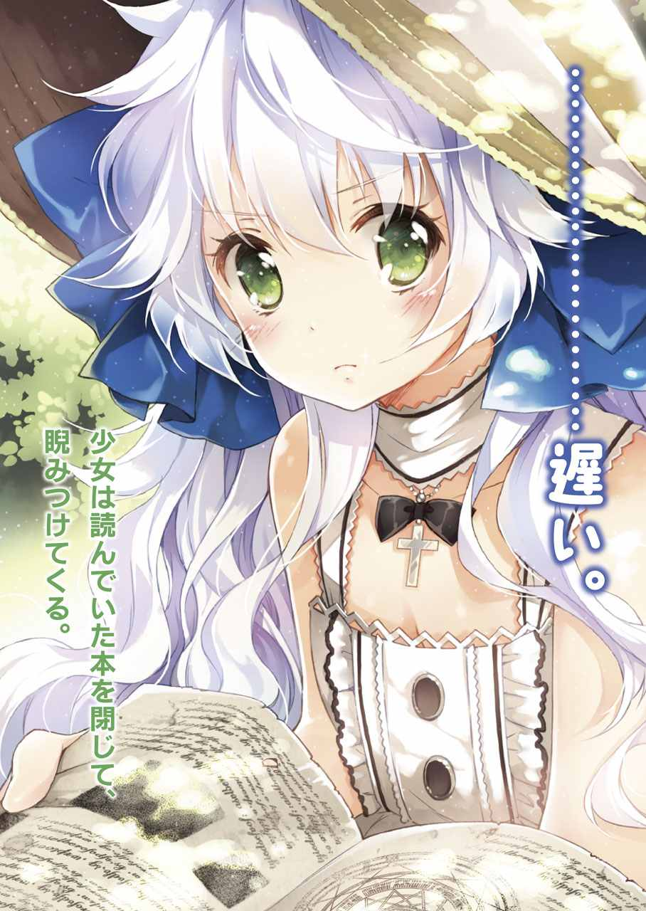
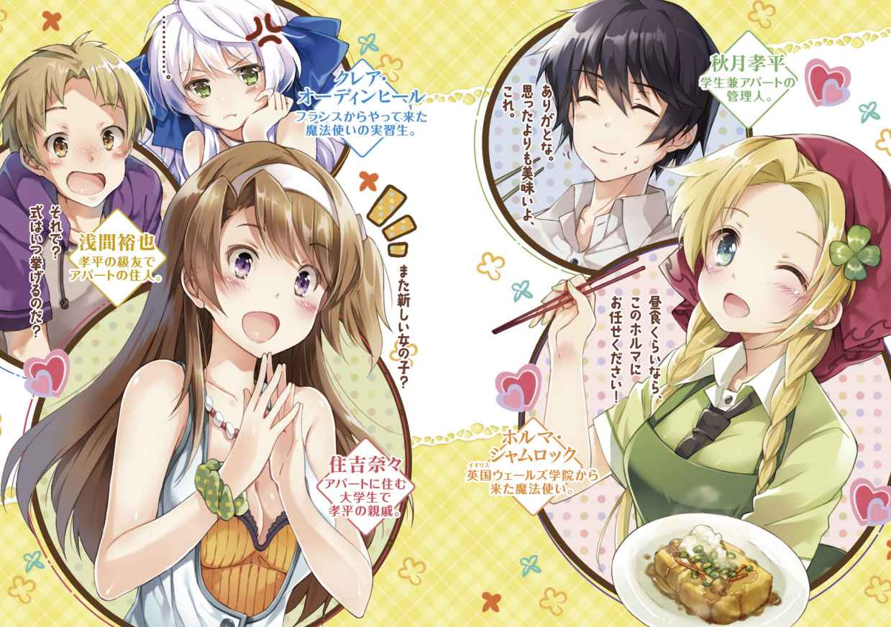
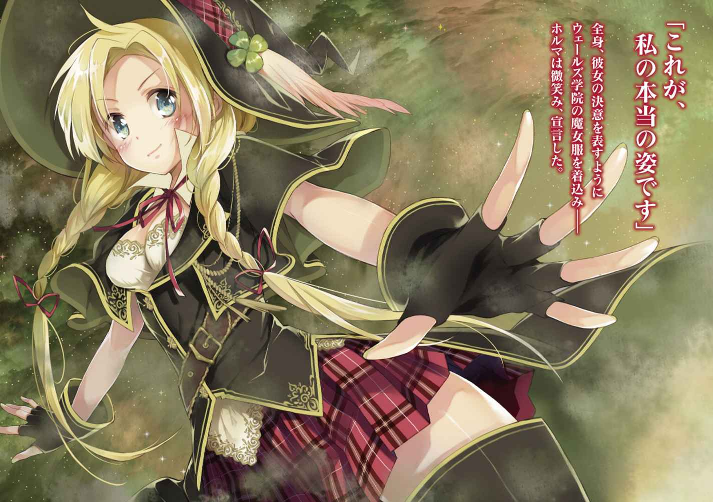
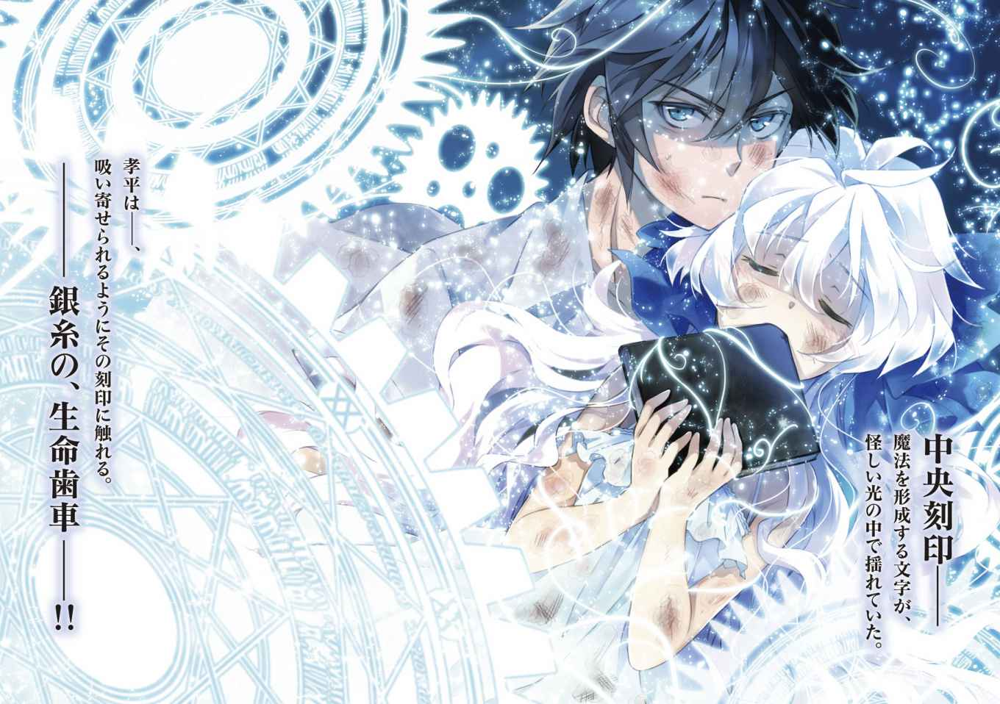
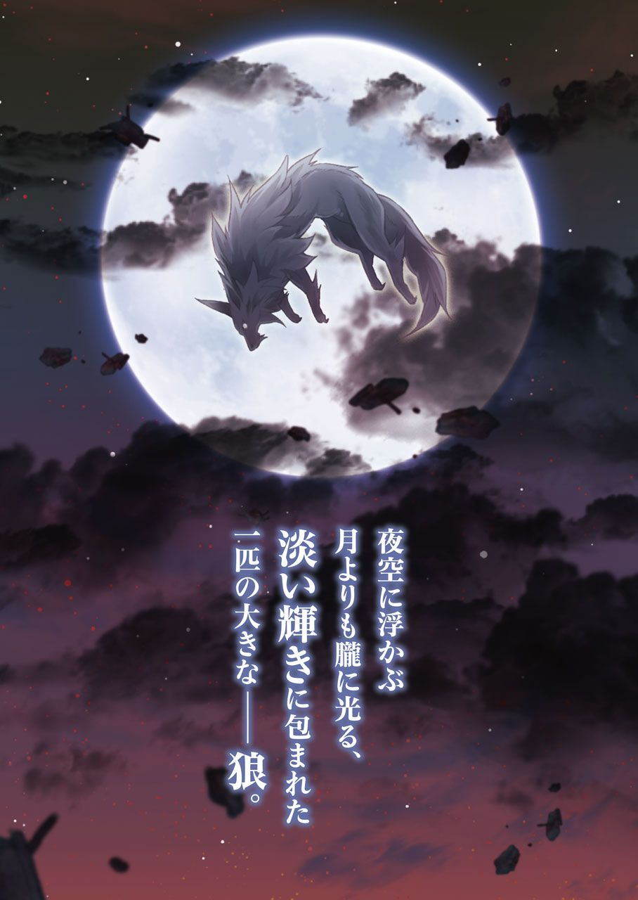
イラスト／もっつん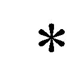
デザイン／ムシカゴグラフィクス
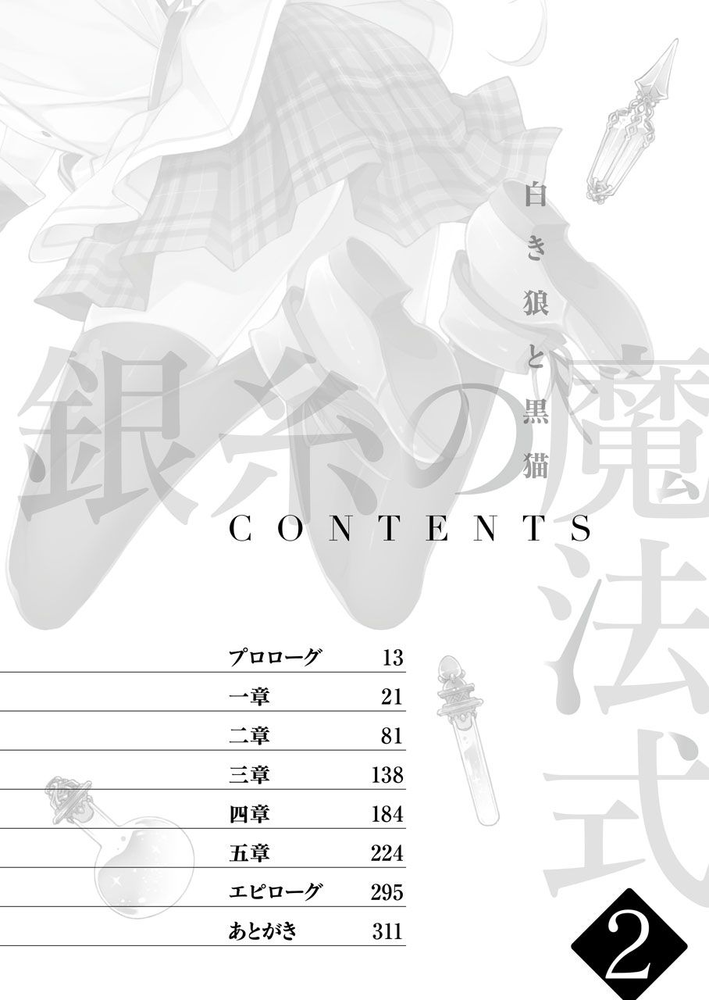
機内は、安らかな平穏に包まれていた。
これが夜間飛行する飛行機の面白さだろう。資料を読む手を止めて、秋月志女乃は離陸時に見たロンドンの夜景を思い出しながら少女のような目を細める。
躍る心は、眠れない子供のそれに近かった。
特に何が楽しいというわけでもないのに、乗客の半分が眠っている機内の雰囲気が心地いい。
ふと、通路を挟んだ奥の席の老紳士と目が合った。
「............、」
何も言わず志女乃が微笑み、現地のタイムズ紙を持った白髪の紳士も少しだけ驚いてから、目元だけで優しく礼を返す。
おそらく、観光に来た裕福な家の若い婦人だと思われたのだろう。
その実、この上品そうな笑みを漏らす女性が自分と同じくらいの歳だと知ったら、老紳士はどういう反応をするだろう。それも、志女乃は見てみたいと思った。
（......もう半日もしないうちに、日本ね）
静かなアナウンスを聞きながら、志女乃は手元に視線を落とす。そこには、『魔法統合の案件』という標題の分厚い資料が広げられていた。
普通の生活を送る人間には、存在を知ることも、手に入れることもできない資料。そこには魔法の世界の細やかな情報が記されており、中でも彼女の目を引いたのは、魔法連盟の統括──ブラハム・オーディンヒールが立案する『魔法の新定義』について書かれた項だった。
それを読む志女乃の目は、先ほど老紳士に向けたものとは違って、曇った苦い色に満ちていた。
「......早めになんとかしないと、ね」
何かを決断するように、志女乃は資料を閉じた。
魔法のことは、これでお終い。
あとは、彼女なりの『日常』と言うべき世界だった。
思いは、はるか海を渡って──日本に残してきた一人の少年に向く。
記憶の糸を手繰り寄せるように、志女乃は窓の外に広がる雲海を見つめた。
「会うのが、ずいぶんと久しぶりになっちゃったわね......」
温かな光を感じる眼差しで、それでも少しだけ切なそうな含みを持って呟く。
私の顔、覚えているかしら？
夜空に浮かぶ月に問いかけるが、答えは見えなかった。
力なく息をつき、顔を外の景色から機内に戻した。
その時──。
唐突に、機内の照明が点灯しだした。
同時に、
『──キキキキキキキィ』
まるで、飛行機の悲鳴のような、凄まじい音が機内に響いた。
驚いて顔を上げた志女乃は、機体が振動するのを感じる。
何が起きたのか。
普通に考えると、飛行機が乱気流に入った際に起きる衝撃。しかし、志女乃は、それとは異なる不気味な気配を感じた。
飛行機の後ろのほうから押し寄せてくる、波動にも似た空気の揺らめき。
直後、機内に暴風が流れる。
まるで、飛行機の窓を全て開け放ったような風圧。風に流されて、乗客の手荷物や新聞紙などが機内の前方に向かって飛んでいった。
志女乃は、長い髪を靡かせて腰を浮かせる。振り返ったのは、風の流れてくる機体の後方部分。そこから、秋月志女乃だけが視認することのできる、光の塵──魔法を使った時に現れる、魔法粒子──が流れてきていた。
機内で、『魔法』が使われた──
そう感じた時には、すでに志女乃の足場は崩れていた。
「──!!」
体が、宙に放り出される。
志女乃が立っていた床が崩れ、目の前にあった乗客の椅子が遠くなり、機内の光景は引き裂かれたように散り散りになった。
飛行機が。
あれだけの安定性と頑丈さを誇っていた鉄の機体が、上空一万と数千メートルもの高さで空中分解を起こした。
目を見開いた志女乃の視界いっぱいに、崩壊した飛行機の残骸が広がる。
コードが剝き出しの骨組み。
乗客が座ったままの座席。
貨物室のコンテナ。
どれも、何か鋭利な刃物で切り付けられて、そして硬い鈍器のような何かでバラバラに砕かれた形跡をもって空中に投げ出されていた。
先ほどまで平穏に包まれていた空間が、噓のような光景だった。
直後、──自由落下。
暗い海に背を向けた状態で、志女乃は残骸と一緒に重力に引っ張られていく。
──このままでは。
──飛行機と一緒に、乗客まで。
そう悟った瞬間、志女乃は両腕を開いていた。
「──崩壊よ、止まれ──」
一声。虚空に向かって強く叫んだ。
同時に、その声に応えるように、手の先に光の塵が集まる。
淡い光のような、ほのかな月明かりと同じ色をしたそれは、彼女の手から放たれて夜空に一つのイメージを形作った。
炎のように煌めき、光が絡み合いながら立体的に浮かび上がる、巨大な魔法の円。
それは、魔法使いが操る、『魔法式』と呼ばれる神秘の象徴だった。
世界でも数人しか存在しない伝承級の魔法使い──秋月志女乃にしか扱えない、時計の円盤を思わせる複雑な文様の書かれた大きな魔法の円。『第一次構成式』が、夜空に顕現する。
そのオブジェが志女乃の周囲に展開した直後、何かが切り替わるように、色のない波動が魔法式を中心に放たれた。
瞬間、世界が凍る。
飛行機の残骸も、空を動く雲も。
砕かれた全ての破片、そして乗客も。果てはネジの一本さえも──
一時的に時の流れが止まり、一枚のモノクロ写真のようになった空間の中で。志女乃は長い髪を靡かせながら飛行機の残骸に着地した。
と、
「............ほう。やはり、見事」
志女乃の正面。
飛行機の残骸の上に立つ影が、感嘆の息を漏らした。
静かに、そして、志女乃の使った魔法に賞賛の笑みを湛えるその人物は──先ほど機内で見かけた、一人の老紳士だった。
「貴方、自分が何をしたのか分かってる？」
自分が周囲の時を止めなければ、今ごろ乗客は──。
志女乃は、怒りを含んだ目で老紳士を睨みつける。
この、ある種の法則──『魔法』によって、瓦礫の停止した空間の中で動ける人物。
その意味は、考えるまでもなかった。
「無論だ、秋月志女乃。このような大事、遊びや酔狂で行えるはずもない」
あくまでも冷静に、あくまでも優雅に。
老紳士は深く頷いて、わざとらしく手を広げてみせる。
「私のような高位と称される魔法使いでも、これだけの魔法式の構築には多大な代償と労力を払うというのに──貴殿は、こうも易々と現実を歪めてしまう力を持っている。そんな術者を足止めするには、これくらいの対処をして然るべきだと私は思うが？」
同意を求めるように、そう呟いた。
「............私一人のために、無関係な乗客を巻き込んだのね？」
「おっと、そう睨まれるのは心外だ。他の乗客には、傷を負わせない用意をしている」
低く通る、歳を重ねた声。
その声に、志女乃の咎めるような罪の意識は感じられなかった。生命さえ無事なら、それでいい。この老人は、そんな顔すらしている。
「それに、彼らは私の術により深い眠りに落ちている。貴殿が心配する要素など、この場のどこにもないと思うが？」
「飛行機を一つバラバラにしておいてよく言えるわね。貴方、自分の足元が見えているのかしら？」
と、志女乃が見下ろす先には、地底への大穴が開いたように極寒の大海原──バレンツ海が広がっていた。
落ちたら最後。寒気を感じさせる高さだった。
しかし、老人は、
「──無論、心得ている。しかし、問題はないだろう」
今、この瞬間の雰囲気を味わうように、目を細める。
この場に相応しくない、不気味な穏やかさで。その魔法使いは志女乃に微笑んだ。
「この、永久に凍てつく海に沈むのは──『源流使い』。貴殿、ただ一人だけだ」
瞬間、老人の体が月明かりの中を飛翔する。
予告を、実行にうつすように。あらかじめ定められていた運命を形にするよう動いた老人の体に、凄まじい魔法の力が溢れた。
「────！」
最後に、秋月志女乃が見たものは。
夜空に浮かぶ月よりも朧に光る、白く白く、淡い輝きに包まれた一匹の大きな『狼』だった。
秋月孝平は、戦っていた。
ここは、喧騒と怒号の入り混じった修羅の巷だ。人間同士が互いに疑いあい、虎視眈々と他者を蹴落とすための機会を探りあっている。
全員、目的は同じだ。
ただ、他人に先んじて目的の『ブツ』を入手するための、醜い争い。
負ければ、容赦なく惨めな敗北者に成り果てる、厳しい世界。
そうならないために、孝平は力の限り大地を蹴り、より遠くまで手を伸ばすのだ。
気がつけば、孝平は力の限り叫んでいた。
「──おばちゃああああん！ こっちにもキャベツひとおおおつッ!!」
現在、孝平はスーパーのタイムセールで死闘を繰り広げている最中だった。
周りには、溢れんばかりの主婦の熱気。......さすがは汐浜で一番の安売り店だけあって、孝平の声は簡単に店内の混雑にかき消されてしまう。
直後、孝平は足を踏まれ、身動きが取れなくなった。そこに飛んできた肘によってダメージを受けて、人の波にのまれていく。
買い物のベテランである主婦、いや──主婦という名の戦士たちに、学生に対する情けや容赦があるはずもなかった。
気がつけば、孝平は群がった人の足に踏まれながら、タイムセールのコーナーの外に蹴り出されてしまっていた。
「..................ひ、肘打ちは卑怯だろ......」
床に手をついて、孝平は目の前の人垣を涙目で見つめる。
普段、こんな場所に孝平は来ない。街で一番の安売り店などではなく、そこそこ安くて堅実に買い物ができるスーパーを今まで使っていた。
でも、今はそれができない。
今年の夏が始まってからの、ある切実な家計の事情により、孝平は今までの生活を見直して、より安価な食材を手に入れる工夫が必要になった。
だから......。
孝平は、もう一度だけ人混みを見つめる。
「負けられないんだ......。俺は、増えた食費をなんとかしなきゃいけないんだよオォォ!!」
怯むな。これも実戦だと思え。
少し前の、ある魔法使いとの決戦を経験してから生まれた心が、孝平にそう呼びかけてくる。
（そうだよ。今だって、あの時の戦いに比べたら）
若干、自分を騙している気がしないでもないが......。
それでも孝平は、なけなしの気力を振り絞って競争と喧騒の人垣の中に飛び込んでいった。
「............なんとか、勝った......。勝てた......」
キャベツを大事に抱え、孝平はボロボロの表情で呟く。
どうして、人は安さが絡むと狂暴化するのだろう。この永遠のテーマをどこかの教授なり学会なりが解明してくれないものだろうか。
レジを終える時にチラリと店の時計を見たが、どうやら午後のタイムセールが始まってから三十分は経過しているらしい。
気がつけば、もう昼の二時だ。
「あー。マズイかな」
買い込んだ食材を袋に入れながら、孝平は表情を曇らせる。
カゴを置き、袋を下げて店の外へと向かった。
焦る心が、無意識に足を速くする。
今までなら、一人で買い物に行ってたし、時間もあまり気にしなかった。そこは一人暮らしの学生、自由さと気楽さは格別なものがあった。
でも、今は違う。
少し前に現れた『魔法使い』の少女によって、孝平の生活はいろいろと形を変えた。
そもそも『魔法』なんてものを知ったのも初めてだったし、その少女を狙って現れた魔法使いの少年と命がけの激闘を繰り広げたなんてのも初めてだった。
全てが『日常』とは切り離された、別の世界の話──。どれが現実で、どれが幻かの境目もあやふやな世界だった。
孝平は、さらに足を速める。
スーパーを出て、頭上の真夏の日差しに目を細めた。
それから、
「............あちゃー。あれ、やっぱり怒ってるよな」
遠く見える景色に向かって、そう呟く。
そこには、飲食店や書店などが並ぶ、繁華街が広がっていた。
その中──レンガ色の歩道にある、街路樹の木陰のベンチに座った一人の少女が見える。
周囲の喧騒から身を引くように、そっと洋書に目を落とす表情。
そこにいるだけで通行人の目を惹く、不思議な雰囲気をもつ外国の少女だった。幼い顔立ちなのに落ち着いていて、どこか冷たい。そして今は、何かに腹を立てている感じに口元を引き結んでいた。
銀色の髪が、木漏れ日で眩しいほどに輝いている。
「........................遅い」
パタン。
少女は読んでいた本を閉じて、そっと近づいた孝平を睨みつけた。
熱心に読書していたようなので、気づかれないように近づいたつもりだったが......。どうも、そこまで本に集中していなかったようだ。
「わ、悪い。本当は、もっと早くに終わるつもりだったんだけど......」
「そうよ。あなた、確か五分くらいで戻るとか言ってたわよね？ だから大人しく待ってたのに」
「ほ、ほら。本屋は？ お前、普通の世界の本が気になるから、そっちを見てくるって言ってただろ？ もういいのか？」
「誤魔化さないで」
ベンチから立ち上がって、少女は追及してくる。
とはいえ、たとえ立ち上がったとしても元々の身長が低めなので、それほど威圧感を受けることもなかったが。
「悪かったって！ だから、ほら。お詫びの印だ」
一応、こういう時のために用意したものがあったので、孝平はスーパーの袋から何かを取り出した。
それは、カップ麵。
即席のラーメンを、孝平はぐいっと少女に向けて突き出した。
実は、最近になって、この少女は食事のたびに即席麵の味を恋しがるようになっていた。前に一度しか食べてないはずなのに、それでも味だけは覚えているらしく、折にふれては要求していた。
「............、」
少女は、ムスッとした表情で本を抱えたまま、
チラッ。
チラッ。
と、横目でカップ麵を見ている。
お？ 食いついたか？ と、孝平が思ううち、少女はその銀髪を振って、こちらに背を向ける。
「............騙されないから」
ポツリ。背中でそう言って、先に歩きだした。
「......？」
これは......。許す、ということなのだろうか。
それとも、とりあえずケンカは保留するという意思表明か？
どちらにせよ、なんとかこの場を乗りきったらしいと判断して、孝平は先に歩きだした少女の背中を追いかけた。
（......まぁ、何とも。扱いが難しいヤツだけど）
孝平は、繁華街の空に広がる入道雲を見上げる。
なんとか、うまくやっていけてる。
祖母の遺したアパートのことも。祖母との縁を頼って来た、この魔法使いの少女とも。
相変わらず憎まれ口ばかり叩くけど、これが、今の孝平と少女の距離だった。相変わらず迷惑ばかりかけられて、でも、なんだか気の置けない、家族みたいな存在。
出会った当初は、こんな風になるとは思ってもみなかった。
魔法連盟の少年と対決して──ボロボロになって──そして守りきった、一人の少女。
それが、彼女。
魔法使いの実習生。クレア・オーディンヒールだった。
帰り道の繁華街は、相変わらずうだるような熱気に包まれていた。
季節は、夏本番。
ようやく高校が夏休みに突入し、コンビニの『常夏パフェ』の文字や、飲食店の『かき氷』ののぼりが目に飛び込んでくる季節に、孝平は炎天下の街中を歩いていた。
「............あちー」
思わず、口に出てしまうほどの暑さ。
うだるような熱気が路上に広がっていて、息苦しいほどの空気が喉にまとわりついてくる。
もし、目の前に氷の入ったプールがあったら、今の孝平なら躊躇なく頭から飛び込むだろう。それほどまでに、真夏の都市のアスファルトというのは灼熱の地獄だった。
「............、」
つい、隣を歩くクレアに視線を向けてしまう。
両手で本を抱える少女は、努めて体の怠さを顔に出さないよう、口元を引き締めて歩いている。
しかし、その額には微かに汗が浮かんでいた。
「............」
「......なによ？」
孝平の視線に気づいたクレアは、居心地悪そうに瞳を向けてくる。
「いや。暑くないのかなと思って」
「暑くないわよ」
即答。
いっそ清々しいぐらいの強がりを言って、少女は洋書を抱え直しながら背筋を伸ばす。
そんな少女の今の格好はというと、袖なしのワンピースに、頭にはつば広の麦わら帽子をかぶっていた。
こうして見ると、夏の青空に映えて何とも涼しげに見える。
これで、抱えている洋書が『魔導書』じゃなければ普通の女の子なのに......と、孝平はやや残念に思う。
「どっか、冷房の効いた喫茶店とか寄ってくか？」
「結構よ。早く家に帰りましょう」
気を利かせたつもりの言葉にも、クレアは首を横に振った。
「そんなことより、孝平」
ジッと、少女は、そんな孝平を帽子の陰から見つめて問いかけてくる。
「な、なんだよ？」
「あなた、いつもいっつも、安売りされてる葉っぱばかり追いかけてるけど。ちゃんと私の魔法研究を手伝う気はあるの？」
「野菜と言え。せめて野菜と」
人を草食動物みたいに言うなと、孝平は軽く訂正する。
それから、先ほどスーパーで買った特売品が入った袋を持ち上げて見せて、
「こっちは、俺たちの生活の生命線だろ。最近、バイトバイトで忙しい浅間の分も頼まれてるんだ。少しでも安く買いたいと思うのは人として当然のことだろ？」
「私が言ってるのは、そういうことじゃないの！ 孝平に、私の保護者としての自覚があるのかってことが聞きたいのよ」
今さらのように『保護者』という単語を出してくる少女に、孝平は眉を寄せる。
「......保護者って。仮に『そういう形』にしてるだけだろ。身元の引受人がいないと、クレアが本国のフランスに帰ってしまうって話だったから」
現在、孝平は『実習生』とかいう、まだ一人前の魔法使いじゃないクレアの保護者──つまり監督役ということになっている。
どうしてそんなことになってるのかといえば、そもそもクレアの保護者になるべき孝平の『祖母』が今はいないことから始まっていて......。
とにかく、さまざまな経緯があって、今は孝平がクレアの『実習』を手伝うことになっていた。
「孝平。分かってるとは思うけど、あなたはシメノの代わりに私の魔法研究を手伝う義務があるの。そこのところ、ちゃんと自覚をもって......」
「あー。あー、そこんとこは一応、理解してるよ。だから、ときたま手伝ってるだろ」
まーた小言が始まったと、孝平は買い物袋を持っていないほうの手で耳栓する。
その態度を不真面目と見たのか、クレアはいっそうムキになった表情で、
「......だいたい、孝平は......！」
と、何か言おうとしたが、結局は孝平の聞き流しポーズを見つめたまま、歯がゆそうに口を動かして、
「......、なによ。......あの時は、すごかったのに......」
諦めた表情で、クレアは密かに口をとがらせる。
ここのところ、クレアはずっとこんな調子だった。
少し前にあった魔法使いとの騒動では、事件が終わった後に一人でアパートを出ていこうとした彼女だったが......。孝平が引き止めてからは、しばらく大人しくして、普通の女の子みたいに孝平と接していた。
しかし、それも一時のこと。
クレアは、孝平があまり魔法に関心を持っていないと分かると、日に日に苛立ちを募らせていって......やがては魔法の研究に誘いにきたり、魔法の本を読んで理解させようとしたり。結局は、元の魔法研究ばかりの少女に戻っている。
クレアは、少し前に発現した彼女の決戦魔法──『銀糸の生命歯車』が、孝平と一緒にいることで発動したと思っているらしかった。
孝平がいれば、きっと志女乃の代わりに、自分の魔法を完成に近づけてくれると。
（......俺なんかに、そんなトンデモなことができるとは思えないけどなぁ......）
深い息をついて、孝平はビルの上に広がった青空に手をかざしてみる。
グー、パー。
拳を握って、開く。
当然ながら、そこにあるのは何の変哲もない自分の手のひらと、青空だけ。
他の人間と変わらない──ごく普通の手。
（この手が、あの時はクレアの手を握って......）
そして、何か。温かなものに触れた気がする。
クレアの手を通じて流れてくる、熱い、血流のようなものに。
あの時のクレアの手は、とても柔らかくて。
強く握ってしまうと、うっかり壊してしまいそうなほど細くて、小さな指だった。
「............ねぇ」
「ハイっ!?」
知らず知らず、意識が遠くに行っていたところを呼ばれて孝平の声が裏返る。
見ると、クレアが不審そうな表情でこちらをのぞき込んでいた。
「なにをそんなに、自分の手ばっかり見つめてるの？」
「な、なんでだろうなー。あはは......」
急に恥ずかしくなってきた孝平は、目をそらしながら乾いた笑い声を上げる。
気がつけば、とっくに繁華街の喧騒は遠ざかっていて、周囲には戸建て住宅やマンションなどが増えてきた。
と、
「──ハァ!? なに言ってんだお前!?」
ふと、横から、そんな少年の声が聞こえた。
見ると、昼間は営業していない居酒屋の横の路地の奥に、数人の少年に囲まれた女の子が立っていた。
「──ですからっ！ あなた方にも非がある、と言っているんです！」
女の子は、声を張り上げて周りの少年を睨む。
見るからにタチの悪そうな集団だった。歳は孝平よりも少し上くらいで、普段は街のゲームセンターとかに入り浸っていそうな格好。
その中の、少女の前に立つ少年は、
「先にぶつかってきたのは、お前だろ？ 謝るくらいできねぇのかよ？」
「避けられないくらい道幅いっぱいに広がっていたあなた方にも、非があります！ 第一、私にはあなた方がわざと当たってきたように見えました」
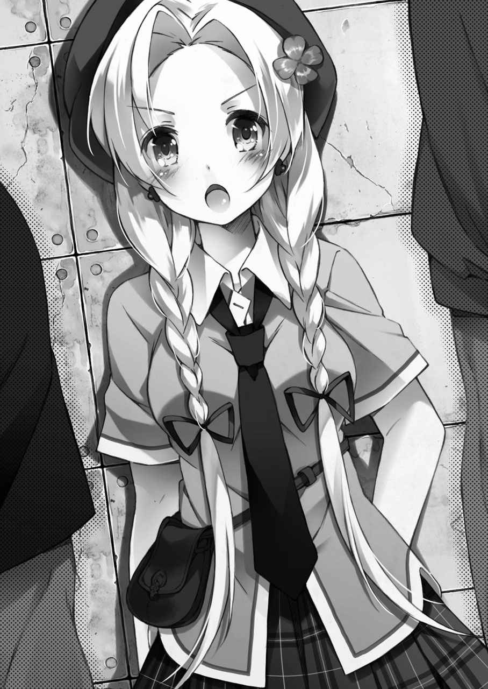
少女は、その人数差に怯むことなく相手を睨みつけていた。
言葉こそ流暢だったが、その少女は、日本人にはない自然な明るさの金髪をしていた。
腰まで届く、長い髪。
声は、凜とした透明感のあるもので、その中には少女の、相手を非難する感情がはっきりと込められていた。
「私が歩いていたのは、誰もが使う公道です！ なのに、あなた方は我が物顔で道を歩いて......。少しは迷惑を自覚したらどうですか!?」
一歩も譲らない少女。
少年たちは、互いに顔を見合わせて、
「あのさ。お前はどうか知らねーけど。俺らのルールでは、先にぶつかってきたヤツが謝んの。で、悪かったーって、反省すんの。なんか、形にしてさ」
「そうそう。君の場合、可愛いから金じゃなくてもいいよ。ほら、もっといろいろあるでしょ？ サービスが、ね？」
軽薄そうな笑いを浮かべて、少年の一人が顔を近づける。
まるで、面白いオモチャを手に入れたみたいな感じだった。もしかすると、最初からそのつもりで絡んだのかもしれない。
孝平は、その光景を遠目に見て──。
（......うわ、あれはマズいんじゃないか？）
心の中で呟くと、路地に向かって足を進めた。
後ろでは、クレアが慌てて、
「あっ!? ちょ、ちょっと！ どこに行くの!?」
「悪い。少しここで待っててくれ」
買い物袋を下げたまま、孝平は急ぐ。
路地では、
「ちょっと遊んでくれるだけでいいんだって。ホラ、おいでよ？」
少年が、楽しそうに抵抗しようとした少女の腕をつかんだ。
暴れて、抵抗されないように。いや、むしろ抵抗されるのを期待して、楽しもうとすらしている少年の手を、
「──ちょい、ストップ!!」
横から、孝平がつかんだ。
「なっ」
不意に割って入った邪魔者に、少年たちは目を剝く。
構わず、孝平は、
「あんたたちさ、いい加減にしろよ。こんな女の子相手に」
数に任せた、弱い者いじめ。孝平はイライラしていた感情を込めて睨みつける。
しかし、少年たちは怯むことなく、
「ハァ？ なんだよ、お前は関係ねぇだろ!?」
苛立ち、逆に睨み返してくる。
孝平は、そんな集団から目を移して、
「......ほら、逃げるぞ」
すぐ隣の。孝平が助けに入った少女に声をかけた。
少女は、孝平の出現に驚いていた。見開いた瞳は、吸い込まれそうなくらい澄んでいて──顔立ちは、こんな場面でも言い返すだけあってどこか気丈そうだった。
分けられた前髪からのぞく明晰そうな額が、同時に何ともいえず愛嬌を感じさせる。
孝平は、呆然としている少女の手をつかむと、
「早く！」
「......あっ」
硬直した路地の空気の中を、動いた。
正面から争っても意味がないのは分かりきっていたので、方向転換をして通りに向かう。囲んでいた少年たちには意外だったらしく、走り出した孝平の動きに追いつけていなかった。
が、
「──、待てよ!!」
もう少しで逃げきれるかという時に、少年の一人に肩をつかまれる。
「......っ！」
「んだよお前!? 好き勝手言って連れてってんじゃねえよ」
声を荒くする少年。と、少女は振り返りざまに睨みつけて、
「勝手も何も！ この方は、人として正しいことをしただけです。あなた方こそ、恥を知って深く慎むべきです！」
「ちょ、ちょっと。余計な刺激するなって！」
再び罵倒を始めた少女に、孝平は慌てて声を上げる。
そんな理屈を言ったところで、今は何の解決にもならないことは分かりきっていた。それどころか、相手を余計に怒らせるだけだ。
案の定、少年の何人かが歯を剝き出しにして、
「テメッ......」
暴力に訴えるつもりらしく、拳を握って踏み込んでくる。
が、それよりも早く少女は、
「──呪いは雛鳥のようにねぐらに還る（Curses, like chickens, come home to roost）──」
スッと目を細めて、囁いた。
直後、さっきまで何も持っていなかったはずの少女の手から瓶が落ちる。
カツン！ と、アスファルトに当たって高い音を立てた。
「......？」
香料でも入ってそうな、小さな瓶。
それは孝平を無視して、コロコロと路地裏の地面を転がる。
やがて、少年たちの足元に到達すると、
──コトン。
と、まるで意思があるように立ち上がった。
直後、
「......っ!?」
ピィィンと、糸を張るような微かな音とともに、少年たちの動きが一斉に止まる。
ある少年は壁に寄りかかったまま。また、ある少年はつかみかかろうとした体勢のまま。
自分たちに何が起きたのか理解できない表情で、ただ困惑した瞳だけが動く。
「......さ、行きましょう？」
と、空白の時間の中で、少女は何事もなかったような表情で孝平に囁きかける。細くて冷たい指が、孝平の手を取った。
「え？ お、おい......」
と、引っ張られるように孝平は歩く。
振り返ると、少年たちはまだ静止したままだった。
いったい、何が起きたのか──。考えられるのは、いつの間にか少年たちの足元で砕けている『瓶』が、目の前の現象と何か関係があるかもしれないということ。
しかし、その直後、
「──っ。お前ら!! 逃げんな!!」
石のような硬直が解けたらしい少年たちが、血相を変えて孝平たちを追いかけてきた。
その形相は凄まじく、何が起きたのかを深く考えるよりも、自分たちをコケにして逃げ出した孝平たちを八つ裂きにする勢いだった。
「......怒ってますね」
「当たり前だろ！ なんでわざわざ刺激するようなこと言ったんだよ！」
「だって。ああでも言わないと、彼らは自分たちの間違いに気づきませんから」
走りながら、少女は生真面目な表情で語る。どうやら、根本的に話が嚙み合ってないみたいだった。
と、
「──うあっ!?」
ドスン!! ガラガラ......。
足を滑らせたらしい少年の倒れる音と、それに重なり合うようにバケツの倒れる音が聞こえてきた。
どうやら、路地の隅にあるバケツに、少年が突っ込んだらしい。
他の少年たちも、前の少年に重なるように転倒する気配が伝わってくる。
何が起きたのか、考える間もない。表通りに出た孝平は、今さっきまで逃げていた路地を振り返った。
居酒屋の隣の路地には、派手に倒れたバケツと、その中身と戯れるように転がる少年たちの姿が見えた。
と、
「............？」
孝平は──その奥に、変な『生き物』を見た。
道の中央に、静かに佇む白い動物。
隠れることもなく、路地の風景の中から少年たちを無視してジッと見つめてくる生き物は──どこか獰猛で、不思議な野性味を孝平に感じさせた。遠くから見ると犬なのだが、その体軀や牙の鋭さが普通とは違うような......。
「──孝平！ なにボーッとしてるの!? 逃げるわよ！」
「え？ あれ？ クレア？」
いつの間にか現れたクレアに、腕をつかまれた。
「早く行かないと、あの民間人たちが追いかけてくるわ。今のうちに離れないと」
「あ、ああ......」
急かされるように、孝平は手を引かれて走った。
最後に、孝平はもう一度だけ路地を振り返る。
景色の中には──もう、何の姿も見つけられなかった。
その後、走りに走った孝平たちは、適当な公園に逃げ込んだ。
「......っ、はぁ、はぁ......っ！」
近くにあったベンチに手をついて、孝平は荒い呼吸を整える。
周囲には、親子連れが遊ぶ姿があり、子供のはしゃぎ声が聞こえてくる。
「に、逃げきったか......」
突っ伏す孝平と、そのベンチに倒れ込むクレア。流れでついてきた少女は、隣の芝生に座り込んでいた。
明らかに、場にそぐわない三人組。
静まっていく心臓の音を確認しながら、孝平は平和な公園の景色を見まわす。
さすがに、ここまで逃げれば少年たちも追ってこないだろう。
「............うぅう」
と、クレアがベンチの上で呻いた。
普段からあまり体を動かさず、外にも出ない魔法使いに、この運動は厳しかったのかもしれない。ぜえぜえと死にそうな息をついている。
「クレア......？ 大丈夫か？」
「............大丈夫な......わけないじゃない」
鬼気迫る声。のっそりと体を起こした。
「どうして孝平は、こんな変なことにばっかり手を出すの!? 逃げきれたからいいけど、そうじゃなかったら孝平まで巻き込まれてたのよ!?」
「いや、だって......。あんな現場を見たら、何かしないと後味悪いだろ」
「でも、だからって！」
それがトラブルに飛び込んでいい理由にはならないと、クレアはムキになって怒ってくる。汗でくしゃくしゃになった銀髪が、その苦労を物語っているようだった。
と、その隣で、
「お二人とも！ ケンカはやめてくださいっ！」
芝生に座り込む少女──この騒ぎの発端になった人間が、孝平とクレアの間に割って入る。
「この方は、人として正しいことをしました。人として、当たり前に為すべき正義の振る舞いをしたのです。その心意気に、何も咎められるべき罪はありません！」
「あ、あなたね！ だいたい、あなたが原因で面倒なことになったんでしょ!?」
他人事みたいにジャッジを下す少女に、クレアは腹を立てる。
普段、クレアはあまり他人と話したがらない人間だが、こればっかりは黙っていられなかったらしい。
しかし、相手の少女もめげずに、
「私たちは、ごく自然に正しい振る舞いをしただけです！ それを非難するなら、あの人たちの不義の片棒を担ぐことと同義です!!」
「な、なによその理屈!? ぜんぜん筋が通ってないじゃない!!」
休日の公園で、過熱する論議。
事情を知らない子供連れの親は遠目にこちらを見つめており、事情を知ってる孝平もやや気まずくなりながら二人を見つめる。
相手の少女は、座り込んだ姿勢のまま身を乗り出すように、
「そもそも。そんなに私とこの方の行動が気に入らなかったのなら、どうして途中で手を出したりしたのですか？」
「......！ な、なんのこと？」
ぎくっと。思い当たることがあるのか、クレアは眉を寄せながら身を引いた。
が、少女は目をそらさずに、
「魔法ですよ、魔法。さっき、この方が追いかけられているのを見て、あの人たちの足元に氷の魔法を張ったでしょう？」
「............!!」
言われて、クレアは目を見開く。
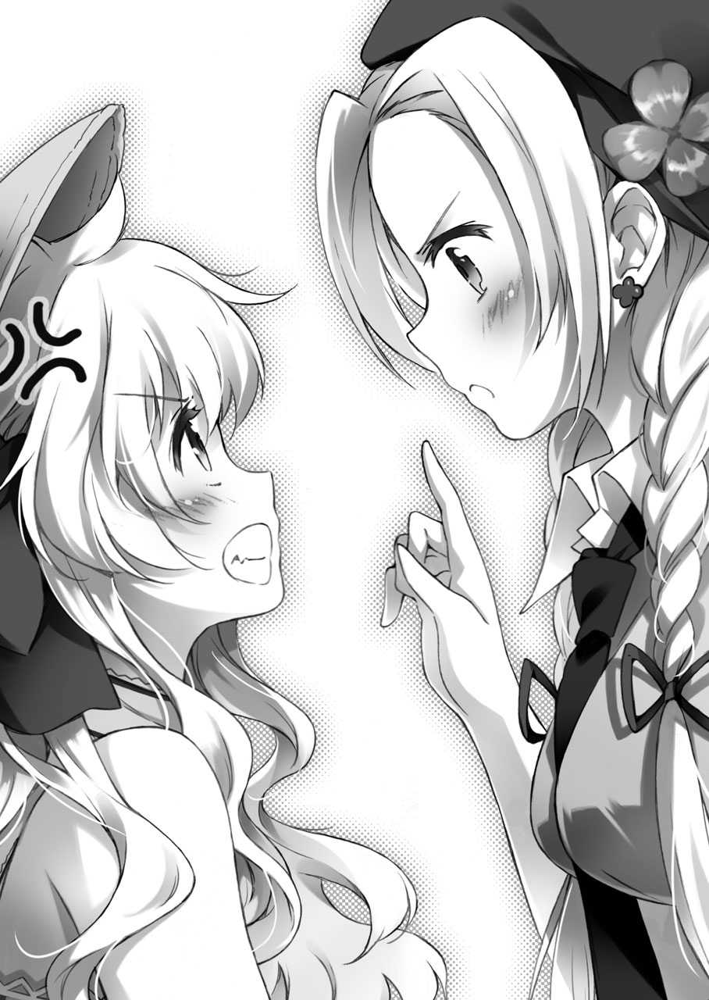
「ど、どうして......」
「あんな不自然に転んでたんですから、少し考えれば分かります。系統は......そうですね、おそらくはフランス魔法学。あそこは錬金術の流れを汲んでいて、大気を氷に変えるみたいな元素転換に特化してますから」
流暢に。
呆然とするクレア、そして孝平の前で、少女はすらすらと難解な言葉を話し始める。
おそらく、魔法関連と思われる言葉を。
孝平たちの周囲の暑さが、その『違う世界』の話で一気に引いた気がした。
あれだけ煩わしかったセミの鳴き声も──どこか、遠くに感じる。
──と、少女は、
「あっ。その肘......」
「えっ？」
急に会話とは関係のないことを言い、孝平の腕を見て慌てた表情になる。
どうしたのかと肘を見ると、彼女の言うようにいつの間にか擦りむいたらしい傷があった。
「さっき助けていただいた時に、擦りむいたんですね......？ 少し、待ってください」
「へ？」
言ってから、少女はポケットから小さな瓶を取り出して、孝平に膝が密着するほどに近づいてきた。
「お、おい!?」
「動かないで。今、手当てします」
冷静に言うが、その顔が孝平のすぐ目の前──吐息がかかりそうなほど至近距離に迫っていた。
「............っ！」
思わず、孝平は息をのむ。
初対面の。というか、学校のクラスの女の子にもこんなに近づかれたことない孝平だ。傷口に目を落とす少女の表情に、思わず硬直していると、
「あ、あなた！ 孝平になにを......」
「応急処置です」
自分の専有物に手を出された感じに怒るクレアに、少女は簡潔に応える。
それから、孝平の肘に数滴、瓶の中身の液体を落としてくる。
じわりと、疼くような熱を感じた。
「......これで大丈夫です。ケガの治療は、早めにしておいたほうがいいですから」
「あ、ああ......。ありがと」
渡されたハンカチで傷を押さえながら、孝平は礼を言う。
急に近づいてこられたので驚いたが、とりあえず悪意があってのことではなさそうなので、素直に礼を言うことにした。
と、隣ではクレアが、
「その薬......」
訝しむ表情で、そっと呟く。
少女は瓶をしまいながら、
「ええ。生薬を煎じて、魔法で調合した『魔法薬学』の薬です」
「......！ 魔法薬学!?」
クレアは、その言葉に驚きを隠せずに、
「ど、どこでその言葉を......？」
「決まっています。私も、そちらと同じですから」
少女は、静かに目を閉じて息をつく。
堂々と。自分の胸に手を置いて、
「私の名前は、ホルマ・シャムロック。薬学を専攻する魔法使いで、消えた『師』の消息を求めて英国・ウェールズ学院から来ました」
「ま、魔法使い......ですって......!?」
「マジ、かよ......」
少女の言葉に、クレアは絶句して、孝平も呆然と口を開く。
言動こそ風変わりではあったが、それでも彼女の格好──制服を連想させるチェック地のプリーツスカートに、シャツを着たその姿は、どこにでもいそうな普通の女の子に見えた。
衝撃──なんてものじゃない。
この街、この汐浜市に、また一人──『魔法使い』と名乗る人物が現れた。
魔法使い。
それは言葉の通り、現実ではありえない物理法則、現象、その他諸々......。とにかく、とんでもないことを仕出かす『魔法』というものを操る人間のことだ。
正直なところ、こういった人種と関わる機会なんて一生に一度あるかないか、というレベルに思える。
いや、訂正。
ハッキリ言って、そんな機会はない。特に、その辺にいくらでもいるような普通の学生の孝平にとっては、まず出会える存在ではない。
なのに。
「──わぁ！ 今にも倒壊しそうな建物ですっ！」
「............ボロで悪かったな......」
瞳をキラキラさせる少女──ホルマに、孝平はバツが悪くなって呟く。
孝平たちが見ているのは、海辺近くに佇む古いアパート。昔は祖母が暮らしていて、今は孝平が管理を任されている建物だ。
それから敷地に踏み込んで、
「とにかく、冷たいお茶くらいは出すよ。話は、それからでいいだろ？」
「はい！ お邪魔します！」
言ってから、ホルマも孝平に追従する。
最後尾では、ぶすっとした表情のクレアが一足遅れてついてきていた。
「............私の時は、何かの間違いだって思ってたくせに......」
「ん？ なんか言ったか？」
「べつに」
プイッとそっぽ向くクレア。
買い物で待たせた時も機嫌が悪かったが、今はそれ以上に不満がある表情だった。
まぁ、孝平はクレアについては不満が服を着て歩いているような人間だと思っているので、それほど気に留めないようにしていた。
それより、問題なのはもう一人の魔法使いの少女だ。
「えっと、ホルマ......だっけ」
「はい。ホルマ・シャムロックです」
自分の部屋の鍵を開ける孝平に、ホルマは丁寧に答える。
「さっき、師を探しに......みたいなことを言ってたよな？ それって、どういう意味なんだ？」
「言葉の通りです。ずっと所在が分からなかった私の師の消息を、この街で知ることができると情報を得まして」
この街で......？
孝平は、その言葉に妙に引っかかるものを覚えながら部屋の中に入る。
室内は、夏だけあってサウナ状態にまで蒸し上がっていた。とりあえず部屋中の窓を開放して、外からの風を呼び入れる。すると、アパートの正面からの涼しい海風が部屋の熱気を吹き流してくれた。
「......っと。どっか、その辺にでも座ってくれよ」
興味深そうに部屋の中を見まわす少女に、孝平は声をかける。
クレアに関しては、孝平が何も言わなくても、慣れた動作で部屋の隅に畳まれた布団の上にボフッと腰かけていた。
手慣れているというか、なんというか。よくも日本に来てからの短い期間で、こんなに自分の家みたいに気楽に過ごせるものだと呆れてしまう。
孝平は冷蔵庫から冷えた麦茶を出しながら、
「消息......って、その師匠とかも魔法使いなのか？」
「ええ、そうです。......とはいえ、以前、私に親切にしてくださって、高価な薬学の魔導書を譲っていただいた以外は、あまり接点のない方でしたが......」
もしかすると、自分が勝手に『師』だと思っているだけかもしれない──と、少女は弱気な表情で話した。
「でもっ！ でもですよ!? それでも、私は優秀な薬学の魔法使いになりたいんです！ だから尊敬できる一流の魔法使いの『あの方』に会って、もっといろいろなことを勉強したいんです！」
「うーん。あ、とりあえず麦茶でいいか？」
「あっ、ありがとうございます」
孝平が差し出したコップに口をつけて、ホルマは一気に飲み干す。
どうやら、そうとう喉が渇いていたようだ。
「......おかわり、いるか？」
「す、すみません。いただきます」
差し出されるコップ。それに冷えたお茶を注ぎながら孝平は、
「それで？ その、探してる人っていうのは？」
「えっと。先日まで、本当に消息が分からなかったんです。でも、少し前に魔法連盟のほうで動きがあって。それから、私の所属する英国の魔法界にも噂が聞こえてきたんです」
「へえ。どんな？」
「──師が、亡くなったって」
何の気なしの問いの答えに、孝平は動きを止める。
少女は、再び満たされたコップに目を落として、
「その内容は、私の本国でも公に取りざたされていて......。一部の情報だと、その噂は事実で、今ではその方の所有していた多くの魔導書も、高価な魔法工芸品の数々も失われたと聞きました」
「............、」
ようやく一息ついた金髪の少女は、丁寧な仕草で飲み終わったコップをテーブルの上に置いた。
「噂の真偽はともかく、まずは消息を探るところから始めようと考えまして。それで、私はこの街を訪れたんです」
「............あ、あのさ」
孝平は、その話の中で感じた『何か』を探るように口を動かした。
彼女の言う一流の魔法使い。所有していた多くの魔導書。それに、この街──。
悪い予感がする言葉の連続に、孝平は、
「その、師匠とかの名前......。聞いてもいいかな？」
「ええ。他でもありません。助けてくださったあなたに隠し事は不要でしょう」
そう言って、ホルマは信頼に満ちた瞳を向けてくる。
「あの方は、伝承にも残る強大な力を持った魔法使いでした。名前は、魔法を知る者なら一度は聞いたことがあるでしょう。その名は、秋月志女乃──」
「......ごほっ!!」
瞬間、コップに口をつけていたクレアが派手に咽る。
けほっ。けほっ。お茶が気管に入ったらしく、瞳を潤ませながら咳き込んだ。
「だ、大丈夫か!?」
孝平はそんなクレアの悶絶する顔を見ながら、
「というか、やっぱりか......！ また、あの人に関係のある魔法使いか!?」
「？ また、ですか？」
キョトンと。ホルマは、意味が分からないという表情で首を傾げた。
その不思議そうな少女に、孝平はクレアを見ながら、
「ここにいる、クレアもそんな感じなんだ。ばあちゃんに困ったら訪ねて来いって言われて、それからこの街に来て......」
「えっ？ ま、待ってください！」
さらっと孝平が口にした言葉の中から、ホルマは重要なポイントを発見したように、
「お祖母様......？」
「そうだ。俺の名前は秋月孝平で、秋月志女乃は俺のばあちゃんの名前だ。......といっても、今はいないけどな」
「い、いない!? それって、やっぱり......？」
驚くホルマに、孝平は一から......。
つまり、二年前に起きた志女乃の『飛行機事故』を説明する必要があった。
それから、しばらくして。話を聞き終えた少女は、
「まさか。そんな......」
巨大な壁に阻まれたように、絶望しながら肩を落とした。
「......噂は事実だったのですね......。だから、今まで消息が分からなくて......」
「お、おい......」
風船がしぼんだ表情で、ホルマは力なくうつむいた。なにやら、先ほどまで満ちていた覇気まで失せてしまったように見える。
「それでは......あの方が収集したと噂される魔導書が失われたというのも......」
「え？ いや、それは隣の書斎にあるけど」
「ほ、ホントですかっ!?」
すがりつくように、ホルマは顔を上げた。隣では、孝平の不用意な発言にクレアが睨んだ気がした。
「で、では......薬学関連の書も!?」
「それは分からないけど......。あれだけの数があるんだし、探せば一つくらい見つかるんじゃないか？」
そう孝平が言った瞬間、目の前の少女はズザザッと畳を後ずさって勢いよく平伏した。
「──お願いしますっ!!」
どこで覚えたんだろうと呆れてしまうほど見事な土下座を敢行してから顔を上げ、形のいいおでこを孝平に向けて叫ぶ。
「私を──この私をしばらく、ここに置いてくださいっ!! そして、あの方の収集した薬学書の閲覧許可をお願いします!!」
「ええ!? ちょ、ちょっと......」
「お願いします！ 頼み入りますっ！ 私にできることなら炊事洗濯から雑用、何でもします！ ......あっ、でも......あんまり不義なことは......その......」
と、何を想像したのか、少女は頰を赤らめて視線をそらした。
孝平は、そんな少女の様子に呆然としていた。隣のクレアを見て、
「な、なんでこんなに必死なんだ......？」
「............シメノの魔導書だからよ。あれらは、どれも魔法界では一級品なの。その本が並んだ書斎は、それこそウェールズの魔法図書館以上の価値があるから」
と、どこか刺々しい声で説明するクレア。
孝平は、今になってその顔が不機嫌なことに気がついて、
「......なんかお前、怒ってないか？」
「べつに。怒る理由なんかないわよ」
口ではそう言いつつ、やはり苛立った表情でクレアはそっぽ向いた。
それから、横目で孝平に、
「だけど、どうするの？ また魔法使いを受け入れるの？」
「............それだけどさ」
と、孝平はきまり悪い口調で頰を搔いた。
チラッと、再び平伏のポーズをとる英国の少女を見ながら、
「お前、この子の面倒を見てやれないか？」
「えっ!?」
その言葉に驚いて、クレアは目を見開いて孝平を見た。
「ほら、この子も同じ魔法使いだろ。ばあちゃんのことも知ってるみたいだし、べつに全く関係ないってことでもないんじゃないか？」
「......、孝平は......」
クレアは、目の前の少女を見ながら顔を曇らせて、
「孝平は、私が人と話すの苦手だって......知ってるでしょ？ どうしてそんなこと言うの？」
「いや、どうしてって......」
クレアの声は、怒っているようで悲しさを含んだものだった。
しかし、相手は魔法使いだ。受け入れる、受け入れないの話以前に、とても孝平一人の手におえる存在ではないように思えた。
孝平は、魔法使いの世界については本当に何も知らないのだ。
「じゃあ、この子はどうすればいいんだよ？」
「知らないわよ。孝平が好きに決めればいいじゃない」
「お、お前な......！ 一応、お前ら魔法使いの問題でもあるだろ!?」
「知らない。私には関係ないもの」
フイッと、顔を背けるクレア。
関係ない、では済まされなかった。何が気に入らないのかは分からなかったが、この場に魔法使いは、このクレアとホルマの二人しかいないのだ。
孝平は苛立ち、クレアもそれに応じる。と、ホルマは言い争いを見かねて、
「あ、あの......。その。そんなに、ご心配には及びません！」
と、声を張って切に訴えかける。
「私、お孫様には絶対に迷惑をかけないよう努めますし......。先に住まわれてるそちらの方の研究を邪魔したりしないようにも心がけます！」
「......。べつに。研究とか......そういうことじゃないわよ」
クレアは怒りの矛先を失ったように、苦い顔で呟いた。
それから、ぶつぶつと言い訳するように、
「......ここは、シメノの場所なの。本当は、誰も入っちゃいけないところで......他の魔法使いが興味だけで入ったりしちゃ、いけないところなの」
クレアは、まるでそれを墓荒らしか何かみたいに言った。
「だから。だから誰も......私でも入っちゃいけないところなんだけど......。でも、私はシメノと約束したから。約束して、シメノみたいな魔法使いになりたいからここにいるの」
「......、えっと......。つまり、資格があるのか......ってことですよね？」
クレアの心は複雑で、分かりにくいものだった。
ホルマは、その話の中から大事な部分だけを拾うように言ってから、
「大丈夫です！ 私だって、あの方にはお世話になりましたし。きっと、気持ちだけなら一緒のはずです」
クレアの警戒心を和らげるよう、そう微笑みかけた。
「とても、有名な術者とは思えないお人柄でしたし。憧れる人だって沢山いましたよね？ 私も、あなたと一緒で......」
「──っ！ 違う!!」
瞬間、鋭く。
さらに何か続けようとしたホルマを、クレアは拒絶した。
「違う......。違う......！ 私とシメノは......そんな......そんなのじゃない！ 魔導書を譲ってもらったとか、勝手に『師』と思ってるとか......！ そんなのと一緒にしないで！」
何か、心の奥で大事にしていたものが土足で踏みにじられたように。クレアは小さな肩を怒らせて、精一杯の力で叫んでいた。
その急な変化に、ホルマは身を竦ませる。
孝平も隣で驚きながら、
「お、おい？ クレア......？ お前......どうしたんだ？」
「......っ！」
孝平の不審そうな表情。本当に自分の気持ちが分かってなくて、ただ不思議そうにしている顔に、クレアはぎゅっと手を握りしめた。
「............孝平にだって......。孝平にだって、分からないわよ！ 約束した研究にもろくに付き合ってくれないくせに！」
叫びは、もう子供のそれに近かった。クレアは孝平を突き飛ばすような勢いで立ち上がると、逃げるように部屋の外に向かった。
「お、おい......！ どこに行くんだ!?」
「自分の部屋に帰るのよ。この分からず屋のバカ孝平！」
それだけ叫んでから、クレアは力いっぱい玄関のドアを閉めた。
派手な音が室内に響き、そんな──嵐が過ぎ去ったように呆然とする孝平と、畳に座ったまま硬直する少女だけが部屋に残された。
少し軋んだ音を立てるドアを開くと、室内からは埃っぽい空気が溢れ出てくる。
薄暗い書斎の中には、無造作に並べられた本棚とガラクタのシルエットが積み重なるように奥まで続いていた。
「えっと......。もしかして、これが全部......あの方の遺した本......？」
「ん。まぁ、そうだな」
恐るおそる確認してくるホルマに、孝平は頷く。
祖母──秋月志女乃の書斎。
いつまでも時の止まった、孝平の部屋の隣にあるその場所。
祖母という主を失ったこの部屋はどことなく空気が違い、部屋そのものが息をし続けている不思議な匂いに満ちていた。
きっとこれは、部屋の主が月日を経て懐かしいものになっていく......過去の匂い、だ。
「すごい......。こっちは西洋占星術の思想書が天体図と一緒に並んでて......。こっちには『ソロモン王の大きな鍵』が七巻全部揃ってる......」
そんな中、息をするのも忘れたように、ホルマが無数の本を見上げる。
その中の一冊に手を伸ばそうとして、それから躊躇するように引っ込めた。
「あの。これ、私が触ってもいいんでしょうか......？」
「いいんじゃないか？ だって、そのために来たんだろ？」
「それは......そうですが......」
ホルマは手元に視線を落として、暗い表情になる。
きっと、さっきの部屋でのクレアの言葉を思い出しているのだろう。
孝平から見ても、あのクレアの怒りかたは......少し、変だった。というか、あんまり見たことのない様子だったように思える。
「私。なにか、出過ぎたことでも言ったのでしょうか......？」
「ん。いや、気にするほどでもないだろ。アイツが意固地になることくらい、日常茶飯事だし」
「そう、ですか......」
と、微かに頷いた少女は、そこで何かに気づいたように、
「......あっ！ 『カバラの数秘全集』の間に『今日の献立』が挟まってます」
「ああ、それか。邪魔になった料理本があったから突っ込んどいた」
「えええええっ!?」
何気なしに孝平が答えると、ホルマが両手を胸の前に当てて目を丸くする。
近くで急に叫ばれて、孝平は軽い耳鳴りを覚えた。
「ど、どうしてそんなことを......!?」
「いや、だって。ここは俺にとって物置みたいなもんだし。使わない本とか道具はこっちに移すようにしてるんだ」
「どっ......どうりで、魔法学に関係のない小物や段ボール箱が床に散乱してると思いました......」
やや引きつった表情で、ホルマは書斎の中を回す。
彼女の言う通り、この部屋の中には得体のしれない鉄製の地球儀や、アンティーク調の古い電話機が置かれているかと思えば、その隣に読み終わった少年漫画誌や壊れたオーブントースターなどが鎮座していた。
孝平は頭を搔きながら、
「これでも、ずいぶんと数は少なくなってるほうだと思うんだけどなぁ。不用品とか回収前の古紙とかを置いたら、なんでかクレアが怒鳴り込んでくるし......」
「あ、当たり前です！」
顔を近づけるようにして、ホルマは叫んでくる。
「どこの世界に──祖父母の遺した形見を蔑ろにする人がいますか！ その行為は不敬に値します！」
「えー。そうは言うけどさぁ？」
その敬うべき相手が、クレアに日本に来ることをそそのかしたり、魔法を探しにだとかいって、年がら年中海外を旅してまわっていた無責任な自由人なのだ。
とてもじゃないが、そんな人間を尊敬するような真似は孝平にはできない。
「ホルマだって、あの人のテキトーさに乗せられてここまで来たんだろ？」
「違います！ 私は、自らの意思でここに立っているのです！」
正しいことを正しく主張する表情で、ホルマは胸を張る。
「秋月志女乃様は、素敵な方です。他の誰よりも自分を律し、その行いは常に誠実で、人が傷つくと我がことのように涙を流す方です」
「............お前、ホントにばあちゃんを見たことあるのか？」
「なっ!?」
あまりにも孝平の中にある祖母のイメージとかけ離れていたので、ついつい疑いに満ちた視線を投げかけてしまう。
「しっ、失礼な！ 私を疑っているのですか!? 私の言動に噓偽りがあると!?」
「い、いや。そういうわけじゃないけどさ」
よっぽど心外だったのか、ホルマは発言を撤回しろと言わんばかりの勢いで、孝平のシャツをつかんでガクガクと揺すってくる。
「私、これでも人から信頼を失うような生き方はしてきませんでした!! 一生懸命だったんですよ!?」
「......そ、そうか。懸命さだけは伝わってくるよ......」
「魔女学だって、十分に学習しました。特に薬学の知識なら、ウェールズ学院のどの生徒にも負けない自信がありますっ！」
「............そっか。ところで、そろそろ息が苦し......」
「一応、学年では首席なんですよ!? こんな私でも、頑張れば皆に認めてもらえるんですっ!! だから......えっと......、あれ？ なんの話でしたっけ？」
「............いいから放せよ......」
何が言いたいか忘れてしまった少女に、孝平は冷静にタップする。
と、そんな時に書斎のドアが開いて、
「──あら？」
ドアの陰から、栗色の髪の女性が顔を出した。
今しがた帰宅したらしく、その手には高価だが嫌味ではないブランドもののトートバッグが下がっていた。
「ここにいたの？ 孝平くん」
「え。えっと、お帰りなさい......奈々さん......。今日は大学に？」
「ええ。少し用事があって」
と、孝平の隣に住む住吉奈々は、軽く挨拶を交わしてから、
「それより、その子はどうしたの？」
キョトンと。孝平につかみかかったまま驚いて硬直した少女を見つめる。
ホルマは、世間一般とはあまり関わりのない魔法使いの性なのか、そんな奈々に見つかって『人と目を合わせた野生の小動物』みたいな表情をしていた。
孝平は、そんな微妙な空気の漂う室内で、
「その......。少し、話がややこしくなりますが......」
「また新しい女の子？」
「そういう非常に誤解を誘発する言いかたはやめてください!!」
真剣に首を傾げる奈々に、孝平は声を大にして叫ぶ。
それから何やら隣で目を輝かせて「なんです新しい女の子っ......」と余計な興味を示そうとしたホルマの口を塞いだ孝平は、その体勢のまま奈々に大まかな事情を伝える。
一通り聞き終わった奈々は、
「──ううん。事情は分かったけど......」
と、頰に手を当てて表情を翳らせる。
それから、ホルマから手を離した孝平に、そっと耳打ちして、
「......本当に受け入れるつもりなの？ その子？」
「えっと。本人は一時的に......みたいなこと言ってますし、置いておく分には構わないかなって......。だ、ダメですかね？」
孝平は、意見を求めるというより、許可を得るような心境で奈々に言った。
なんだか、あまり乗り気でない奈々の表情が気になったのだ。
孝平は一人暮らしが始まった二年前からアパートの管理を任されているが、だからといって管理というものは中学生や高校生が一人で行えるものではない。普段から奈々のアドバイスや配慮があってこそ、今までなんとかやってこれた部分もあるのだ。
まして、奈々は──
「......もしかして、ホルマに何か魔法使いとして信用できない部分があるとか......？」
クレアが来てから判明したことだが、住吉奈々は魔法使いでもあるのだ。
それも、並の力量ではなく、クレアを狙う魔法連盟に所属する魔法使いがアパートに近づけないほどの腕だった。そんな術者が言うのだから、孝平はホルマに何か問題でもあるのかと思ったのだ。
しかし、奈々は、
「いいえ。別に、信頼できないというわけではないの」
そんな孝平の不安を察したらしく、静かに首を振って否定した。
「その子から感じる魔法の流れは正道。胸をつくような悪意の放流も、魔法傭兵が好むような小細工の魔力も感じられないわ。そこは、信頼してもいいと思う」
そうは言うものの、奈々の表情は言葉ほど晴れてはいなかった。
「......けれど、魔法使い同士が......ううん。人と人が限られた空間の中で共存するのは、とても難しいことなのよ」
奈々は思いを巡らせるように、孝平に向けて複雑な声で呟く。
それから、ふと気になった口調で、
「クレアちゃんは、何て言ってるの？」
「え？ クレア？」
一瞬、どうしてそこでクレアの名前が出てきたのか分からなかった。しかし、孝平は素直に、あの少女がなぜか怒って出ていったことを伝える。
と、奈々は、
「......あらあら」
どこか呆れるような、そしてどこか納得もしたような、穏やかな表情で孝平を見つめる。
それから短く思案して、
「そうね。まずは、そこを片づけてからの出発かしら」
「？ 出発？」
「ううん。こっちの話よ」
特に隠すような表情でもなく、奈々は柔らかく微笑むことで孝平の疑問に応える。
それから、場の空気に幕を引くように、
「──とにかく、まずはきちんと話し合ったほうがいいと思うの。受け入れるかどうかは、それから考えましょう？」
こうして、居住区振り分け会議が始まった。
議題はもちろん、新しく現れた魔法使い・ホルマの受け入れ先。孝平だけでは手に余ってしまったそれを、奈々が話し合いで解決しようと計らってくれた。
当然、この話し合いの結果によって、ホルマを受け入れるかどうかが決まる。
「──結局。どうなったの？」
と、話し合いの場所、孝平の部屋に現れたクレアは、開口一番に言った。
興味がなさそうな表情だったが、その様子とは裏腹に、クレアの手は落ち着かない感じに膝の上で指遊びしていた。
ホルマは、そんなクレアを固唾をのんで見つめながら、部屋の隅で正座していた。
奈々にいたっては、部屋のテーブルにあった解きかけの問題集に勝手にチェックを入れている。孝平は、そんな部屋の中で、
「うーん。俺の考えだけを言わせてもらうと、できれば受け入れてやりたいと思ってるんだけど......」
「............、」
やっぱり、という表情でクレアは黙る。
ものすごく不機嫌な、苦い顔だった。孝平はその顔を見ながら、やっぱダメかなと内心で諦め気味に呟いた。
しかし、クレアはポツリと、
「......いいわよ」
「えっ!?」
少女の表情とは真逆の、全く予想していなかった言葉が出た。
孝平は、半ば信じられずに、
「い、いいのか？」
「............」
こくり。
やはり苦い表情ながらも、クレアは頷いた。
心境の変化の理由が、分からない。ただ一つだけ考えられるとすれば、先ほどクレアを呼びに行った奈々が、何か言い含めたのかもしれないということ。
呆然とする孝平に、クレアはテーブルの上のお茶を一口飲んで、
「......私。考えたの」
「お、おう？」
「孝平が、どうして私の魔法研究に真面目に協力してくれないのか。それで、思い当たったのは、普段の私の態度が悪かったせいかな......って」
（そこ、疑問形なんだ？）
無愛想なのは今に始まったことじゃないし、魔法使いだからという傲慢な態度も今に始まったことではないが......。それを言うとまた拗ねそうなので自重する。
自分の気持ちを表す、ということに不慣れなクレアは、ものすごく不器用な口調で、
「だ、だから......。今回はそのお詫びに私の部屋をその子に提供してあげようかと......思って......」
「ホントか!?」
消え入りそうなクレアの声を聞きながら、孝平はなおも信じられない思いで言った。
あの、クレアが......？
言いだしたら聞かず、自分の要求が通るまで孝平とも絶対に口を利こうとしない少女が。
魔導書と志女乃しか自分の世界に受け入れない、偏狭な性格の人間が。自ら率先して、他の人間を受け入れようとしている。
「......お、お前......」
孝平は、思わず口元が震えるのを感じた。
光が。気が重くて仕方なかった会議も、クレアとの対立にも一条の光が見えた気がした。
「うおォォ！ お前、数分見ない間に成長しやがってえええええ!!」
「──きゃっ!?」
思わず抱きついた孝平に、クレアは小さく悲鳴を上げる。
クセっけのある銀髪をぐりぐりと撫でまわしながら、
「ありがとな！ なんか、久々に気分が晴れたよ」
「あ、え？ や......ちょ、ちょっと......!? 孝平っ!?」
頭に回した腕に、かぁぁとクレアの顔が熱をもっていくのが伝わってくる。
二人の外側からは、
「............こ、孝平くん......。そういうのは......ちょっと」
「は。は。はっ。破廉恥です......！」
と、奈々とホルマの小さな声が聞こえてくる。
でも、そんなの孝平にはどうでもよかった。今は、この気難しい少女の心の成長が嬉しかった。健康的な、人として大切な心のありかただった。
孝平は、抱っこした自分の娘から離れるように、
「でも、クレア。別に無理して部屋を提供しなくてもいいんだぞ？ なんなら、一つだけ空いてる部屋を使っても......」
「あ、それなんだけど」
と、奈々が水を差すのを申し訳なさそうに、手を上げる。
「さすがに、月ごとの賃貸借契約を交わしたわけでもないのに、これ以上部屋をうめるわけにはいかないと思うの」
「え？ でも、クレアの部屋だって......」
一階にある彼女の部屋も、空いてるからそこで生活してもらっているわけで、誰か入居者が現れるまでの仮住まい状態なのは変わらない。
しかし、奈々は残念そうに首を振って、
「全部ふさがってる状態が、いけないのよ。仮に下見に来る人がいたら取り繕えないし、それに孝平くんのご両親だって見に来ないとも限らないでしょう？ クレアちゃんだけならまだしも、他にも、もう一人仮住まいの子がいるとなると......」
「それは......。そうですけど......」
正論だった。さすがにこれ以上、居候を増やすのはマズいのかもしれない。しかし、せっかくホルマを受け入れると譲歩したクレアに、さらにその少女との相部屋まで頼むのは忍びない。
孝平がクレアを見ると、
「べつに、いいわよ。............さっきみたいな変なことさえしなければ、一緒に暮らしていける自信はあるもの......」
まだ上気した表情のクレアは、気分を落ち着かせるように両手で抱えたコップをあおる。
（......そりゃ、相手が女の子だから安心だろうけど）
孝平は、ホルマを見る。
形のいい額を見せる少女は、孝平の不安の混じった視線に何も感じないのか、小動物のように小首を傾げるだけだった。
「──ちょっと待てい！」
「えっ？」
会議からしばらくして。
解散したあと、なぜか再び部屋に戻ってきたクレアの前に孝平は立ち塞がる。
問題なのは、その抱えている大荷物だ。
「............なんで、そんな家財道具をまとめて出てきた感じになってるんだ？」
「当たり前でしょ。実際に荷物をまとめて出てきたんだから」
「はぁ!? なんで!?」
平然と言い放つクレアに、孝平は声を上げる。
が、クレアは、そんな驚きなど眼中にない表情で部屋に上がり込んでしまい、持ってきたバッグから着替え、古い木箱から魔法道具らしき瓶と羊皮紙を床に広げていった。
「お、おい......。これじゃあ、まるで俺の部屋に住むみたいじゃ......」
「みたい、じゃなくて住むのよ」
「ええっ!?」
さも当然のように、クレアは孝平を見上げてくる。
「な、なんでだよ!? また下の部屋でケンカでもしたのか!?」
「どうして？ 私、あの子が住むことを認めたのよ？」
「じゃ、じゃあなんで......？」
緊急事態だった。どうして今の状況が生まれたのか問いかける孝平に、クレアは、
「さっきも言ったでしょ？ 私の部屋をあの子に提供するって」
「あ、ああ。だから、クレアとホルマが......」
そこまで言ってから、孝平はハッと気づく。
ある種、もっとも単純な見落としを。自分が当然と考えていた前提の間違いに──気がついた。
「ま、まさか......」
「だから、私の部屋を譲ればよかったんでしょ？ べつに、私は孝平の部屋でもよかったから出てきたの」
「............」
......そっかぁ。へー、なるほど......。
部屋を譲るか。そいつは考えてなかったなぁ。
予想の斜め上をいくクレアの発想に、孝平の思考はフリーズしかけた。
「......じゃ、じゃあさ。俺はどの部屋に行けばいいんだ？ 書斎とか？」
「なに言ってるの？」
それこそ、クレアは驚いたように、
「孝平は、私と一緒に暮らすのよ？ ご飯の支度から洗濯、掃除。それから魔法の研究まで、ずっと付きっきりで世話してくれればいいの」
「ふ、二人でこの部屋を使うのか!?」
孝平は心臓が止まるほど驚いた。
いくら祖母の繫がりで世話している魔法使いとはいえ、相手は年頃の女の子なのだ。
普段から一緒にいるのは、あくまで別々の部屋があって、距離があるからこそ保たれている関係であって......。
それが、ずっと一緒の部屋になって。クレアと一緒に食事して。しかも炊事洗濯といった身の回りの世話までするとなると。
「............って、あれ？ なんか、半分以上はいつも通りなような......」
「だから、あんまり変わらないでしょ？」
むしろ煩わしかった上の階と下の階の行き来がなくなったと、この案を考えたクレアは得意そうに答える。
でも、違う。
問題なのはそこじゃない。
孝平は、目の前の──あたかも自分の部屋みたいにパジャマを取り出して、着替えまで広げる少女を相手に、毅然とした態度を崩さずに向き合う。
保護者として、何がまずいのか言わなければ。そう思って口を開いた瞬間、
「──っとう!! 孝平ー！ 今日も元気に浅間が遊びに来てやったぞ!!」
バァン!!
玄関からけたたましく扉の開く音が響き、空気を読まない金髪が姿を現した。
「............こんな時に」
「ゲームぞゲーム！ 健全な若人の趣味教養はゲームの三文字に尽き......っと、どうしたのだ？ 急に頭を抱えおってからに？」
ずかずかと無遠慮な足取りで侵入してきた少年は、孝平のクラスメイトでもあり、下の階の住人でもある浅間裕也。一言でいうと、相手になるのが面倒くさい人間だった。
「そうか!! さては孝平、頭痛か!? この不養生者め!!」
「..................いいからお前は帰れ......」
そして二度と現れるなと切に願う孝平。
そんな孝平に近づいた浅間は、ふと部屋の中を見て、
「おう？ そこにおるのは、クレアさんではないか？」
「......ど、どうも」
浅間に見られて、急に口ごもりながら挨拶するクレア。
さっき孝平に見せたものとは真逆の表情。
単に人見知りが表面に出てのぎこちなさなのだが、見ようによっては、その口ごもる仕草が奥ゆかしさに見えなくもない。
パッと見、その表情は、恥じらいのある大人しい女の子のようにも見えて、
「............ふぅむ？」
これには、普段はあまりクラスの女子にも食いつかない浅間も何かを感じたようで、
「孝平。日本の法律では、いとこ同士も結婚できるというぞ？」
「なぜそれを今、真顔で俺に言う？」
孝平は、白けた視線で応じた。
そういえば、クレアがアパートに住むことになった際に、浅間に『自分は孝平の親戚だ』とかいうバカバカしい説明をしていた気がする。
「とにかく、俺は今忙しいんだ！ ゲームとか学校の話ならまた今度にしてくれ」
「なんと、人を年中ゲームのことしか考えてない人間みたいに......」
まるで違うみたいに心外そうな浅間。
が、彼はこの忙しい中ではどうでもいい人間なので、孝平はぐいぐいと背中を押して退場を願うことにした。
「ま、待て！ 待つのだ！ 俺は頼んでおいた食材と、それと一階にいた見慣れぬ女子のことを聞きに......」
と、言いかけた浅間の目が室内に止まる。
見つめているのは、クレアの周りの畳の上──浅間の出現によって魔法の小瓶やら杖を背中に隠した彼女の近くには、今から『泊まる』ことを宣言するように衣類やパジャマが散乱していて......、
「........................、ふむ」
「ち、違うぞ!? たぶん、今お前が思ったことと納得したことは絶対に違うからな!?」
「いや、大丈夫だ。俺には分かっておる」
焦る孝平に、浅間は穏やかに微笑んだ。
俺たち、友達だろ？ そんな言葉がなくても、お前の気持ちくらい分かるサ。
そんなスマイルを浮かべる浅間は、気を遣った感じに部屋を出ながら、
「それで？ 式はいつ挙げるのだ？」
「ちっとも分かってねぇぇぇぇえぇぇぇ!!」
気恥ずかしそうに聞いてくる表情が、最高に腹立たしかった。
誰が式なんか挙げるか！ こいつは祖母からの預かりものだ！ 孝平は声を大にしてそう叫びたかったが、それを事情も知らない浅間に言うわけにもいかなかった。
「では、な。孝平。クレアさんを末永く大切にするのだぞ？」
人の話を聞かない友人は、玄関を閉めながら、田舎の好々爺のように穏やかな顔で微笑む。その素早い退場は、孝平に釈明の時間など残してはくれなかった。
バタン。ドアが閉まる。
孝平は、何か......。とてつもないことが決定されてしまったような、すごく尊いものを失った気がして、玄関にしゃがみ込んだまま動けなくなった。
「孝平。私を大切にしなさい」
「............もういい。お前も黙ってろ」
どうせ意味も分かってないんだろ、と。孝平はクレアの真顔に泣きたくなった。
翌日の天気も、快晴。
海でも山でも、どこに行っても青々とした空の下で夏を満喫できること請け合いの外出日和だった。
そんな快適な日に、孝平とクレアは何をしているのかというと──。相も変わらず暗い部屋に閉じこもっての魔法研究。そればかりだった。
代わり映えのしない生活パターン。部屋を暗くするために朝っぱらからカーテンを閉め切って、畳の上には怪しげな円模様の描かれた羊皮紙が広がっている。描かれている魔法の模様は、まだ未完成のようだった。
「............ふぁぁ。っ」
あくびを嚙み潰して、孝平は目を擦る。
クレアは、そんな『保護者』の姿を横目で睨んで、羊皮紙に描き込む羽根ペンを止めた。
「孝平。今、退屈そうにしてたでしょ？」
「......してないって。少し眠いだけだ」
実際、孝平は眠かった。昨日から急に部屋に住むことになった侵入者のせいで、満足に睡眠をとることもできなかったのだ。
「どうして眠いのよ？ 前とは違って、昨日はきちんと同じ部屋で寝かせたでしょ？」
「だから。そのせいで眠れなかったんだって」
まるで犬か猫みたいな物言いは置いといて、孝平は原因となった少女を見る。
「眠れない？ どうして？」
「いや、どうしてって......」
不審げなクレアの眼差しに、孝平は困る。
当たり前ではないか。こんな、祖母の預かりもので、なおかつ性格に難があって人嫌いの魔法使いでも......相手は一応、女の子なのだ。
同じ部屋に寝られて、落ち着けるわけがない。
いくら布団の距離を空けても、だ。
「..................」
でも、そんなこと孝平には言えなかった。
言えば、何も気にしていないクレアに負けたみたいで癪だし──今まで保ってきた『保護者』と『実習生』の関係を、自分が壊してしまいそうだった。
そう。まがりなりにも、クレアは孝平に『保護者』として心を許しているのだ。その信頼関係があるから、彼女はこのアパートにいるし、この部屋にだって一緒にいるのだ。
間違ってはいけない。
この少女は、孝平とは友人でも、身内でもない。
あくまで表向きは、そういう生活をしているだけで......。本当のところは、別の世界の魔法使いという存在。本来なら、孝平みたいな『魔法』に繫がりの薄い人間は、決して関わることのできなかったはずの女の子だ。
だから、ここにいるのだって、きっと──。
「何してるの？ 孝平。そんなところでぼーっとしてないで、少しは保護者らしく私の魔法研究を手伝って。研究が進まないと、私がここで実習してる意味がないでしょ？」
と、クレアは古眼鏡をかけて、分厚い洋書を丹念に調べながら言った。
「......だよな。やっぱり」
「？ なにか言った？」
別に、と。孝平はふてくされながら答えた。
今日のクレアは、心なしかいつもより機嫌がよかった。孝平のボヤキも特に気にする様子もなく、ひたすら研究に熱中している。
きっと、久しぶりに魔法の研究──というか、孝平を横に置いての実験を進められたので上機嫌なのだろう。
考えてみれば、この少女はそれが目的でこの場所に『実習』に来ている。
魔法の文字記号を配置して、完成する円形の『魔法式』──。それを極めることで完成する、この少女だけが使うことのできる独自の『決戦魔法』を求めて。
（......クレアの頭の中は、どうせ魔法のことでいっぱいなんだろうな）
孝平は、拗ねた表情でクレアを眺める。
それが孝平には面白くない。いつも彼女の炊事などの世話をしたり、多少の私服代なりを捻出している孝平に、少しは労いの言葉があってもいいのではないか？
（まぁ、思うだけ無駄なんだろうけど......）
と、孝平が虚しくなった時、
「──あれっ、何やってるんですか？」
「うわっ!?」
唐突な後ろからの声に、孝平はのけ反るように驚く。
慌てて振り返ると、
「ほ、ホルマ!?」
「そ、そんなに驚かなくても......」
腕を後ろに回して、のぞき込む格好をした少女が立っていた。
予想以上に驚かれて、困った表情をしている。
「ど、どっから入ってきた!?」
「えっと......。普通に、玄関が開いてましたよ？ 入る時、一応声はかけたつもりだったのですが......」
言われて、孝平は実験中のクレアに視線を向ける。
そういえば、さっき。魔法の研究を始める際に、書斎に本を取りに行った少女は鍵をかけてなかったような......。
「......な、なによ!?」
「..................、いや。別に」
心当たりがあるのか、クレアは嚙みつくような顔で孝平の不満を警戒する。あえて逆らうことはせずに、孝平は静かに息をついた。
と、ホルマは畳に敷かれた羊皮紙の円模様に興味を示して、
「あっ、魔法式の研究ですか!?」
目を輝かせてクレアの手元をのぞき込む。
珍しい宝物でも見つけたような、好奇心に満ちた表情だった。
「知ってるのか、ホルマ？」
「ええ。元素記号が一つ、ということは『第四次構成式』ですね。文字配列にも誤差は見受けられないですし、見事に書き込まれています」
芸術品を鑑賞するように、ホルマは無邪気な声で感心する。
この少女の言う通り、クレアが研究しているのは魔法を動かす設計図──というか、動力源ともいえる『魔法式』だった。そのレベルが高くなるほど魔法式は精密に、または大きく姿を変えていくらしい。
クレアがやってるのは、そうした魔法式の基本のようなものだ。
「ホルマも、そういうのが分かるんだな」
「もちろん！ 私たちの魔女学でも、魔法式の初歩くらいは教わります」
クレア以外の口から、こうした魔法の話が出るのは新鮮だった。だから孝平は素直に驚き、ホルマは嬉しそうな顔で続ける。
「魔法の種類は、現象を求める『途中』の種類です。例えば結果的に『水』が生みだせれば、その途中で『杖』を使おうと『魔法式』を使おうと自由です」
だから、魔法学にもいろいろと系統があるんです、と。
言葉の内容は特殊だったが、ホルマは気分のよさそうな表情で説明する。その顔は、まるで上京したての田舎者に切符の買い方を教えるような感じだった。
「ただ、魔法式が発見されてから、魔法がより高度になったのは確かです。私たちの魔女学で生み出された『秘文字』なんかは、そんな複雑な魔法式を簡潔にするために研究されたものですし」
「......ルーン？」
「はい。ちょうど、そこの魔法式にも使われていますね」
言ってから、ホルマは屈み込んで羊皮紙の上を指した。
指先を追ってみると、ホルマは紙の上にインクで記された円模様──その真ん中に大きく書かれたシンボルマークみたいな文字を指さしていた。
「──これは、中央刻印っていいます」
「？ 中央、刻印......？」
孝平が確認したのを見てから、ホルマが語りかけてくる。
「魔法式の象徴......っていうと端的すぎますが、発現させたい現象と、その属性に対応した文字を刻みます。ここでは、火属性のルーンを使ってありますね」
「へ、へぇ......？」
途中までは話についていけた孝平も、ここまでくるとサッパリ意味が分からなくなった。
その曖昧な相づちに、ホルマは困った顔になって、
「えっと......。つまりですね？ 魔法の仕組みにもいろいろあって、魔法式は特に難しいんですよ。魔女学では、興味のある人だけが専攻する特殊な分野でもありますし」
説明下手を恥じるように、ホルマは控えめな笑顔でパタパタと手を振ってみせる。
と、魔法式に向き合っていたクレアが苛立って、
「......孝平、うるさい。気が散るでしょ」
「あ、ああ。悪い」
睨まれて、なんで俺だけ？ と理不尽さを覚える孝平。
すると──ボウッと、クレアの前に描かれた魔法式に、銀色の光が宿った。
まるで、紙の内側から文字を照らしたような──模様の輪郭が薄い光で浮かび上がる、不思議な銀色だった。
「おっ、成功か？」
「まだよ」
クレアは書き込んでいた羽根ペンと洋書から手を離し、円模様に両手を置いて力を込める。
その横顔は、一秒の瞬きすら惜しむ真剣さがあった。
「......構成式を......。第四次構成式を......起動......」
ぶつぶつと、自分に暗示をかけるような口調でクレアは繰り返す。
声に応じるように、目の前の魔法式は少しずつ銀色の微光を強めていき──。
それから、中央から鮮明な、焚き火のような銀色の火が揺らめきながら現れた。水銀のような色味以外は、普通の火と変わらない物体が。
それは、ゆらゆらと。
クレアの込める力に呼応して、銀の炎は躍るように輝きを強めていって──、
「......っ！」
プツン。
クレアが耐えられずに呻いた直後、緊張の糸が切れてしまったみたいに火が消えた。
銀色の魔法式も、元の墨色の模様に戻っていく。
「？ 失敗、したのか？」
「......ええ」
疲労感を表情に出して、クレアは息を切らしている。
がっくりと、弱々しく肩を落として、
「途中までは制御できたんだけど......。でも、だめだった。......やっぱり、あの時みたいには......」
と、苦しそうな表情のクレアを見ながら、もう一人の少女は、
「............銀？」
信じられないものを見た表情で──息を止めていた。
それから、急き込むように身を乗り出し、
「あ、あのっ！ この魔法って......！」
「ん？ クレアの魔法式か？」
それがどうしたんだと、わりと見慣れた光景だった孝平は首を傾げた。
ホルマは慌てて頷いて、
「そうです。いつも、こんな色をしているんですか!?」
「まぁ、そうだな。クレアが使う魔法式で、他の色なんか見たことないし」
「それでは、これを学校で使ったことは？ 周りの人たちは何も言わなかったのですか？」
「周り？」
変なことを聞く。そう思いながら孝平はクレアを見た。
クレアは、先ほどの魔法でだいぶ神経をすり減らしたようで、ホルマの問いかけを煩わしそうにしながら、
「知らないわよ。まともに授業なんか受けてなかったし、誰も私の魔法なんて見たいとも思ってなかったから」
過去、魔法学校での奇行によって嫌われていたクレアは、あまり愉快な思い出ではなさそうに答えた。
孝平は、そんなホルマの様子を不審に思って、
「クレアの魔法が、どうかしたのか？」
「......いえ」
と、ホルマは。
考えるような、胸の中の疑問を口にする表情で、
「ただ......。私の知る限り、銀色の魔法式というものは聞いたことも......。普通は淡い白、高位の魔法使いのものでも金の光が珍しい程度なのに......。ウェールズの魔法図書館でも、そんな魔法の記述なんて......」
「それって、どういうことだ？」
深く考え込むホルマに、孝平も気になって問いかける。
しかし、魔女学の魔法使いにも、それ以上のことは分からなかったようで、
「......すみません。お役に立てそうな情報を思い出そうにも、私の専攻は薬学。あんまり詳しいことまでは分からないです」
心の底から申し訳なさそうに、ホルマは頭を下げた。
それから、少しだけ顔を上げて、
「でも、かなり特殊な魔法式なのは間違いないです。もしかしたら、私たちが扱っている魔法とは別の、もっと違う次元の法則で動いてるものかも......」
言ってから、ホルマはクレアを見る。
クレアは、もう質問などなかったように、書斎から持ってきた本を何冊も広げていた。どうやら、先ほどの魔法理論の失敗の原因を調べているようだ。
そんな様子を──ホルマは、やや遠くを見るように眺める。
「──その魔法式の扱いには、少し注意を払ったほうがいいのかもしれません」
魔法の研究も、ひと段落して。
「......そういえば」
孝平は、カーテンを開けた明るい室内で呟いた。
「ホルマって、魔法使いの実習生なのか？」
「実習生？ いえ、違いますが？」
ホルマは、孝平の座るテーブルの向かい側でキョトンと目を見開いた。
部屋は換気中で、窓の外からの風にホルマの前髪が揺れた。クレアはというと、さっきまで部屋を支配していた邪魔な魔法道具と一緒に窓際に追いやっていた。
それでもしぶとく、クレアは黙々と本を読み続けている。......が、傍から見ると、その銀髪の魔法使いは、散乱するガラクタとともに天日干しされてるみたいだった。
孝平は、そんな少女を横目に、
「──クレアが実習生だから、てっきりホルマも同じかと思ったんだ。ホルマも魔法学校に行ってるし、ここにも研究のために来たんだろ？」
「うーんと。研究というより、資料漁りと表現したほうが近いですが......」
ホルマは、うまく表現できないというように顔を曇らせた。
「？ 一緒だろ？」
「いいえ、違います。魔法研究は、自分自身が習得しやすいように魔法の形を変えていくものですが......。私の場合は、珍しい薬草の種類や効能を覚えたり、本国に持ち帰るために写本したりします」
テーブルの向かい側で、指を立ててホルマは丁寧に答える。
「それに、実習生というのは、基本的に生家が認めた『格式』の高い魔法使いのもとに送られるのが通例です。ここがいくら秋月志女乃様の家とはいえ、あまり伝統のない......その、普通の人の家に実習は......」
「......そ、そっか」
かなり言いにくそうな少女の言葉を、孝平は途中で遮る。
分かってはいたことだが、ホルマたち魔法使いにとって、一般の人間の地位はかなり低いらしい。クレアも、最初に会った時は孝平たち民間人を見下していた気がする。
ホルマは、孝平の複雑そうな表情に、
「そ、そうです！ クレアさんこそ、どうしてこんなアパートに住んでるんですか!?」
「............こ、『こんな』アパート？」
「あっ！ す、すみません。えっと......この、古き良き日本の老朽長屋......じゃない、味のある素敵な建築物に、どうして魔法使いが!?」
フォローしようとして、なおさら酷いことになっているホルマの言葉に、孝平はものすごく不満な眼差しを向けてから、
「......それは。前にも言ったけど、実習のためらしい」
「でも、基本的に魔法学校の生徒の実習先は生家が決めるんですよ？ 私はもう実習を終えた身ですが、クレアさんはまだ実習生ですよね......？」
そんなことを家が認めるんですか？ と、ホルマは心配そうに問いかけてくる。
孝平は、そんな少女に、クレアに聞いたままの回答を口にした。
つまり、
「......いや。それが。家を出てきたらしい」
「ええっ!? 生家の命令を蹴って、出てきたんですか!?」
さすがにその答えは予想してなかったのか、ホルマは目を丸くした。
「ど、どうして!? 実習を断ると、魔法学校を卒業するための単位にも響くのに......」
「いや、分からないけど。どうしても完成させたい魔法があるから、うちのばあちゃんを頼ってアパートに来たらしいんだ。それが完成したら、立派な魔法使いになれるってさ」
本人は部屋の窓辺にいるが、こちらの会話は知らぬ存ぜぬといった様子なので、なぜか孝平がクレアの代理みたいに弁解する。
ホルマは、まだ驚いた顔のまま、
「そ、それで......。お孫様は、ずっと面倒を？」
「まぁ、そうだな。ここまで来て、今さら見捨てるわけにもいかないし」
「生活費とかは、どうされてるんですか？ そんな境遇では、生家からの満足な資金援助も受けられないと思いますけど......」
「だから、実習生の面倒は保護者が見るんだろ？ あんまり余裕がないウチの家計だけど、なんとか切りつめながら暮らしてるよ」
諦めたどころか、最近では食費をどうやりくりするかを考えるのが楽しくなっていた。なんとか安いスーパーを探して、できるだけ無駄な買い物を減らして......。出費を抑えながら生活するのは、なかなかスリリングな体験だった。
が、そこまで順応してきた孝平も、ふと疑問に思うことがある。
それは、クレアの実習期間についてだった。
「......そうそう。それでホルマに聞きたかったんだけど、普通の『実習』っていつごろ終わるんだ？ これだけ頑張って魔法を研究してるんだし、早ければ夏が終わる前とか？」
「えっ？」
と、ホルマは。
なんだか、ものすごく驚いた表情で孝平を見つめてくる。
「いえ。あの。それは、どういう意味で......？」
それでも慎重に、孝平の真意を探るように恐るおそる問いかけた。
「だから、実習期間だよ。俺がクレアの面倒を見て、それだけ早く研究が進めばクレア独自の『魔法』だってすぐに完成するんだろ？ そしたら晴れて実習も終わりだ」
「......えっと」
と、ホルマは、そんな言葉を遮るのが申し訳なさそうに口を開いた。
眉を寄せて、なんだか、ものすごく悲しい目で孝平を見ている。
「実習は......そこまで、研究の成果とは関係ありません。そもそも、きちんと授業を受けていたら、そこまで実習期間が長くなることもないですし......」
私は、一週間ほどでした、と。
目の前の少女は、気の毒そうに言葉を濁した。
「え？ えっ？ え？ ちょっと待てよ。それじゃあ、俺がクレアの面倒を見てるのって、どうなるんだ!? クレアは、まだまだ研究に時間がかかるって......」
「......ですから。研究は、あくまでついでで。本来なら、『実習生』とは師となる魔法使い......『保護者』が許可を下すまで、弟子として身辺に仕えるもので......」
面倒を見させるなんて、とんでもない。
本当なら、修行をさせてもらううえに屋敷に置いてもらうのだから、誠意をもって身辺に仕えて、魔法の指導をお願いするのが『実習生』の姿だと。ホルマは、次第に小さくなる声で話した。
「............、」
孝平は、ぽかんと口を開いたまま固まってしまう。
聞いていた話と、違う──。
クレアは、なんと言っていた......？ 確か、実習生の面倒を見るのが保護者の義務で、そのために保護者は召し使いのように働き、魔法についての守秘義務もあると言っていた。
しかし、今になって考えると、そもそも『魔法使い』の祖母を頼ってきたはずなのに、その当人に守秘義務があるのはおかしい。守るまでもなく、『保護者』は魔法使いなのだから。
やがて、孝平は硬直した顔を動かして、部屋の窓辺──いつの間にか、本を読む手を止めてこちらに瞳を向けている少女を見た。
「............」
束の間、目が合った。
クレアはバツが悪そうな表情で、何がバレてしまったのか──それが、どんなに大きな『爆弾』なのかを知る瞳で、孝平を見ていた。
夏の室内に、気まずい沈黙が生まれる。
「......なあ、クレア？」
孝平が呟く。クレアの肩が、ビクッと揺れる。
「な、なに？」
「前に言ってた、ここを実習先に選んだ理由。ばあちゃんがいるから、ここに来たっていうのに噓はないよな？」
「え、ええ。噓なんて、ついてないわ」
嵐の前の静けさ。
親に叱られるのを恐れる子供みたいに、クレアはこくこくと頷いた。
「父親の決めた実習先も、断ったんだよな？ ばあちゃんを頼りたいから、そう家と学校にも言ってきたんだよな？」
「そ、そうよ。私、シメノのところに行くって父様に言ったし、学校にも届を出してここに来たの」
「決して、──単に実習先で『弟子』になるのが嫌だったからじゃないよな？」
つとめて優しくしていた孝平の声が、切り込むような鋭さに変わった。
「............、」
「──おい。なんでそこで目をそらせるんだ」
苦しそうに瞳を動かすクレア。孝平は、さらに問い詰める。
「ほ、ん、と、う、に。それだけだよな？ 炊事洗濯ができなかったとか、実習先の知らない人と話すのが不安だったとか、そんな理由じゃないよな？」
「........................違う」
蚊の鳴くような声で、ポツリ。
それでも強情に口元を引き結んだ少女は、逆に孝平を咎めるように、
「......こっ、孝平は！ 孝平は、その子の言葉を信じるの？ 今まで一緒にいたのは私なのに、いきなり来た子の言葉を信じるの!?」
「残念ながら、信憑性が段違いなんだよ」
引導を渡すように、そう切り捨てた。
もう、いくら否定を重ねても無駄だった。今までに散々、人を召し使いか何かみたいに扱っておいて、この期に及んで言い逃れは許さなかった。
「............噓、ついてるだろ」
「......！ つ、ついてなんかない！」
叫んだクレアは、表情を隠すように顔を背ける。
取ってつけたような仕草で洋書の調べものを再開すると、ぶつぶつと孝平に文句を垂れて、
「こっ、孝平は......未熟なのよ。そんな女に乗せられて、私を疑うような真似ばかりして。頭がよくないから、そんなことばかり考えるのよ」
──ほほう。
と、孝平は完全にキレた笑みを浮かべて、実習生の悪あがきを見ていた。
今まで、保護者という名の下僕扱いにして。洗濯に買い物に、そして炊事まで、何から何までやらせていたのだ。それなりの教訓を与える必要があった。
孝平は、のっそりと立ち上がる。それから両手を持ち上げて、怪獣が襲いかかるようなポーズで、窓辺の少女を標的に捉えた。
「......な、なに？」
と、クレアは。
緑の瞳を見開いて、珍しく動揺したように後ずさっていた。
顔に、感じたことのない恐怖の色を浮かべて。分厚い洋書をお守りのように両手に抱きながら白い足を動かして、必死に間を空けようとする。
が、今さら、そんな女の子チックな可愛げのある姿を見せても無駄だった。
相手は、今までずっと女王様として振る舞っていた憎き実習生なのだ。どれほど手痛い教訓を与えても、足りることはない。どんな躾をするかを考えて、孝平のわきわきと動く指先が止まらなくなった。
最後に、孝平は革命の時を宣言する。
「──あんま保護者ナメんなあああああッ!!」
「──!?」
身を硬くする少女に、孝平は突撃。
ドス！ バタバタ！ と、畳の鳴る音とともに、室内に埃が舞った。
「............、もう昼か......」
その制裁が終わった時、孝平は部屋の時計を見て呟いた。
畳には、丸めた地図みたいな羊皮紙や、試験管を彷彿とさせるガラスの瓶が散乱している。そして、その魔法道具の中に銀髪の少女が倒れていた。
ピクリとも動かないのは、別に気絶するような仕打ちを加えたとか、暴力に訴えたとかいうわけではない。息が荒くて、衣服も乱れて、顔も真っ赤だが......。
ただ単に、限界まで足の裏をくすぐってやっただけだ。
「......昼飯、作るか」
気分は、兄妹ゲンカのあと。
どこか燃え尽きたものを感じながら孝平は立ち上がった。
チラッと床に倒れる少女を見ると、これだけくすぐられたのにもかかわらず、最後まで祖母の魔導書をお守りみたいに離さなかった。その心意気だけは、敵ながら天晴だと思う。
それから散らばった道具を踏まないよう台所に出た孝平に、急に洗面所のドアが開いて、
「あっ、昼食ですか？」
と。
今まで、騒ぎを恐れるように避難していたホルマがひょっこりと顔を出した。
「............どこにいたんだよ」
「隠れてました」
呆れる孝平に、臆面もなくケロリと答える。
それからホルマは、フライパンを手にする孝平に寄ってきて、
「いいですね。お昼のご飯！ ご飯は美味しくて、ご飯の楽しみは万国共通、国境をも越えます！ お孫様は、いつもクレアさんと一緒に食べてるんですか？」
「ん、まぁ......そうだな。アイツ、料理を根本的に理解してないし。どうやったら飯ができるのかを知らないし、手伝う気もないみたいだから」
ま、慣れたけどな、と孝平は息をつく。
それから、ホルマが羨ましそうに見ているのに気づいて、
「......ついでに、ホルマも食べてく？」
「えっ？ 本当ですか!? ぜひ、ご一緒させてくださいっ！」
キラキラァ──と。胸の前に手を重ねて、瞳を輝かせる。
まるで、冬眠あけにドングリを見せられたリスみたいなリアクションだった。
「でも、でもですよ？ お世話になって、部屋までお借りしている以上は、甘えてばかりではいられません！ むしろ、私がお世話しなくては！」
そう言って、ホルマはポケットから......何やら、西洋風の蔦模様の入ったバンダナを取り出して見せつけてくる。
「えっと......。手品でもするのか？」
「違います！ これは、こう巻きます！」
言うが早いか、ホルマはバンダナを折って三角巾みたいに頭に巻いた。
それだけで、今にも炊事を始めそうな『弁当屋さん』スタイルの女の子が完成する。
「実は、先ほどこの部屋にお邪魔したのも、身の回りのお世話をさせていただこうと思ってのことだったんです！ 昼食くらいなら、このホルマに何なりとお任せください！」
ドンと、意気揚々と胸を叩いて張り切る少女。
それから自分が台所の料理長になったみたいに、隅にある冷蔵庫の中をのぞき込む。
その気合に満ちた背中に、
「......あの。ホルマ？ その気持ちは嬉しいけど、こっちの国の食べ物とか、調味料とかは分かるのか？」
「大丈夫です。私、これでも日本の料理くらいは予備知識として予習済み......ああっ!?」
「ど、どうした!?」
今度は何だと、急に悲鳴を上げたホルマに孝平は慌てる。
少女は、冷蔵庫のドアを開けたまま、わなわなと震えて、
「こ......これ、知ってます！ 『トーフ』ってやつですね!?」
気迫のこもった表情で、パック入りの安売り豆腐を孝平に突き出してくる。
「あ、ああ......。確かに豆腐だけど......」
「すごい！ すごいすごい！ 本物です！ 私、薬学の勉強で日本の薬膳についても研究してたんですよ。生でお会いできて感動です！」
街で有名人に会ったみたいにはしゃぐホルマは、一連の流れに呆然とする孝平の視線にも気づかない様子だった。
「生薬、薬草──その他、滋養に効果のある食材を合わせて作る、伝統的な食べ物ですよね。私、前々から一度は使ってみたかったんです！」
「そ、そっか......。そりゃ、よかった」
興奮が冷めないホルマは、そのまま冷蔵庫の上にあった料理本に手を伸ばす。
パラパラとページをめくり、何やら「ふむふむ」と、未知の日本の食文化にしきりと頷いて学習している。
もしかすると......。この子の興味というのは、魔法を研究するといった理知的な向上心からではなく、単に好きなものを好きなだけ追い求めて猛進しているんじゃあ......。
半ば放心しながら見守る孝平の前で、ホルマは生き生きとした表情で冷蔵庫から食材を選んでいく。
そして、十数分後──。
香ばしい油の匂いとともに、孝平の前に生み出された料理は、
「揚げ出しトーフ鍋ですっ！」
「............薬膳......？」
ちょっぴり前衛的で、とても疑問の残るものだった。
ホルマの作った料理は、よく見ると非常に手のかかった一品だった。
まず、豆腐は、その形が崩れないよう丁寧に片栗粉をまぶして揚げてある。柔らかい絹ごし豆腐なのにもかかわらず、切り分けられた状態のまま美しい黄金色の四角形を維持していた。
さらに、そのパリパリの揚げたて豆腐は、とろみのついた茸あんがたっぷり入った鍋の中に落としこまれている。
湯気にまじって、麵つゆに近い──何ともいえない良い香りが室内に満ちた。
「──それでは、いただきましょう！」
「あ、ああ......」
ホルマは、鍋の中の料理を小皿に分けながら、
「どれくらい食べられます？ 少し作りすぎたかもしれないので、多めでいいですか？」
「ん、いや。いいよ。自分のくらいは自分で取り分けるから」
言いながら、孝平は箸を伸ばして衣の柔らかくなりつつある豆腐をはさむ。
隣では、ようやく『制裁』のダメージから復活したクレアが、その鍋にジッと視線を送っていた。
「............いつの間にかできてる......」
「それは、お前がずっと寝てたからだ」
まるで錬金術でも見せられたように驚く少女に、孝平は冷たい視線を送る。
「料理って、こんなに簡単なの？」
「んなわけあるか。俺の作るものはともかく、この料理に関してはきちんと手間ひまがかかってるよ」
クレアのお気に入りのカップ麵と同等の扱いを受けては、この料理も作った本人も可哀そうだろう。孝平はホルマの名誉のために訂正してから、クレアのために小皿を手に取った。
「で？ お前は、どれくらい食べるんだ？」
「あ、私は......」
思わず口を開いたクレアは、ふと、横からのホルマの視線に気づく。
ジッと。まるで、子供がつぎ分けてもらっているみたいなクレアの様子を、ホルマはまじまじと珍しそうに見つめていた。
クレアは、その視線に急に恥ずかしくなった表情で、
「............いい。自分で取るから」
と、孝平から小皿をひったくって、自分で鍋の中身をスプーンですくっていく。
そのぎこちない様子に、孝平は首を傾げて、
「どうしたんだ、こいつ？」
「うーん。何でしょうか......」
ホルマも、一緒に考えるように呟いた。
もっとも、ホルマの場合は同じ魔法使いとしての疑問──不意に見せる、クレアと孝平の謎の距離感を量りかねている表情だったが。
ともあれ、孝平は白米と揚げ出し豆腐を交互に食べながら、
「......えっと。ありがとな、ホルマ。思ったよりも美味いよ、これ」
改まって、自ら積極的に家事を手伝ってくれた少女に礼を言った。
「お客さんに作らせて悪かったけど、こうして美味いものが食べられて儲けもんだったよ」
「あっ、いえ。と、とんでもないです！」
と、ホルマは孝平の言葉に驚くと、謙遜するようにパタパタと手を振った。
「こちらから、無理言ってお孫様のもとに押しかけたんです。これくらいのお手伝い、私が受けた恩義に比べればどうということも......！」
「いや、でもさ。実際にこっちが作る手間もはぶけたわけだし」
褒められるのが苦手なのかな、と孝平は首を傾げながら見つめる。
「こんなの──何の功績にも、誇りにもなりませんし。私がお役に立てるのなんて、これくらいしか思いつかなかったんです。だから、そんな感謝なんて......！」
「？ それで十分だよ。作ってくれるだけでありがたいし、助かるから」
「そ、そそそ、そんな......そんな......」
壊れたレコーダーみたいに、ホルマはうつむいて繰り返す。
普段、感謝されることに慣れていない人間の過剰な反応というか......。何もそこまで懸命に謙遜することでもないのに、と孝平は思った。
隣では、クレアが面白くなさそうに、
「............なによ。たかが使用人の仕事を一つ片づけただけじゃない」
「？ なんか言ったか？」
ぼそっと聞こえた言葉に振り返ると、クレアはそっぽ向いた。
と、ホルマは。そんなテーブルの向かい側で、気を取り直したように顔を上げてから、
「で、では......！ こんな私でも、お役に立てたのですね......？」
「ん、まぁ、そうだな。助かったよ」
「では......では......、お役に立てたのであれば！ これからも滞在中、ずっと身の回りのお世話をさせていただいてもよろしいでしょうか......!?」
「へっ？」
意外な話のなりゆきに、孝平は間抜けな声を上げる。
「......世話って、飯の準備か？」
「お食事だけではありません！ 洗濯にお掃除も！ こうして住まわせてもらっている代わりに、私がお孫様の身の回りのお世話をしたいと思います！」
言ってから、ホルマはテーブルの上に身を乗り出す。
自分でもナイスアイデアと思っているのか、ものすごく嬉しそうに話す少女に、孝平は慌てて、
「あ、いや。でも、それは......さすがに申しわけないというか......」
「そんなことありません！ そもそも、私が今日ここにお邪魔したのだって、お孫様のお役に立てることがないか探しに来たわけですし。昨日お願いした通り、何かお手伝いをすることで恩義へのお返しとさせてくださいっ！」
「......え、えっと」
ぐいぐいと顔を近づけられて、孝平は困惑する。
誠意は嬉しい。......しかし顔が近い。それに、この部屋には孝平だけじゃなく、クレアもいる。ただでさえ人嫌いな彼女に、さらに他人を近づけるわけには......。
頭の中でぐるぐる考える孝平に、
「......だ、ダメですか？ 私、本当にこれしか思いつくものがなくて。家事だけなら、なんとかお役に立てるかと思って」
「い、いや。気持ちはありがたいんだけど......」
「そ、それでは！ せめて、お食事のお世話だけでもっ！」
そう言って食い下がってくる少女の顔は、輝くような奉仕の精神に満ち溢れていた。顔どころか、体ごと近づけるようにして提案する少女に、孝平は弱りきって後ずさる。
一方、テーブルの隣では、
「............」
カリカリカリと。
クレアが、複雑な表情でスプーンを嚙んでいた。
食事の手を止めて。接近するホルマと孝平を見つめながら、苛立たしげに眉を寄せている。自分がスプーンを嚙んでいる自覚もないようだった。
やがて、その瞳がホルマ──その少女にさらに顔を近づけられて、明らかに動揺した孝平を見た瞬間、
「──っ！ やっ、やめて──！」
鋭く叫んで、テーブルから立ち上がった。
「......え？」
驚く、孝平。そしてホルマ。
とりとめもない会話が中断したみたいに、目を丸くした二人は......立ち上がったクレアを見て口を開いていた。
クレアは──目を見開いたまま、どうして叫んだのか、自分でも分からないように固まっていた。
「ど、どうしたんだ？ クレア？」
「............、」
次いで、かあぁと顔を赤くする。
急に恥ずかしくなったのか、クレアは二人の視線に耐えられないようにうつむいて、服の端を小さな手でつかんでいた。
「..................で、」
「......？ で？」
今にも消え入りそうな声で、クレアは口を動かした。
「......出かけるわよ。孝平」
「えっ？」
唐突な一言。
直後、クレアは孝平のシャツをつかむと、部屋の外に引きずっていく。
「......ちょ、ちょっと待て！ 俺はまだ飯の途中......」
「そんなもの、外で食べればいいじゃない」
「む、ムチャ言うなよ!? 今ここに飯があるのに、なんで外で......！」
必死に叫ぶが、クレアは聞く耳を持っていない。
孝平の抗議からも、呆気にとられるホルマの視線からも逃げるように、クレアは一秒でも早くこの場から逃げようと玄関に向かっていく。
そして、勢いよくドアが開く。その向こうには、海の潮の匂い──そして、夏の空に大音量で鳴くセミの声が広がっていた。
繁華街。
アパートから住宅地を抜けると見えてくる、汐浜市で一番の賑やかさを誇る街並み。
日用雑貨から家電、食品など、暮らしに必要なものは何でも揃う便利な場所にして、孝平の通学路でもある。
今は夏休みの時期ということもあり、大通りには非常に多くの若者が溢れかえっている。中には気合を入れてお洒落してる女の子の姿もあって、きっとデートか何かだろうと、そういう乙女心のようなものに疎い孝平でも遠目に察することができた。
と、その中で、
「............」
無言で、街中を歩く孝平とクレア。
パッと見には恋人同士みたいに映るかもしれない二人だったが......よくよく見てみると、いくつか『おかしな点』が見受けられた。
まず、二人は手を繫いでいない。ずんずんと前を歩くクレアの手は、ぬいぐるみか何かを引っ張るように孝平のシャツの裾をつかんでいた。
自然、二人は、この暑い街中をくっつくようにして歩くことになる。それを不満に思ってる孝平の顔も暗いし、クレアにいたっては振り返りもしない。
ただ、ひたすら仏頂面で街を突っ切っていく。
「............なぁ」
孝平は、たまりかねて口を開いた。
「さっきから、どこを目指して歩いてんだ？ もう、とっくに買い物できる場所を過ぎてるんだけど」
「うるさいわね。孝平は黙ってて」
クレアは、振り向きもせずに憮然と答える。
そうは言うが、先ほどからずっと、孝平たちは繁華街をぐるぐる回っていた。どこに行くあてもなく、ただ人混みを突っ切るようにして歩いているだけに見える。
「......目的がないなら、俺は帰るぞ？ 何も用事がないのにアパートを出て、こんな暑い街中をぶらぶら歩いても疲れるだけだし」
「ダメよ。孝平は、私の横にいなさい」
「はぁ？ なんでだよ？」
「──いいから、横にいなさいって言ってるの!!」
足を止めて、いきなり叫んでくるクレア。
その、恋人や身内が使うような『一緒に』とは明らかにニュアンスの違う言葉と、殺気立つクレアの視線に、孝平は息をのんで、
「お前。どうしたんだ......？ なんか変だぞ？」
「............、べつに」
また、クレアは歩き出した。孝平はシャツを引っ張られる。
「もしかして、ホルマが部屋に来たのが気に入らないのか？」
「............」
「仕方ないだろ？ あいつ、お前と同じで研究のためにアパートに来たんだし。迷惑をかけてるのがきちんと分かってて、それで俺たちに気を遣ってるだろ？」
しかし、クレアは聞いているのかも分からない様子で、黙々と通りを歩いていく。
やがて、
「......それで、孝平は納得できるの？」
「納得？」
立ち止まったクレアは、孝平を振り返った。
「私たちの場所が乱されて。生活が邪魔されて。......シメノの魔導書も、研究してた資料も見てるかもしれないのよ。あの子は」
「別に......見られてたって、どうってことないだろ。今はもう、書斎は使い物にならないガラクタ置き場だぞ？」
「いいえ。ガラクタなんかじゃないわ」
と、クレアの声が強くなる。
この少女が祖母のことに固執する時の、硬い声だった。
「大事な、ものなの。シメノと私を結ぶ──大切な魔導書がいっぱい詰まってるの。確かに、必要のない人間には単なるガラクタかもしれないわ。でも私にとっては、あの書斎も、孝平だって──」
「......？ 俺が、どうかしたのか？」
首を傾げる孝平に、クレアは口を噤んだ。
今まで、普通に自分の感情を口にしていた少女は、そこで言葉に詰まって、
「こ、孝平は......。孝平は......私の保護者よ。私の、保護者なのよ」
分かりきったことを、何度も口にする。
まるで、自分に言い聞かせるように。自らの感情を、理屈で一つずつ埋めていくように、
「私の血を理解してる、数少ない人間なのよ。私の魔法に、必要な人間なの」
「お前の血？」
「孝平にも話したでしょ？ 『吸符鬼』よ」
クレアは、忘れたの？ と言いたげな顔で孝平を見る。
「魔導書の叡智──その魔法系統の枠組みである『魔法式』の文字を吸って、血の中に取り込む一族なのよ。私の一族は。......父様は違うみたいだけど、お祖母様とか、そのまたお祖母様とか......もっともっと、たどるだけ起源は古くなるわ」
古い伝承を呼び起こすように、少女は口を動かした。
「つまり、女系、か？」
「そう。だから父様は吸符鬼の血については知ってるけど。でも、私とは違うから、本当には理解してくれないの」
それからクレアは、孝平のシャツを握る手に力を込めて、
「だけど、孝平は違うでしょ？ 私の血が、強力な魔法の力を宿したものだって知ってるし、それを使うための魔法の研究だって手伝ってくれてるもの。私みたいな特殊な血は、誰にでも受け入れられるものじゃないの」
怖いのよ、と言う表情のクレア。
この少女なりの、精一杯の言葉だった。家系の宿命に振り回されて、彼女は魔法学校でも孤立していた。他の生徒は気味悪がって、クレアには近づかなかった。
孝平も、知っている。
この少女と会った日の夜──。その『魔法』という非日常に触れた最初の出来事が、『本に歯を立てて飲む少女』という光景だった。
だから、孝平はその光景を、今でも鮮明に覚えている。
クレアにとって、孝平はきっと特別なのだろう。最初に『本を飲む』という行為を見せられても、孝平は彼女のことを拒絶したり、離れたりしなかった。
「──だから、いい？ 孝平は、私の血の理解者なの。私の『隣』が定位置で、いつでも私の魔法研究を手伝えるようにしてなくちゃいけないの。あんまり私以外の魔法使いなんかに、近づいたらいけないのよ」
分かった？ と。飼い犬を躾けるように、クレアは孝平を見つめる。
しかし。孝平は、クレアの説明を聞くうちに釈然としないものが込み上げてきた。
「......けど。それじゃあ、俺の存在意義ってなんだよ？」
「えっ？」
思わぬ質問に、クレアは驚く。
「こうやって街を連れまわされて。でも、その理由が自分の血とか、研究って......。そのために俺がホルマと話したりするのが、そんなにダメなことなのか？」
孝平は、憮然とした面持ちで言った。
クレアが、ホルマを歓迎していないのは分かっていた。孝平が親しくするのを嫌がっていることも、うっすらとは察していた。
でも、その理由は何だ？
結局は、自分の駒が相手に取られるのが嫌なだけではないか。
「お前は、もっと他に考えることがないのか？ そういう魔法の力とか相性の関係以外に、もっと他に思うことはないのか!?」
語気が、つい荒くなってしまう。
あんまり、この少女にこんなことを言いたくなかった。
でも、今まで一緒に生活して、飯も買い物も一緒にして......。その中で、クレアは何も感じてなかったのだろうか？ 楽しいとは、思わなかったのか？
孝平は、密かに歯嚙みして、
「俺はな！ お前が本を飲む人間だとか、そんなの別にどうでもいいんだよ。でも、ホルマを見ろよ。アイツ、きちんと世話になってる自覚があって、それで一人の人間として俺たちの生活の中にとけ込もうと努力してるだろ!? なんでそれが分からないんだよ!?」
苛立ちが募って、つい言葉が荒くなった。
言いすぎている。それは内心で思っていた。でも、どうしてかは分からないが、今はクレアの偏狭な考えかたが気に障って仕方がなかった。
気がつくと、孝平は声を上げて、
「──なんでお前は、それが分からずに、下らない魔法のことばかり固執してんだよ!?」
「────!!」
クレアの目が、大きく見開かれる。
下らないと、孝平が口にした言葉に。今まで彼女が大事にしていたものを否定されて、体に電流が走ったみたいに硬直する。
それから、少女は......静かにうつむいた。
銀の前髪が顔を隠して、肩が小刻みに震える。小さな手が、孝平のシャツから離れた。
「......あ、」
と。孝平は、我に返った。
頭を沸騰させていた苛立ちが消えて、そのあとにふと、冷たい後悔が襲ってくる。勢いに任せた言葉の鋭利さに、今さらながら気がつく。
慌てる孝平に、クレアは瞳を上げて睨みつけた。
「............そう。孝平の気持ちは、よく分かったわ」
声は、不気味なほどに落ち着いていた。
だからこそ、その瞳に宿る怒りが大きいことが分かった。今までの不機嫌さとは比べものにならない、本気の憤りが孝平にも見えた。
「孝平は、平等なのね？ 私にも、あの子にも分け隔てなく接して。断れなくて。それでうまく間を取り持とうとしてるんでしょ？」
褒めているようで、クレアの口調は皮肉に満ちていた。
言葉を重ねていくうちに目つきが鋭くなり、孝平を裏切り者として正面から見つめてくる顔も、険しくなる。
「私の魔法を......あの子をかばうために、『下らない』って言ったものね。ずっと、今まで一緒に研究してきたことも。孝平にとっては、下らないものだったのね」
「あ、いや。だから、それは単に言葉のあやで......！」
誤解を解くために近づいた孝平に、クレアは後ずさって距離を空ける。
そのまま、街角で向き合う形になって、
「いい。孝平がそういうつもりでも、私は私の魔法を一人で研究していくから。孝平がいなくても、あそこにはシメノの本があるし、魔法の道具だってあるもの」
──もう、孝平なんか頼らない。
そんな顔でクレアは背を向けて、呆然とする孝平を残して歩き去ってしまった。
あれだけ暑かった繁華街の熱気も、その横道──狭い路地裏に入れば、ヒンヤリと気持ちのいい涼しさに変わる。コンクリートばかりの街中にも、探せばこういった避暑地のような場所は存在するのだ。
孝平は、そんな路地でジュースの自販機を探して、飲料水のボタンを押した。
「............あ、」
と、出てきたペットボトルを手にして、孝平は少し後悔する。
どうせ一人で歩いてるんだから、もっと普通のジュースを買えばよかった。なんでまた、よりにもよって甘みも果汁もない『ただの水』を反射的に選んでしまったのか。
（はぁ。いよいよ俺も、貧乏性の末期かな......）
ブルーな気持ちがさらに暗くなって、孝平は深い息をついた。
涼しい風が吹くとはいえ、真夏の路地には陰湿なじめつきが広がっていた。思わずこんな場所に逃げ込んだものの、帰ればまたアパートで、クレアと顔を合わせる。
孝平は、買った水に口をつけてから、
「......なんで、こんなにうまくいかないんだろ」
と。ずっと頭の中を支配している憂鬱を声に出す。
別に、孝平はクレアの魔法を否定するつもりはなかった。彼女は彼女なりに、自分の過去と向き合いながら魔法を研究している。ホルマのことだって、ただ普通に言い聞かせればよかっただけの話ではないか。
なのに──。
「..................、ん？」
と。
そこで孝平は、ふと誰かに見られているような気がした。
表通りの喧騒から切り離された、静かで暗い景色──その中に、自分以外の何かがいる気がしたのだ。
やがて、孝平は自分を見つめる一匹の黒い猫を見つけた。
「......？ なんだ、お前？」
変わった猫だった。何が変わってるのかうまく言えないが、どう見ても野良ではない気品......妙な高潔さのある猫だった。
血統書つき、という言葉が一番しっくりくる。体は細身で、オパールのような美しい瞳が輝いていた。
猫は、路地の中央にひっそりと座りながら、ジッと孝平を見上げていた。
「............」
こちらが気づいたのを確認し、猫は立ち上がる。
数歩歩いて、それから首だけを巡らせて孝平を振り返った。
気のせいか、その動きはまるで孝平に──、
「............ついて来い、って言ってるのか？」
猫にそんな意図があるとは思えなかったが......。
それでも孝平は、何か見えない糸にでも引かれるようについていく。
少し歩いて、角を曲がる。道はさらに細くなって、やっと人が二人並べるくらいの幅になった。まだ歩くのか、と思った孝平がまた角を折れた時、
「......、あ、あれ？」
先ほどまで前にいた猫の姿が、消えてしまっていた。
孝平は、慌てて周囲を見回す。しかし、古いビルと民家の板塀が続く景色には、どこも猫が入り込めるような隙間はなかった。
いや、もしかすると、塀を飛び越えてしまったのだろうか。そこまで考えて、孝平が釈然としない気持ちで来た道を引き返そうとすると、
「......っ!?」
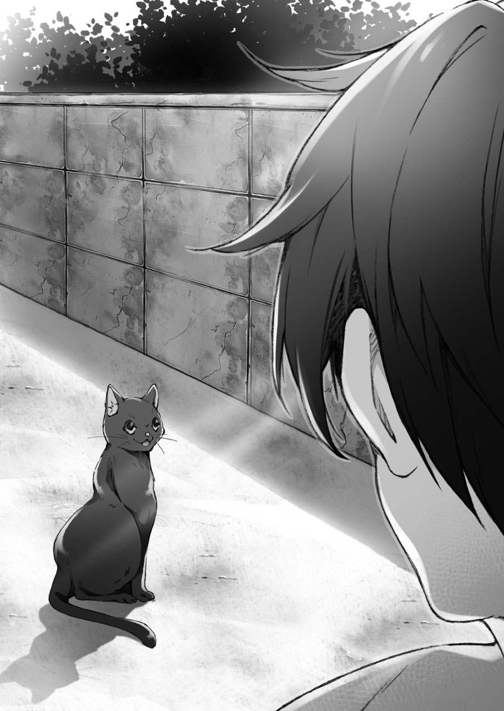
その帰り道を塞ぐように、黒い猫がこちらを見上げて座っていた。
「お、お前......」
「お静かに」
──っ!? と、孝平は、心臓が止まりそうになった。
猫が......目の前の猫が、しゃべった......？
「何も驚くことはありません。どうか落ち着いてください」
「い、いや、待てよ!? そんなの無理だろ!?」
猫は、自分が話していることを当然とばかりに澄ましている。
その声は、少女のようによく通るものだった。
「私のことは、いいのです。それよりも秋月孝平。あなたは、自身が抱えた重大な秘密を認識するべきです」
「......！ 俺を、知ってるのか......!?」
孝平は、自分の名前が出たことに驚く。
猫は頷いて、
「ええ。少なくとも、魔法使いや民間人に区別なく肩入れする、情け深い人物なのは理解しているつもりです。............甘いほどに」
──魔法使い。
確かに、猫はそう言った。
しかも、孝平を語るその口調はどこか辛辣で、歓迎できない響きがあった。
孝平は、そんな目に見えない圧迫感に──思わず後ずさりながら、
「......お前、何なんだ......？ 魔法使いのペットとか、そんなのか......？」
「ですから。私のことは、どうでもいいのです」
猫が、孝平の詮索を嫌うように言った瞬間──ピィンと空気が張り詰める。
同時に、孝平の手足が動かなくなった。
「申しわけありませんが。しばらく、そのままで聞いていただきます」
猫が、何かやったらしい。
動かなくなった孝平に、黒い猫は静かな眼差しを向けて、
「魔法に耐性のない者──特に、民間人に対して有効な、神経を麻痺させる魔法の枷です。私がこの場を離れたり、あなたに触れて刺激が生じた場合には解けるので、ご安心を」
「............、」
何を安心するのか。声すら出なくなった孝平に、黒い猫は、
「『源流使い』について、ご存知でしょうか？」
「......!!」
孝平は、目を見開く。
まさか、その言葉が、この猫の口から出てくるとは思わなかった。
それは、先日クレアや、クレアを利用しようとした茶色の髪の魔法使いが使っていた言葉だ。
『魔法の源流が確かに存在するのなら、実際にその次元まで足を踏み込むことが魔導の理に携わる魔法使いの使命だ』
あの魔法使いは──フラメルは、確かにそう言った。
（だけど、源流使いって......）
孝平が戸惑いを隠せないでいたとき、猫が続けた。
「古くから、世界のどこかにいると囁かれ続ける存在......。魔法をコントロールすることに特別な感覚をもつと言われ、その力は永久に解明できないとされるものです。もちろん、『あの方』の孫であるあなたは、ご存知ですよね？」
あの方。
それは、孝平の亡き祖母──秋月志女乃を指しているのだろう。
クレアが言っていた、魔法の根底を形成する力──『源流』に近づいたという人間。それが、秋月志女乃だと。
猫は、孝平の顔色を読み取って、
「......やはり、知ってますね」
と。一つ、得心がいったように呟いた。
「では、先日この街に発現したという巨大な魔法式についても......事実ですね。いつ、その力が暴発して、同じように周囲の魔法に影響を与えてしまうか分からない。......『彼』が、あなたという源流使いを消そうとする理由に、きちんとした筋が立ってしまってる」
（......なにを......？）
孝平は、猫の言ってる意味が分からない。『彼』とは、誰のことなのか。
と、猫は、
「──いいですか？ 秋月孝平。よく聞いてください」
低く静かに、語りかけてくる。
「そもそもの前提として。源流は、あなたが思っているような生易しいものではありません。私たち魔法使いですら解明できないような、計り知れない力の源なのです。この世の全ての理の流れ。自然の生まれ出る場所。元素を司る波。そして──魔法の根底。様々な呼び名が魔法界にありますが、どちらにせよ、魔法と関わりたいだけの遊びのような感覚で触れていれば、いずれ身を滅ぼすでしょう」
釘を刺すような、厳しい声だった。
もしかすると......。この猫は、孝平と、祖母の力について何か知っているのかもしれない。言葉の裏には、明らかに孝平の知らない源流に触れることに対する戒めがあった。
それから、猫は声を低くして、
「──あなたは、狙われています」
一言、忠告するように言った。
「『白い狼』。それが、あなたを狙う魔法使いです。『彼』があなたを襲う前に、あなたは早々に魔法との関わりを絶ってください」
（......な、）
この猫は、何を言っているのか......？
孝平は口を開くが、しかし声は出ない。
白い狼とは、いったい何なのか。どうして、自分が狙われるのか。孝平には、猫の言葉の何もかもが分からなかった。
「相手は、強力な魔法使いです。魔法の一系統、『擬態学』という伝統的な変性魔法を駆使し......生半可な魔法など近づけずに、あなたという源流使いを討滅するために現れます。もし、『白い狼』に出会った場合は......迷わずに逃げてください」
さもなくば──と、猫は目を落とす。
孝平をどのように見ているのか、その瞳はどこか悲しげな色が浮かんでいて、
「............さもなくば、あなたもあの源流使いと同じように......」
自身の言葉の重さから目を背けるように、そう呟いた。
それから、猫は正面から孝平を見つめて、
「忠告は、与えました。今後、魔法に関わる一切の行動を自重し、なるだけ源流に触れないよう──特に、あの不可解な『銀色』の魔法式には近づかないようにしてください」
と、それだけ言うと、猫は塀の上に飛び乗った。
もう、話すべきことは話したというように歩き出した瞬間、孝平の束縛が解除される。
「......っ！ ま、待てよ!? お前がさっき言った『あの源流使い』って......」
「............、知りたいですか？」
と、猫は最後に、立ち止まる。
深い深い、底のない深みから声をかけられたような、ゾクッとする声。猫は、その先を聞く覚悟があるのかと、冷たい瞳を向けた。
思わず、息をのむ孝平。猫は、その様子を見つめて、
「......。いいでしょう。最後に、一つだけ教えておきます」
と。それを別れの言葉とするように、口にした。
「────、」
と、孝平は。
その名前を聞いた瞬間、何も考えられず......。電流が走ったように目を見開いて、その場に立ち尽くしていた。
もう、路地の景色に猫はいない。
一人。最後に、その名前を残して消えた猫がいた場所を見たまま、孝平は口を開けて硬直していた。
猫が残した、最後の言葉は。
「............秋月、志女乃......？」
夕方。
アパートに帰宅した孝平は、力尽きたように畳にうつ伏せになって倒れた。
もう、何か。晩飯の支度やら学校の課題やらと片づけるべき用事が頭の中をぐるぐると回るが、今は何をする気力も起きなかった。
謎の気怠さに、指一本も動かない。
「............なんだよ。さっきのは」
文句を言うように、呟いた。
秋月志女乃。聞き間違えるはずもない、孝平の祖母の名前だ。
それが、どうして今になって......。
（それに、俺が......狙われてる......？）
あの猫は、確かにそんなことを言っていた。
なんだよそれ、と思う。意味が分からない。どうして、自分が狙われなければならないのか。
魔法の根底、源流、源流使い、秋月志女乃──。
猫の言葉の全てが、白い靄みたいに頭の中で渦巻いて離れなかった。
「白い、狼......」
孝平は、ぽつりと呟く。
クレアに、このことを話すべきか......。彼女は今、祖母の書斎にいるみたいだった。
前みたいに、怒ったからといって殻にこもることはなくなったが、それでもずいぶんと機嫌が悪いのは感じられた。
もし、こんなお伽噺みたいな、突然現れた猫の言うことを伝えたところで......ますます不機嫌にさせるだけかもしれない。なにせ、正しいのかどうかも怪しい情報なのだ。
ましてや、あの猫が祖母のことを知っていたとなると......。
──トン、トン。
と、玄関をノックする音が聞こえてきた。
「......？」
誰だろうと孝平がドアを開くと、
「あっ、ごめんなさいね。孝平くん」
「......奈々さん？」
いつもの、見知った顔。
でも、最近はクレアを世話しているせいで、あまり顔を合わせていない隣室のお姉さんが立っていた。
「どうしたんですか、その格好......？」
と、孝平が驚いたのは、奈々の荷物だった。
いつもの私服ではなく......まるで遠出するみたいに、旅行に使う大きめのカバンを下げていた。
ボストンバッグというのだろうか。よく物の入りそうなカバンは、外から見ても何かしらの荷物がいっぱいに詰められているのが分かるほど、膨らんでいた。
奈々は、もう薄暗くなり始めた海岸線を背景に、
「少し......用事を頼まれちゃって。今から出かけようと思うの」
「用事、ですか？」
また、急な話だなと孝平は驚く。
しかし、奈々はいつも通りの柔らかい笑みを浮かべて、
「ちょっと、遠くのほうまで......。帰りは、少し遅くなるかもしれないわ」
「......ただの旅行......とかでは、なさそうですけど。また、魔法関係の何かですか？」
膨らんだバッグに目を向けながら、孝平は眉を寄せる。
クレアが来る以前──まだ孝平が奈々の『正体』を知らなかった頃から、こうした外出は頻繁にあった。
しっかり者の奈々のことだし、出かける際は必ず声をかけていくことから、孝平は今まで奈々の用事が友達との旅行か何かだと思っていたのだが......。今は、少し事情が異なる。
なにせ、この人物は力の強い魔法使いなのだ。
その『用事』が、ただの用事なわけがない。
「......どれくらい、日数がかかるんですか？」
それでも、遠慮がちに。
あんまり個人の事情に踏み込んで、奈々を不快にさせないよう孝平は問いかけた。
「そうね。順当にいけば、一週間くらいでなんとか......」
「い、一週間!?」
今まで、そんな長い期間は出かけていなかったはずだ。
驚く孝平に、奈々は申し訳なさそうに、
「断るのが難しい依頼だったの。もう少し早く話しておけばよかったんだけど、最後まで行くかどうか迷ってて......。ごめんなさい」
「い、いえ。でも、なんか急すぎて......」
呆気にとられる孝平に、奈々は眉を寄せて、
「しばらく、このアパートも空けることになるわ。孝平くんに留守をお願いすることになってしまうけど......いい？」
「え、ええ。それは、構いませんけど」
でも、奈々がアパートからいなくなる不安は大きかった。
それは、単なるアパート管理のことだけではなく、魔法関係の心細さでもない。一人の隣人として、奈々がどこか遠くに離れるのが心配だったのだ。
それは、不安といってもいい感情の曇りだった。
「......せめて、どこに行くのかは教えてもらえないですか？」
と。珍しく食い下がるように、孝平は問いかける。
奈々は、一瞬だけ意外そうな顔をしてから、
「ええ。そうね」
と、考えるように。
静かに視線を動かしてから、口を開いた。
「魔法連盟。そこに関係のある仕事を頼まれたことだけは、言っておいてもいいのかしら。......向こうもいろいろと、ごたついてるみたいだから」
言ってから、奈々は困ったみたいに微笑む。
本当はもっと教えて、不安を和らげたいのに。それ以上は誰にも打ち明けられないというように、柔らかく包むような笑みを浮かべた。
「............」
と、孝平は。
その人の、その表情に──。家族にだけ感じる、懐かしさのようなものを覚えた。
そう。今、目の前にいるのは、自分の最も信頼できる魔法使い。
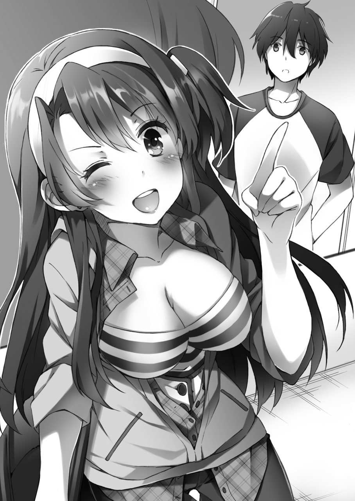
アパートの管理のことでも、私生活でも。困った時は、いつも協力して、解決してくれた人なのだ。
だから、孝平は話そうかと思った。
今日の──昼間に見た、猫のことを。相手は孝平を知っていて、しかも源流使いを狙う何者かが自分を狙っていると言ったのだ。
しかも、その魔法使いは、もしかしたら孝平の祖母を──。
「......孝平くん？」
と。気がつくと、奈々が心配そうにのぞき込んでいた。
「どうしたの？ 急にぼうっとして？」
「あ、いえ。なんでもないです」
慌てて言った孝平に、奈々は釈然としない様子で首を傾げた。
「しっかりお願いするわね？ 孝平くんは、アパートを任されてる大家さんだもの。何かあった時には、きちんと大切な人を守らなくちゃね？」
「......た、大切な人って......誰ですか!?」
「ふふ。誰かしら」
沈みかけの夕日の中で、奈々は珍しく悪戯っぽく笑う。
それから、軽く手を振って、
「じゃあ、孝平くん。わたし、もう行くわね？」
「え、ええ......」
孝平が頷いたのを見届けてから、奈々は軽い足取りでアパートの階段を下りていく。
それから、海岸通りを歩いて、遠くなっていく影を見ながら──孝平はなんだか芯を失ったような気持ちで立ち尽くした。
「..................、」
結局は、何も言えなかった。
猫のことも。祖母のことも。どうしてかは分からないが、それを誰かに話して──別の人の問題にしたくないと思った。
もし、祖母の死に何か真相があるのだとしたら、その事実を知り、悩み、苛まれ、痛みを知るのは自分一人でいい。
いや、自分じゃないといけない。
この不安定な感情を──誰かと、決して共有したくない。
孝平は、そう思ってしまった。
翌日。
前の日はいろいろあって気力も体力も消耗した孝平だったが、疲れで一晩ぐっすりと寝ると、前日の気怠さがウソのように取れていた。
なんだかんだいって、体はわりと丈夫にできているらしい。
ただ、その代償といっては何だが、この日の目覚めはすでに昼をだいぶ過ぎてしまった頃だった。
気がつけば、もう一日の半分が終わってしまっている。
慌てて起きた孝平は、ちょうど冷蔵庫の食材が切れていることもあり、一日のスタートの遅れを取り戻すべく買い物に行くことにした。
というわけで、繁華街のスーパーに来たのだが。
「──すごい！ すごいすごい！ 活気に溢れてますっ！」
にわかにテンションの上がったホルマが、孝平を振り返る。
買い出しは、ホルマも一緒だった。アパートを出る時に、彼女は孝平についていくと言って聞かず、スーパーに入ると子供みたいに走っては店内を見回していた。
「おーい、ホルマ。どうでもいいけど、はぐれるなよ？」
「はいっ！ 私、この買い物できっとお孫様の役に立ってみせます！ 期待してください！」
「......いや、期待って......」
普通に買うだけだろ？ と、孝平ははしゃぎすぎて他の主婦たちの注目を集めている金髪の少女を見る。
ホルマは、店内の特売品──缶詰のワゴンセールを見て、
「何ですかこれ!? 山積みにされてます!!」
「そ、そうだね。山積みだね......」
そのはしゃぎっぷりに、孝平はなだめるように頷くことしかできなかった。
海外......英国なり、フランスなりの魔法学校の近くには、こうした店はなかったのだろうか？
正直、あの偏屈なクレアはともかく、この魔女学の少女が、ここまで喜んで目立つ振る舞いをするとは思わなかった。
あれだけ家事が得意そうだったのに、目の前ではしゃぐ顔は世間知らずの魔法使いそのままだ。遅れがちについていく孝平の前を、ホルマは買い物かごを下げて、率先して店内を歩いていく。
「クレアさんも、一緒に来られたらよかったのですが。そしたら、もっと楽しく見て回れたと思うんですけど」
と、陳列された青果に目を向けて、ホルマは残念そうに言った。
実は、彼女は出かける前にクレアにも声をかけていた。しかし、書斎にこもる少女は、そんなホルマの誘いをきっぱりと断ってしまった。
「クレアは......まぁ、仕方ないな。そもそもあいつ、こういう人が多い場所が苦手だし。よっぽど機嫌がいい時じゃないと来ないと思う」
「......なにか、機嫌の悪い理由に心当たりとか、あります？」
「うーん」
ある。
というのが本音だったが。買い物かごを下げて見つめてくるホルマの──その純粋な視線に、孝平は何も言えなくなった。
なんだか気まずくなって、
「ま、まぁいいだろ。クレアがいなくても買い物はできるんだし、四六時中ずっと面倒を見なきゃいけないわけでもないからな」
「......、それなんですけど」
と、鮮魚コーナーの魚を見比べていたホルマは、孝平を見る。
心底、不思議そうに、
「そもそも、どうして民間人のあなたが、魔法使いの面倒を見るようなことをしてるんです？」
「へ？」
「あ、いえ。こちらは軽い興味本位の質問なんですけど......」
まるで、別の疑問もあるような口ぶりで、
「クレアさんって、お祖母様を頼ってこの街に来たんですよね？ それなのに、その本人がいなくて......普通は、ここで諦めて本国に帰ってしまうものなのですが」
「それは。単に、クレアが帰れないってくらいに追い込まれてたからだろ？」
孝平は、そう言って魚のパックを手に取る少女を見た。
なにせ、クレアは祖母──志女乃に会うために、家出にも近い状態でアパートに来たらしいのだ。そりゃ、帰らなくて当然だろうと思う。
しかし、ホルマは困ったように眉を寄せて、
「どうでしょうか......。確かに、最初はそうだったかもしれませんが、それでも魔法使いと民間人が一緒に生活しているんです。価値観はもちろん違うはずですし、魔法使いは、決して民間人のもとで居心地よくなることはないんです」
それが、いわば『魔法使い』という、別の世界の人間の宿命だとホルマは言った。
「......なのに。魔法使いの面倒を見るのは、高位の同じ魔法使いにしかできないはずなのに。お二人みたいに、こんな関係を築いている例は聞いたことがないです」
「？ 俺たちが一緒に生活してるのって、そんなに珍しいのか？」
「............はい。ものすごく」
ホルマは、重々しく孝平の言葉に頷いた。
「たとえ、実習生が師事する『保護者』が魔法使いだったとしても。そこには、厳格な規則や、それぞれの守るべき一線があるものなのです。それなのに......」
と。
ここでホルマは、まじまじと孝平を見つめて、
「あなた方の関係は、厳密には、その実習生と保護者の関係でもない気がします。何か、もっと強い拠り所が存在するような......」
「な、何だよ。その『拠り所』って......？」
「............、」
と、ホルマは。
大手メーカーのケチャップを手に取って、難しい顔でどこか遠い場所を見つめていたが、
「......。分かりません」
と。諦めたように顔を崩して、孝平に笑いかけた。
「な、何だよそれ!?」
「すみません。がらにもなく、考えすぎちゃいました。それに、よくよく考えてみれば、居候の分際で人様の家の事情に口を出すとか、おこがましいにも程がありますよね」
あははと気弱な笑みを浮かべるホルマは、取り繕うように手を動かして、ポイポイポイッと高速でケチャップを買い物かごに入れていく。
「ま、待て待て!? 分かったから、そんなに入れなくていいから!!」
「ほんと、申し訳ありません！ 下らないことばっかり言って、楽しいお買い物に水を差してしまって！」
「ああもう、だからやめろって!!」
暴走したホルマから、孝平は買い物かごを奪う。
すると、その中には大手メーカー製の赤色ケチャップだけではなく──いつの間に入れたのか分からない各種買い得品や、惣菜。そして、パック入りの豆腐の山が見えた。
「い、いつの間に!? さっきは、こんなに入ってなかっただろ!?」
「......あ、えっと。その、」
と、ホルマは、悪戯がバレたあとの子供のような表情でうつむく。
弁明するように、
「私、薬学以外の魔法は、『見えざる魔女の手』しか得意なものがなくて......」
言いつつ、ホルマは手首をくいっと動かした。
直後、その隣の売り場に積まれていたコーンスープの箱が一つ消え、瞬間移動したようにホルマの手の中に現れる。
「......っ!?」
「練習してる時の癖で、つい......」
「つ、ついって、お前......!? 万引きとかしてないだろうな!?」
「し、してません!! 私、誰かに後ろ指さされるような行いは絶対にしないって決めてるんですから!!」
反省から一転、ホルマは心外そうに孝平に声を上げる。
しかし、もしも自分がスーパーの店員だったら......と孝平が考えた場合、これほど危険な人物もいない。なにせ、魔法という超常現象で商品を移動させるのだ。
「いいか？ ホルマ。今後、その変な術を店で使うのは禁止だ。だいたい、こそこそと魔法なんか使わずに普通に手に取ればいいだろ？」
「......だって。そしたら、買いすぎだって反対されるかもしれないじゃないですか」
「当たり前だ。今、買い物かごに入ってる商品は、すぐに元のコーナーに返してくること。いいな？」
「............、」
と、ホルマは。
何やらプウッと頰を膨らませて、抗議するように孝平を見つめてくる。
拗ねたような。お菓子を買ってもらえない子供みたいな目で、不服そうに孝平をジッと見つめていた。
その長く、辛い沈黙に孝平は耐えかねて、
「............一部、買うから......」
「──本当ですか!?」
ぱあっと目を輝かせたホルマは、その後、買い物かごの中身を半分ほど抱えて返品に走っていった。
そのスキップでもしそうな背中を見つめて、
「............やっぱり、魔法使いは変なやつばっかりだ......」
と。どこか悲しげに。諦めた表情で言ってから、孝平はがっくりと肩を落とした。
やがて、買い物も無事に終えた帰り道。
水平線に沈む夕日を浴びながら、孝平たちはアパートに続く海岸通りを歩いていた。
「............、」
ずしっと、手にかかる買い物袋の重さ。
余計な出費が重なって、こんな重さになったものの。これで当分は食材に困ることはないだろう。振り返ってみれば、こうやって孝平が人と話しながら買い物をしたのは、いつ以来だろう。
「日が、暮れちゃいますね」
と、珍しくしみじみとした口調で、隣を歩くホルマが海に目を向けた。
夕暮れの潮風はどこか湿った匂いを含んでいて、空にはうっすらと星が輝きだしていた。もう少しで夜の帳が下りてくるかと思うと、なぜだか少し寂しい気持ちになってしまう。
「......なんか、あんまり今日が終わるって気がしないな」
「それは......」
と、ホルマは反射的に答えようとして、思わず笑う。
「孝平さんが、昼過ぎまで寝てらっしゃったからですよ。体内時計は、まだ午前中のまんまじゃないですか？」
「......あ、」
と、孝平は目を見開く。
ホルマに、体内時計を指摘されたことではなく──気づいたのは、もっと別のことだった。
「......？ どうかしました？」
「今、俺の名前を言った」
え？ とホルマはポカンとしたあと、
「......っ！ す、すすすいません！ 私としたことが、つい、お孫様を調子に乗って名前で呼んだりなんかして......っ！」
慌てて、小さな買い物袋を持った手を振った。なぜか、顔を真っ赤にしている。
そんなパニック状態になった少女に、
「いや、いいよ。......むしろ、嬉しかったし」
「へっ？」
「ずっと『あなた』だとか、『お孫様』とか......。クレアの場合もそうだったけど、同じくらいの歳の子にそんな風に言われるのって、あんまり好きじゃないんだ」
できれば、やめてほしいと孝平は言った。
だって、孝平はクレアやホルマみたいに、何か目標があって努力をしているわけではない。特別に強い意思があるわけでもなく、普通の学生として生活しているだけだ。
名の知れた魔法使いの祖母と違って、孝平は魔法を知らないし、詳しくもない。敬意を払われる理由なんて、どこにもないのだ。
「こっちだって、最初から丁寧な呼び方なんかできてなかったんだ。なんなら、クレアみたいに呼び捨てにしてもいいくらいなんだけど」
「......い、いえいえ！ そんな、とんでもないです！ 私の分際では、孝平さんを孝平さんと呼ばせていただくだけで十分といいますか、むしろその方が落ち着くと言いますか......っ！」
「......、そっか？」
言ってから、孝平は自然に力を抜いて微笑む。
その表情にホルマは、
「──っ！」
と、言葉に詰まったような。
さらに真っ赤になった顔で、自分の慌てぶりを恥じるように瞳を落とした。
それから、沈みつつある夕日を横目に、
「............そう。少し、分かりました」
と。孝平に向けられたのかも分からない、小さな声で呟いた。
海からの風が弱まり、波の音も次第に落ち着いてきた。海岸通りに立ち並ぶ街灯が、定時を迎えて頭上で点灯する。
その明かりの下で、孝平はホルマの謎の一言に首を傾げる。
「分かったって、何が？」
「魔法使いが......、民間人と一緒にいる理由。もしくは、民間人が、魔法使いと一緒にいる理由」
まだ頰を赤くしたまま、ホルマは瞳だけ動かして孝平を見つめる。
答えの見えない、難解な数式──その一部が、何となく理解できたみたいに、
「べつに、そこには下らない依存も......利用し合う合理性も、最初から存在してなかったのですね。......だから、その正体を私たちは把握することができなかった」
「......？ ホルマ？ お前、何を......」
「............、」
驚く孝平に、ホルマは何も答えず──。
静かに、潮風の吹いてくる海に視線を向けた。
「......海は、いいですね......」
満ちては、引いていく波の音を聞きながら、ホルマは心地よさそうに目を細める。
いつもの少女らしくない、少し大人びた表情だった。
「向こうも、海が近かったです。心地のいい潮風の香りが近くて、いつも私を見守ってくれました」
「向こうって、英国か？」
「はい」
と、ホルマは頷く。
それから、薄暗い海に向かって語りかけるように、
「家が。裕福じゃなかった時代があったんです。別に、何か魔法で失敗したわけではなくて......。単純に、そうしなければ......。地位と名誉を捨てなければ、私たちが私たちじゃなくなる時期があって......」
思い出すような──。どこか、遠い国の話をするように、ホルマは遠くを見つめる。
海の色と混じった紺色の空には、輝く星が浮かんでいた。
「......でも、そんな風に隠れ住んでいた時期にも、いい思い出は沢山あって。大好きだったお祖父様は、よく私に魔法を教えてくれました」
「おじいさま......って、ホルマのじいさんか？」
「ええ。薬学の才能だけは、ずっと褒められてたんですよ？」
えへへ、と。
ホルマは、初めて見せる幼い子供みたいな口元で孝平を振り返る。
「私に、薬学の才能を見出してくれたのはお祖父様でした。そうじゃなかったら、私なんか、いつまでも泣き虫のトロくさい魔法使いだったと思います」
そう、ずっとずっと。
ホルマは、波の音に消えてしまいそうな声で、そっと言葉を引き出していく。
心の声まで、波に洗われるように、
「............ずっと、あの波を聞いていたかった」
最後は、孝平の耳にも届かずに消えた。
しんと──海岸通りの音が、静かになった気がする。
街灯の明かりが続く夕闇で、孝平はそんな少女の懐かしそうな横顔を見つめていた。
「......詳しくは、聞かないんですね？」
「ん。まぁ、な」
「いいんですか？ 私、だいぶ気になる言葉で話しちゃいましたよ？」
「ああ。きっと、ホルマにとっては大切な思い出なんだろうからな。むやみやたらに、話さないことにまで首を突っ込む趣味はないよ。それに、事情が分からない人間っていうのも、うちのアパートじゃ珍しくもないし」
そもそも、元のアパートの持ち主さえ、あの得体のしれない祖母なのだ。
孝平にだって人に言いたくない思い出ぐらいあるし、クレアにいたっては魔導書を飲む少女なのだ。今さら、他人の事情を気にしたところで、仕方がない気がする。
「けど、全く気にならないわけじゃない。だから、またホルマが話したくなった時に、詳しく聞かせてもらうよ」
「......。はい」
と、ホルマは。
やけに素直で。それでいて、どこか嬉しそうな顔で頷いた。
それから、少女は大きく空に背伸びして、
「──うん、少し話したらスッキリしましたっ！」
ホルマは、ようやく普段通りの、気負うような好奇心に溢れた笑顔になる。
「真剣に聞いてもらったお礼に、今日の夕飯は気合の入ったご馳走を用意してみせますね。楽しみにしていてください」
「ああ。それじゃあ、あんまりメニューが大豆製品に偏らないようにお願いするよ」
なにせ、ホルマが最後まで死守した商品は、特売品の豆腐だった。
今も、彼女が大事そうに持っている袋の中には、あの水入りプラスチックの容器が山のように──。
「......って、あれ？ ホルマ、買い物袋は？」
孝平は、海岸通りを歩く足を止める。
ホルマは、自分の下げている買い物袋を見せて、
「それなら、ここにありますけど？」
「いや、それじゃなくて......。もっと別に、普通の食材を入れた袋がなかったか？ ホルマが持ってるのとは、また別に」
「......あ。そういえば」
と、少女は思い出したように首を傾げる。
袋には、入れた記憶がある。あの中には、孝平の持つ袋に入りきらなかった食料品と、クレアの機嫌直しに買ったカップ麵が入っていた。
「これは......。置いてきたっぽいな......」
「ええっ!?」
孝平の出した結論に、ホルマは驚く。
二人もいて、お互いに気づかなかったというか......二人だからこそ、逆に相手が持ってると思って気づかなかったのか......。
幸い、そんなに時間もたってないので、すぐに引き返せばなんとかなるかもしれない。
「あ、そ、それでは......私が責任をもって......！」
「いや、いいよ。俺が行ったほうが早そうだし、近道も知ってるし」
孝平は、引き返そうとするホルマに買い物袋を差し出す。
「走れば、すぐに着くと思う。もう晩飯の時間だし、ホルマは先に帰って支度を頼む」
袋を渡して、身軽になった孝平は軽く手を振った。
夕飯の支度は、この際ホルマに任せても問題ないだろう。孝平は道を引き返しながら、街灯の点々と続く海岸通りを走った。
海には、いつもより静かな波の音が響いていた。
店を出ると、外はすっかり夜の景色になっていた。
「......けっきょく、置き忘れかよ」
手に下げた袋を持ち上げて、孝平は恨めしい視線を送る。
まだ店内に残っていたのは救いだったのかもしれないが、これだけのために走らされたかと思うと、何とも言えず損した気分になる。
まぁ、なかったらなかったで、金銭面で損した気分にはなるのだが。
孝平は、もう一度だけ繁華街を歩いて、帰りを急ぐ。
先ほどまでとは違って、通りは飲食店の光で満ちて、その色彩の中を突っ切るように車のライトが横切る。混雑する車は、まるで人工の河のように緩やかに流れていた。
その景色に背を向けるように、孝平は細い路地に入る。
いつも通学などで使っている、繁華街から住宅地へと抜ける裏道だった。
時間からして、もうクレアは書斎での調べものを終えて部屋に帰ってきてる頃だ。もしかしたら夕食の用意をするホルマの姿を見て、ますます気分を悪くしているかもしれない。
どう言い訳すればいいか。
その言葉を考えることで、孝平は頭がいっぱいだった。
──その『声』を聞くまでは──。
「──ようやく見えることができたな。源流使い」
暗く、鉛の色をした路地。
その中で、孝平は立ち止まる。
「............？」
目の前──路地の景色の中央に、帽子を目深にかぶった紳士風の人物が立っていた。
声から察すると、老人だろうか。
それが人間かどうかも疑わしくなるほど、その暗さの中に佇む人物は気配がなかった。
「......君は、まだ本当の魔法を知らないな。そして、若い──驚くほどに若い。それ故に、本当に怖いものが何なのかを知らない」
片手で帽子をおさえながら、老人は呟く。
表情は、孝平からはよく見えなかった。
いったい、誰だろう......？
足を止めた孝平の前で、その人物は、
「引き返すことは、できたはずだ。苦しまなくとも、普通の民間人として幸せに過ごせたはずだ。......しかし、君は我々の世界に深く首を突っ込んだ」
低く、どこか寂しげな声。
辛うじて見える口元が動いた時。路地に吹く夜風に添うように、その影は足を進める。
そっと。
本当に人間が歩いているのか、疑わしくなるほど音のない足取り。
孝平とすれ違う直前、その口が、微かに動いた。
「故に、あえて言おう。──『貴様』は選択を誤った」
蜃気楼のような声に、明確な意思の火が灯る。
「............っ!!」
孝平は、老人の姿を求めて振り返った。
しかし、そこにいたのは──。
「......!?」
「今、この時──貴様の命は、終わりを告げる」
白い、一匹の獣。
思わず足が竦んでしまいそうな鋭い双眸に、生え揃った白い牙──。
犬、ではなかった。
その荒く息を吐く生き物が、そんなものなはずはなかった。
隆々と張った筋肉によってつくられた体軀は、まさしく獣だった。
灰色の路地の中に、風格さえ感じる白い毛並みをもった『狼』が立っている。
その、街中での『異常』な光景に、孝平が息をのんだ直後──。
ゴッッ!!
「!?」
突然、地鳴りのような衝撃が孝平の足元を襲う。
それから、地面から噴出するように、無数の長い『何か』が乱れ出た。
「............ッ!?」
のけ反るように。
バランスを崩した孝平の体を、宙で何かがかすめた。
一瞬すぎて目の端でしか捉えられなかった、黒い何かが──。
「......ほう。初撃をかわすか......」
狼は、感心したように呟いた。
孝平の体を貫こうとしたもの──。
それは、真っ黒い、影のようなものを纏った──何本もの『鉄の鎖』だった。
「な、なんだ......これ!?」
孝平は尻もちをついたまま、声を絞り出すように呟く。
どう考えても、普通の現象じゃなかった。
地面から現れた鎖も、目の前に佇んでいる白い狼も──。
「──魔法だよ。源流使い」
対して、狼は孝平の挙動に、心地よさげに目を細めていた。
狼が、笑っている。
厳密にはそうでなく、単にそう見えただけかもしれないが──。獣の微笑みは、見る者に未知の恐怖を覚えさせる不気味なものだった。
何なんだ......こいつは......。
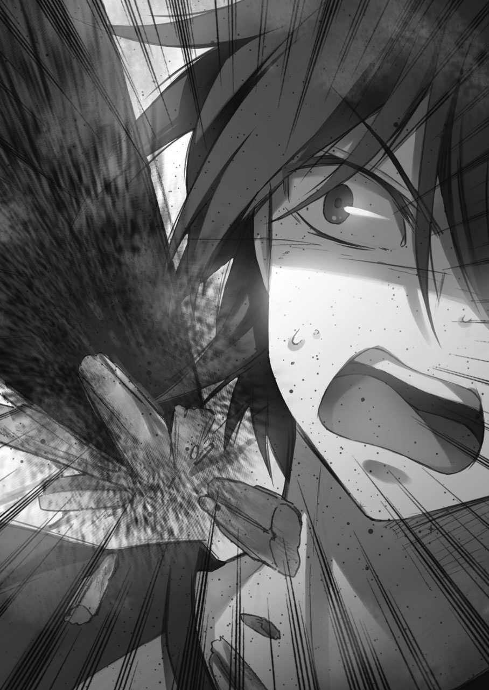
戦慄に肌が粟立ち、指先が震える。
脳裏に蘇るのは──以前に受けた、忠告の声。
前日に見た黒い猫の、白い狼が自分を狙っていると言っていたあの声が蘇る。
「......魔法使い......なのか？」
「あえて大別するならば、そう言える。とはいえ、私のような者をその辺の魔法が扱えるだけの人間と一緒にされると困るのだがな」
路地のビルに沿うように並んだ街灯の光の中で、狼は呟く。
処女雪のような純白の毛並みが動き、その足元ではジャラジャラと、地面に落ちた鎖が音を立てて地中に潜っていく。
それは、まるで飼い慣らされた一匹の大蛇のようにも思えた。
「──この鎖は、魔法式で編んだ特殊なものでな。本来の『鎖』というものは、全て標的を絡め取って捕虜にするための武器なのだが......。私の場合、少し用途が違ってな」
と、狼は、どうでもいい世間話をするように孝平を見る。
まるで、その間だけ息をさせてやると──束の間、その心臓の動きを止めることを待ってやると言わんばかりの余裕をもって。
やがて、一瞬の静寂を破るように、
「──この鎖は、私に仇なす者を葬るために動いている」
瞬間、アスファルトの表面に停滞した空気が、旋回するように動いた。
地面が、めくれる──。
が、実際に動いているのは地面ではなく、その下から現れた無数の黒い鎖だった。
今度は、速さが違う。鎖は路上の小石を巻き込みながら、真っすぐに孝平の体を狙って殺到した。
「──!! ガ──ッ!?」
ドッと、体に金属がめり込んでくる感覚。
痛い、なんてものじゃない。
真っすぐ、体の芯を鉄で打ち抜かれたような──およそ、それが鉄の輪を繫ぎ合わせたものだとは思えない一撃を受けて、孝平の体は後方に吹っ飛んだ。
暗い路地の中を、勢いのままに転がる。
買い物袋は裂け、その中身が周囲に飛び散った。孝平が、クレアのために買っておいたカップ麵も──地面に転がった。
狼は最初、その散らばった袋の中身を警戒したが──、足元に転がってきたカップ麵の必要以上にロゴや色合いを強調したパッケージを一瞥すると、
「......民間人の食べ物か。笑止な」
つまらなそうに、吐き捨てる。
「こんなもので、貴様は魔法使いと一時的に生活を共にしていたのか？ 源流使いというその身を顧みずに、ただのうのうと平和に暮らせると本気で思っていたのか？」
だとしたら、呆れたものだと狼は息をつく。
「貴様の祖母も、同じだったな......。ただ魔法と人との繫がりだけを重視し、せっかく貴重な魔導書や、源流に触れられる貴重な力を持ちながら......それを魔法界のために役立てようとしなかった」
愚かなことだ、と。狼は、昔語りのように呟いた。
「お前......ばあちゃんを、知ってるのか......？」
「......さて。どうだろうな。どちらにしても、貴様が知る必要はないだろう」
グシャ!! と、狼はカップ麵を踏み潰した。
「──生きて家に戻ることはない、貴様は、な」
瞬間、三度震える地面から鎖が現れた。
凄まじい速度で噴出する、高度な魔法式によって編まれた鎖が──真っすぐに孝平に向かって襲いかかる。
避ける暇などなく、孝平の体は宙を舞った。
壁際の生ごみの入ったバケツを巻き込みながら、孝平は路地を転がる。
声を上げることもできずに、孝平は低く呻いた。
「............っ、」
このままでは、本当に殺される。
孝平は、歯を食いしばった。
狙われる理由が分からない。しかし、それでも、相手の狼が本気だということは分かった。本気で、孝平を殺すために鎖を放ってきている。
逃げるのに、躊躇している暇はなかった。
「──!!」
孝平は、狼に背を向けて、全力で路地を走った。
「──逃げるか、源流使い!?」
背後で、鎖の放たれる音。
それらは、転がるように逃げる孝平の背中、そして腕をかすめるが、どれも目測がそれたみたいに外れた。
その隙に、孝平は視界に入った横道──路地の、さらに細い脇道に逃げ込んだ。
結果からいえば、その『道』は行き止まりだった。
普段、全く使わない横道だったので、それがどこに通じるのか孝平にも分からないまま逃げ込んだのだ。しかし、その袋小路で、孝平は幸運にも老朽化した廃ビルを見つけた。
（......昔は、何かの工場か事務所だったのか？）
年月に任せて朽ち果てた屋内を歩きながら、孝平は荒い呼吸を整える。
だだっ広いフロアの、コンクリ柱の陰に座り込んだところで、孝平の体力は尽きた。
子供の頃なら秘密基地にでもしてそうな場所だが、こうして夜の暗さの中で見ると、ただ不気味な光景でしかなかった。
ボロボロの窓から注ぐ月明かりだけが、辛うじて視野を確保してくれる。
「............、そうだ」
と、孝平はズボンから携帯電話を取り出した。
もしかしたら、今のうちに助けが呼べるかもしれない。
「......っと、番号......番号......」
息を切らしながら、孝平は電話を操作する。
しかし、
「......！ そうか、奈々さんは出かけてるのか......!!」
動転するあまり、その事実をすっかり忘れていた。
同時に、微かに見えていた希望が崩れていく感覚を覚える。
クレアは当然のこと、ホルマも携帯電話を持っているのか分からない。もし持っていたとしても、番号を知らなかった。
孝平の部屋には、固定電話と呼べるものは置かれていない。
唯一、志女乃の使っていた書斎にはアンティーク調の古い電話機が置かれているが、今は埃をかぶっていて、まともに機能するかどうかも怪しい。ましてや、その番号すらも孝平は知らなかった。
残る可能性は──。
「──あ、」
電話の画面の光を見ながら、孝平はある人物の番号に目を止めた。
それから、番号を選択して......耳元で繰り返されるコール音を聞きながら、心の中で祈った。
やがて、相手の声が聞こえる。
『......おう、もしもし。どうしたのだ孝平？』
「あ、浅間か!?」
繫がった！
孝平は心臓が大きく動いたのを感じながら、早口に問いかける。
「お前、今どこにいる!? バイト中か!?」
『ん？ どうした、そんなに慌ておってからに。長い人生、そんなに生き急いでは自分の損......』
「いいから！ 早く答えろよ!!」
急ぐあまり、思わず口調が荒くなってしまった。
その剣幕に、浅間は渋い口調で、
『なんだ、つまらん。俺ならアパートに帰っておるぞ。お前の部屋に遊びに行こうとしたら、途中でクレアさんにばったりと会ってな？』
たいそう不機嫌だったぞ、と浅間は言った。
「クレアが、そこにいるのか!?」
『いいや？ お前の部屋に戻っていったぞ。何やら、もう一人の留守をしている女子と険悪そうな感じだったが......』
「すぐにクレアに代わってくれ!! 頼む!!」
孝平が声を大きくした、直後だった。
パァン!!
孝平の隠れている柱の向こう──ビルの入り口近くの窓ガラスが、外からの何かによって一気に吹っ飛んだ。孝平の背筋が凍りつく。
同時に、宙を舞うガラスの破片とともに、白い影が建物内に入ってくる。
外からの、青白い月の明かりを浴びて。音も立てずに着地した白い獣は、廃墟の中の景色に向けて口を動かした。
「──いるのだろう？ 源流使い」
「......ッ!?」
孝平の喉が干上がる。
その声は、まるで地獄の底からの使者のものだった。
『......？ どうしたのだ、孝平？ 今の音は？』
耳元で、浅間の不審そうな声が響く。
あの狼の声までは聞こえなかったようだが、それでも昨今の性能のいい電話機のマイクは、割れた窓ガラスの音を拾ってしまったようだ。
少なくとも、今の状況で、浅間が反応したのはマズかった。
「──そこか」
不意に、逆立った獣の耳が動く。
携帯の受話口から聞こえる、小さな声を狼は聞き逃さなかった。
双眸をこちらに向けた狼の足元から、魔法式によって編まれた黒い鎖が顕現。孝平の隠れる柱に向けて、真っすぐに放たれた。
ドゴッ!! と、その丈夫な柱が、破片をまき散らす。
老朽化が進んでいたためか、意外なほど脆く崩れた柱の瓦礫が、孝平の頭上に容赦なく降りそそいだ。
「──がッ!!」
後頭部に、殴られたような衝撃。
その痛みと同時に、孝平の手にも瓦礫が飛んで、携帯が床の上に投げ出される。
直後、その上からコンクリ片が落下した。それに潰されて、孝平の携帯は瓦礫の中に埋もれてしまった。
「......!? くそ......ッ!!」
うずたかく積み上がった瓦礫に向かって、孝平は歯嚙みする。
唯一の連絡手段も、絶たれてしまった。
孝平が廃墟の中で振り返ると、その薄暗い景色の中で一匹、白い獣がこちらを見つめていた。
狼の口は、嘲るように笑っていた。
「それで、貴様の抵抗は終わりか？ それで満足できたか？」
「ふざ......ッ、けんな!!」
孝平は、希みの消えた廃墟で向き合う。
「なんで......!! なんで俺が、いきなりお前みたいなのに狙われるんだよ!?」
「その質問こそ愚かなものだと、私は思うのだがな」
皮肉るように、一言。
狼は、まるで自分の行動が、正当な振る舞いであるかのように言った。
「原因は全て、貴様の中にある。貴様の中の──源流に触れられる力。無自覚な力の放流ほど、この世の魔法において危険なものはない」
「げ、源流だと......!?」
「そうだ。忘れたのか？ 貴様が、この街で発現させた力を」
狼は、目を細める。
優しく思い出させるような、そんな声ではない。まるで、今から裁かれる人間に、罪状をつきつけるみたいな口調だった。
「貴様は、この街の環境を魔法で狂わせた。巨大な魔法式が出現し、季節は夏だというのに春を呼び込んで──桜を咲かせた」
孝平は、その言葉に目を見開いた。
この狼は──孝平と、クレアが生み出した決戦魔法を知っている。あの時、街では『季節外れの開花』として済まされたはずの魔法の正体を──この狼は知っていた。
「とんでもない力だ。貴様の力は。四季によって定められた自然の歯車さえも、狂わせてしまうのだからな」
「ち、違う！ あれは......！ あの魔法式は、クレアの......」
孝平は、その時の光景を思い出す。
あの時──クレアの『銀糸の生命歯車』が形を成した時。景色は巻き戻り、時の流れは乱れ、季節は突如として変化を遂げた。
あんなのは、孝平は知らない。今まで、魔法にすら関わってこなかったのだ。
「──いいや。元となった魔法式は、確かにあの娘のものだが──。それを使って、実際に現実を歪めたのは他ならぬ、貴様の力だ」
言い終わった直後、狼の足元が蠢いた。
黒い鎖が勢いよく噴出し、屋内で逃げ場のない孝平の体を容赦なく貫く。
「......かッ......!!」
ぐしゃ。腹に受けた一撃で、胃の中の空気が吐きだされた。
腹の肉が潰されたような、ただひたすらに硬い鉄片が突き刺さってくる感触で、孝平の体が吹き飛ぶ。
狼は、そんな無力な孝平にも、全く表情を動かさずに、
「かつて『始末』した源流使い──。さすがにその孫であれば、油断はならぬと思っていたのだが──」
孝平の着地点から、再び鎖が火を噴く。
遊ばれているどころか、弄るような攻撃だった。孝平の体は突き上げられ、受け身も取れないまま硬い床の上に落とされる。
狼は、一歩、また一歩と孝平との間合いを詰めながら、
「しかし。実際に見えてみると、とんだ的外れな人物だった。......貴様は、本当にあの源流使いの孫なのか？」
「............」
あの......源流使い......？
孝平は、あまりの痛みで息ができない。
体中に広がる痛みを感じながら、床の上に点々と続く赤い血を見る。
そして、その視線を辛うじて動かして──流れた血の奥に佇む、白い獣に向けた。
「......孫......って......？ お前、まさか......」
孝平は、最後の力を振り絞って問いかける。
「──そうだ。貴様の祖母を始末したのは──私だ」
「............!!」
孝平は、目を見開く。
言葉の内容が......すぐには頭に入ってこなかった。ただ、得体のしれない感情が体を伝い、冷たくなった手足が震える。
この、狼は......。
この、狼が......。
祖母を──。秋月志女乃を──......殺した......？
「ぐ......っ......！」
痛みと吐き気がぶり返してきて、孝平は苦しみもがく。
うずくまりながら、頭部や腕からドロリとした生温かい血を流す少年に、狼は冷たく、
「......貴様には、分からぬ話かもしれんがな」
汚らしい虫でも見るように、そう吐き捨てる。
「源流に触れられる力というのは、それだけで我々の世界では恐怖の対象だ。......何も貴様だけではない、他の源流使い──あの秋月志女乃すら、その例から漏れなかった」
過去の人間を語る、静かな口調。
狼は、廃墟に吹く夜風に、その白い毛を揺らして、
「過ぎた恐怖は、新たな恐怖を呼ぶ──。源流使いは、少し特殊すぎた。魔法学と道を違える血統は少なからず存在するが、貴様たちはあまりにも異端すぎる」
「......だから......。だから、ばあちゃんを殺したのか......？ お前が......？」
途切れながら、孝平は声を上げる。
もう、廃墟の景色のほとんどが見えなくなっていた。
意識も、半分以上はハッキリしない。
その中で、暗くなった視界の中で──真っ白な獣の姿だけが、やけに鮮明に浮かんでいた。
「............、」
狼は。
孝平の問いかけに、束の間だけ沈黙する。
窓の外の月を見つめてから、やがて孝平のほうに顔を巡らせて、
「────そうだ。そして、貴様も祖母の後を追うことになる」
狼が呟いた直後、足元が魔法の力によって震える。
数十──。いや、もっと無数の鎖が現れ、それぞれが絡み合いながら一つの大きな漆黒の槍となって孝平の体を突き上げた。
「──がああああ!!」
孝平は、肉を削られるような痛みの中で叫ぶ。
体のどこかが喰い破られたような痛みが、全身に広がった。内臓を裂く容赦のない一撃を受けて、孝平は廃墟の中をボロ布のように転がる。
狼の攻撃には、甘さなど微塵もなかった。
孝平は、体中を渦巻く──この熱が痛みなのか、むき出しになった切り傷の、この肉に汚れが染みる感覚が苦しみなのかも、分からなくなっていた。
暗く人の絶えた廃墟の中で、孝平はまるで、暗闇の中に沈んでいくような感覚を覚える。
もう、何も考えられなかった。
「............」
ただ、目の前に立つ狼を見て──。
ゴオッ──と唸りを上げて飛んできた鎖を見て──。
俺、死ぬのかな......、と微かに考えただけだ。
その連絡は、唐突に訪れた。
孝平の部屋でテーブルに突っ伏していたクレアは、その時、どこか嬉しそうに夕飯の支度をするホルマを横目に孝平の帰りを待っていた。
二人が、買い物に行ったのは知っていた。
だからこそ、この半日、心の底がモヤモヤして気分が晴れなかった。クレアは、自分に忠実だったはずの保護者が、外で何を話して──どんな表情で、この魔女学の少女と接していたのかが気になって仕方がなかった。
書斎での調べものも手につかなかった。
魔導書をいくら読み込んで、内容をいくら頭に入れようとしても、全く入ってこなかった。
浮かんでくるのは、惨めな気持ちばかり。魔法の研究に固執すればするほど、心に立ちこめた深い曇りが、色濃くなっていくばかりだった。
これも全て、孝平が悪い。
クレアはそう心に決めて、またどこか繁華街で寄り道しているのだろう保護者の帰りを待っていた。
孝平が、帰ってくれば。
そうすれば、また咎めて。きつく叱りつけて、この心の曇りを晴らすことができる。
玄関が開いたら、真っ先に文句を言ってやろうと。そう思っていたのだ。
なのに──。
「............」
クレアは息を切らしながら、住宅地の明かりの中を走る。
吐く息が荒くて、心臓が締めつけられるように苦しかった。
「クレアさん！ 少し、休みましょう。このままでは、到着しても私たちのほうが消耗して戦えません！」
隣で、ホルマが走りながら叫んだ。
しかし、クレアは振り向きもしない。まるで、その道を走っているのが自分だけだという表情で、一緒に出てきた少女を無視した。
「............っ！」
が、直後。足元をふらつかせながら、クレアは街灯の下で壁に手をつく。
普段、あまり出歩かないことが災いして、呼吸が続かなかった。しかし、それでもクレアは、その場に立ち止まることを恐れるように足を動かす。
ただ、夢中で走った。
「............」
浅間とかいう孝平の友人が慌てて部屋に入ってきた時は、何事かと思った。
孝平が大変だと、そう顔色を変えた彼の表情は、それでもクレアには冗談か何かみたいに見えた。
いつも、孝平と妙な掛け合いをしている民間人。クレアにとって、なんら気にする要素を持たない住人の言う一大事は、それこそ何の価値もないもののように思えた。
でも、違った。
浅間が運んできた、その情報は──。
「............やっぱり、あの方にも手伝ってもらったほうがよかったのではないですか？」
ホルマは微かに息を乱しながら、クレアに視線を向ける。
しかし、クレアは首を左右に振った。
「......だめ。民間人を私たちの世界に巻き込むわけにはいかないの」
「でもっ！ 今は非常時ですよ!?」
ホルマは、追いすがるように声を上げる。
彼女は、孝平を一緒に探すという、浅間の申し出を断ったことを言っていた。
今は一人でも多く、人手を......。そういうホルマの主張に、クレアは冷ややかな目を向けて、
「それなら。あなたは、民間人を私たちの世界に深入りさせてもいいと思ってるの？ 私たちの都合で危険にさらすことになっても？」
「そ、そんなことは一言も言ってません!! あの方は、孝平さんのお友達なんですよ!?」
クレアの極論に、ホルマは瞳に力を込めて、
「──心配だと思って、当然じゃないですか！ 大切な友人が危ない時に、何かしたいと思う気持ちだって当然じゃないですか！」
「それで巻き込んで、何かあったらあなたには償いができるの？」
クレアは、白けた瞳を向ける。
機械のように冷たい言葉だったが──その中には、そんな分かりきったことを当然のように主張する少女への苛立ちが含まれていた。
仮にも、自分も......目の前のホルマだって、魔法使いなのだ。
「民間人と私たちの世界は、全く無縁のものなのよ。そんな甘さとか弱さで巻き込んで、私たちがどう責任をとれるの？ 彼にだって、家族や友達もいるのに」
「......っ！ だったら!!」
と、ホルマは。
ここで、耐えられなくなったみたいに立ち止まって。クレアを正面から睨みつけた。
「──だったら。どうして孝平さんを巻き込んだんですか!!」
ホルマの瞳には、強い非難の色が込められていた。
必死に。今まで、必死に抑え続けていた感情が決壊してしまったように、
「あんなに......優しい人を......。どうして、こんな世界に......巻き込んだりしたんですか！ それも、全部あなたの言う償いのできる行為なんですか!?」
「......な、なにを」
クレアは、不意を突かれたみたいに言葉を失う。
緑の瞳を見開いたその表情に、ホルマはうつむきながら、
「どうして......。おかしいですよ、こんなの......。あの人は、本当は守られなくちゃいけない人なのに......。あなたが示した望みのせいで、使う必要のなかった源流使いの力まで......」
「............、源流使いって、あなた」
と、クレアが。
ホルマの様子と、その口から出た言葉に眉を寄せた時、
「──私。そういう身勝手なばかりの欺瞞なんて、大っ嫌いです!!」
ホルマは、静かな怒りを含んで顔を上げる。
正面から、再びクレアを睨みつけて。
と、その直後──。
──ゴッ──!!
「「!?」」
クレアとホルマは、同時に顔を上げる。
何か、爆発にも似た音が──薄暗い住宅地に響いた。
普通の人間には聞こえない、彼女たちにだけ分かる魔法の集積音。集まった膨大な魔力が弾ける音に、彼女たちは目を合わせた。
音は──路地のほうから聞こえてきた。
狼の放った鎖は、残酷なほど的確に孝平を狙った。
体を貫き、その息の根を止めるために。それだけの作業を終えて引き上げようとした狼の前に、『それ』は現れた。
「............な、」
音の消えた廃墟で──。
白い狼は、呆然とそれを見た。
少年の体を包むように渦巻いた、黄金色の塵を。
とどめに放った一撃を──狼の放った鎖をグニャリと。まるで高熱で溶かしたように曲げてしまった光の塵に、狼は息を止めて、
「......なんだ。何なのだ、それは......!?」
思わず、後ずさる。
目の前に現れた現象は、狼が今まで見てきたどの魔法とも違う、むしろ別の次元の『異物』だった。
いや、異物なのは分かっていた。
しかし、種類が違った。確か、狼が前に対峙した秋月志女乃は、こんな直接的に狼の魔法を変質させるようなことはしなかった。
明らかに、何か──この少年の中の何かは、おかしい。
「......け、んなよ......」
「!?」
少年の口が動いたことに、狼は驚く。
しかし、相手の口にした言葉は......この異常な現象からは程遠い、誰にでも言える安っぽい言葉だった。
「............ふざけんなよ。この狼......」
高熱に浮かされたような、芯を失った声。
その声を聞いただけで、少年の意識が朦朧としていることが分かった。
「なんで......そんなので。......人が殺されなくちゃいけないんだよ......。なんで、そんな勝手な都合なんかで......なんで、ばあちゃんが殺されなくちゃいけないんだよ......」
訴えかけるような。弱々しい声だった。
しかし、その少年の様子とは対照的に、彼を守るように旋回する光の粒子は加速していく。渦巻く未知の光に、狼は一歩も動くことができなかった。
『光』は、黒い鎖の魔法を溶かす。
しかも、その光は、溶かされた鎖の塵をも吸収して、少年の周囲に集まっているのだ。
「............」
それは、言葉も出ない。
魔法使いにとって、衝撃的すぎる光景だった。
「魔法で......鎖を消滅させている、のか？ ......否。そんなはずはない。魔法式も、呪文も使わない。そんな原理の魔法は、聞いたことがない。小僧、まさか貴様は──」
狼が言いかけた、その瞬間。
「──!?」
ゴバッ!!
光の塵が一瞬で姿を変えて、狼に襲いかかる。
単なる光の粒子ではなく──強化された金属のように、一本の矛となって放たれた一撃。
鈍い唸りを上げて迫りくる一撃を。狼は、人間では不可能な速度で地を蹴って回避する。
チッと、その途中──首周りの白い毛が、わずかに虚空に散った。
「............!!」
狼は、首元に残った感触に驚く。
今。あの少年の放った一撃は──的確に『喉』という急所を狙っていた。
単なる反撃ではない。
あの光は、確実に敵である狼を殺そうと狙ってきたのだ。
危険、などというレベルではなかった。一度溶かされ、孝平の中に取り込まれた狼の魔法は、今や誰も制御がきかない凶器に変貌してしまっている。
「──全力で殺すしか、ないようだな......」
狼は、牙を嚙みしめる。表情を険しくした。
気配からして、少年に意識はない。
今なら、あの少年のみを狙って鎖を放てば──まだ、勝ち目はあった。この『光』の塵の動きは、所詮、生命の危機に瀕した少年の力の暴発に過ぎない。
本体である少年を狙えば、あるいは──。
──ゴッ!!
瞬間、再び『光』が姿を変える。
今度は、一本の矛などという生易しいものではない。木の枝のように幾重にも切っ先を分離させた光の塵は、何十もの槍が飛来する動きで狼に降り注いだ。
「──!!」
それらが迫る直前、狼の足元からも黒い影が噴出する。
自身の身を守るのと同時に、どこか一点でも『光』を突破して、あの少年のもとに到達させるために──鎖に力を込める。
滅茶苦茶に撃ち合う金属音が周囲に響き、屋内の光景は粉々になったコンクリートと粉塵で溢れた。
「............」
やがて、静寂を取り戻した、廃墟。
その中で、狼は荒い息を吐く。
放たれた『光』と自身の境界を分かつように、屋内の柱と柱の間には何十──いや、何百もの鎖の束が、網の目のように張り巡らされていた。
その壮観なさまは、まさに強力な魔法と魔法のぶつかり合いに相応しいものだったが......。
「............がッ!!」
ビチャ。と、床に落ちる鮮血。
狼は、目を見開いてゆっくりと首を動かす。ボロボロに傷んだ鎖の一部が突破されて......防ぎきれなかった一条の光が、狼の腹部を深く抉っていた。
そんなはずはない、と思った。
不意打ちに近かったとはいえ、今までこんな一撃を与えてきた魔法使いはいなかった。
なのに、目の前の光は──。
源流使いは。彼がもっとも危険視している、その異端な存在は──。
「............っ、やはり、相応の仕込みは必要か......」
低く、狼は呟く。
再び、孝平の周囲に戻った光の塵を注視しながら。消耗して、わずかに色の薄くなった光を見ながら、狼は屋内を後ずさる。
憎々しげに顔を歪めて、
「──必ず、貴様は潰してみせる。覚悟を決めておくことだ。小僧」
その声だけを残し、狼は廃墟から姿を消した。
深い、闇の中にいた。
意識が混濁して、自分が何者なのかも分からない闇の中。周囲を漂うのは、曇ったいくつもの風景、古い記憶、そして誰のものかも分からない声──。
孝平は、考える。
いくら考えても答えなんか見えそうにないのに、ひたすらに考える。
唯一、自分に分かることは、これが今の現実ではないこと。
なぜなら。
その世界には、今はもう存在しない人がいるのだから。
「──また遅くなるのかよ？」
アパートの書斎。
比較的整理もされて、埃もあまり見られない本棚の間で、孝平は受話器を片手に息をつく。
その息が、書斎の冷気で白く凍った。
窓の外に目を向けると、空からは大粒の雪が降っていた。季節は十二月。着ている中学校の学ランの袖を引っ張って、孝平は手に息を吹きかける。
『ごめんなさいね。もう戻れる、もう戻れると思ってたんだけど、これが案外手こずっちゃって』
あはっ、と陽気に笑う声。
謝っておきながら、その声は全然すまなそうじゃなかった。
「............」
アンティーク調の受話器に向けて、孝平は呆れた息をつく。
中学に入って以来、久しく会っていないその人の声は、あまりにも相変わらずすぎて脱力してしまうほどだった。
「もう少し、もう少し......って。いったい、いつになったらあんたは帰ってくるんだよ？ 俺がこっちに来てから、もうしばらく経つぞ」
『だから、もうすぐって言ってるでしょ？ もう、トゲトゲしちゃって......。そんなに私と会えなくて寂しいの？』
「んなわけあるか！ わざわざアパートに来たのに、肝心のあんたが不在だったから困ってんだろ!!」
受話器を持つ手に、思わず力が入る。
外の風の音が、少し強くなった音がした。こんな時期に海沿いの寒いアパートに一人でいるというのは、どういうことだろう。
「だいたい、なんで住人が一人もいないんだよ、このアパート！ 来てみたらどの部屋も空いてるから、びっくりしただろうが!!」
『うーん。不思議ねぇ。家賃は良心的なはずなんだけど......』
そういって、秋月志女乃は本当に不思議そうに息をつく。
その声だけ聞くと、驚くほど若いのが余計に腹が立った。
「............もしかしてあんた、アパートって放っておけば住人が入ってくるものだと思ってないか？」
『逆に聞くけど、そうじゃないの？』
「さらに逆に聞くが、そう思えるあんたの年齢を言ってみろよ」
会話するたびに、イライラが募っていく。
孝平は、窓の外に広がる雪の降る鉛空を見上げながら、
「とにかく。俺、ここに引っ越すことに決めたから」
『あら、ずいぶんと急な話ね？』
「そうでもないだろ。うちの親から、そっちに連絡の手紙くらいは行ってるはずだよ。......見てるかどうかは知らないけど」
『............』
電話の向こうでの、沈黙。
それは、その手紙を全く見ていなかった、子供の悪事がばれた時みたいな祖母の様子を物語っていた。
はぁ、と孝平は再び息を吐く。
それは生温かい湯気となって、明かりのついた書斎の光景に消えていく。
「ま、どちらにしても。俺は夏までに引っ越すって決めてるから。それまでに、あんたが戻ってこないと話にならないだろうが」
『............ふーん。なるほどね』
と、祖母は。
何か、少しだけ考える様子で答えた。
それから、少し間を置いて、
『......ねぇ。孝平？』
「ん？ なんだよ？」
いつもと少しだけ声のトーンの違う、祖母の深刻な声。
『こっちは......。ほんの少し。本当に、ほんの少しだけ、忙しくなりそうなの。だから......』
だからね、と声が途切れる。
しばらく迷っているような、躊躇する感じに電話の向こうで黙ってから、
『──お願い、待ってて。きっと帰るつもりだから』
「............」
なんだよそれ、と思ったが、祖母にしては珍しく言い切るような口調だった。
とはいえ、それで毎回約束を破っているわけなのだが。
「......。分かったよ」
諦めたように、孝平は自分一人しかいない書斎で息をつく。
そして──一つ、二つの会話の後、電話は切れた。
今、考えると......それが祖母との、最後の会話だった。
............。
思えば、あの時の陽気な声の主は、何か孝平には言えない事情を抱えていたのかもしれない。もうクレアには会ったあとなんだろうし、もしかすると電話の向こうでは、もっと別の、魔法に関わる何かを追いかけていた可能性もある。
しかし、何も分からない。
孝平には、そんなこと。祖母がどう思って、あの日の電話をしていたのか、知りようがなかった。
ただ、今は。
ひたすらに、受話器の向こうの声が懐かしかった。
あの時の冷えた書斎の空気が、ひたすら──。
「............、」
静かな暗闇の中で、孝平は目を開けた。
微かに波の音が聞こえてくる。
ここは、どこだろう？ そう思うと窓辺のカーテンが風に揺れて、外の月明かりが室内にさしこんだ。
見慣れた家具が目に入り、孝平はようやく、自分の部屋で寝ていることに気づいた。
「............」
ぼんやりと、目を開いて天井を見る。
少しだけ、薄暗さに目が慣れてきた。
孝平は体を動かそうとして、手足に激痛を覚える。
「......ッ！」
痺れるような、筋肉がズタズタに切られた痛み。
体に力が入らず、布団から起き上がれなかった。
「............そうだった。俺、あの狼に......」
孝平は天井に呟く。
記憶に霞がかかったように、すぐには思い出せなかった。曖昧な思考の中で、自分が倒れたことだけを思い出す。
しかし、どうして自分は部屋で寝ているのか......？
やっとのことで上半身を起こした孝平は、ふと、自分の布団の上にかかった柔らかい重みを感じる。
何だろう。と思ううち、窓の外からの月明かりが再び室内を微光で染め上げた。
「......!?」
ギクッと、孝平は動きを止める。
青白い光に浮かぶ、銀色の髪。
すうすう......と。疲れた子供が親に寄りそうように、座った姿勢を崩したクレアが布団の上で寝息を立てていた。
思わず息を止めてしまうような。神秘的とさえ思える、端整な横顔──。
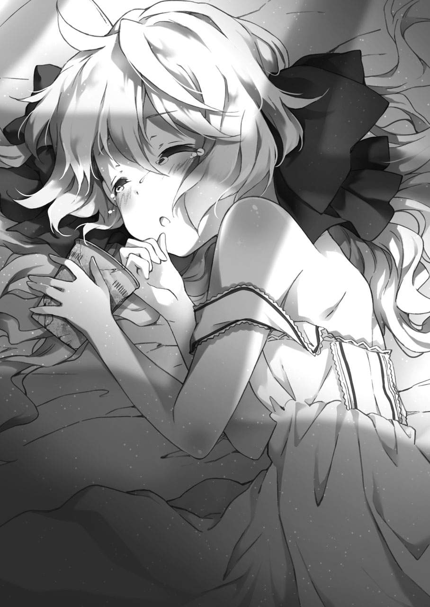
その手が、孝平に掛けられた布団をしっかりと握っていた。赤ん坊が、母親を恋しがるように......力を込めて、ぎゅっと握りしめている。
と、その反対側の手には──。
「............あ、」
孝平は、目を見開く。
ボロボロの、カップ麵。孝平が路地にぶちまけて、狼が踏みつけたそれを......少女は宝物みたいに抱きかかえていた。
その光景だけ見ると、釣り合わない妙な組み合わせだった。いかにもお嬢様といった汚れのない少女が、大事そうに潰れて土埃のついたインスタント麵をかかえているのだ。
しかし、孝平にはちっとも変に思えなかった。
よかったと。どうしてかは分からないが、クレアに対して感じていた不信感が消えていくのを感じた。
「......ゴメンな。クレア」
孝平は、その無垢な幼さを残した寝顔に、そっと触れようとして......、
「──あっ、目が覚めたんですね？」
「ッ!?」
部屋の入り口からの唐突な声に、心臓が飛び出すほど驚いた。
小さなすり鉢のような容器を持ったホルマが顔を出したのだ。
「ほ、ほほほホルマ!? いや、俺は別になにもしてないぞ!? なにもだ！」
「......？ べつに、なにも言ってませんけど？」
孝平の狼狽ぶりを、不思議そうに見る。
本当に何も見ていなかったのか、ホルマは台所の床に広げていたらしい道具類を持って、孝平の布団の隣に座った。
「ずっと気を失ったままだったので、本当に心配したんですよ？ 治癒薬と気付け薬を配合した『魔法薬』を飲ませても、目立った回復は見られませんでしたし......」
言いつつ、乳鉢で潰していた粉末を、慣れた手つきで小さな紙に移していく。
それから、包んだ紙の一つを孝平に差し出して、
「はい。完成しました」
「？ 何だこれ？」
受け取ったものの、どうしていいか分からず眉を寄せる孝平。
ホルマは、口をとがらせて、
「ですから。意識が戻った時に投与するために作っていた魔法薬学の薬です。漢方薬とでも思って飲んでください」
「これで、治るのか？」
「治ります。私を信じてください！」
「......ふーん」
まぁいいや、と。何やら漢方薬に似た苦い香りのする粉末を、孝平はホルマが手渡してきたコップの水と一緒に流し込む。
味は、匂い以上に苦い。
良薬口に苦し、とは言うが......。どれほどの効き目があるのか、その想像を絶する苦さに孝平は渋面をつくる。
ホルマは、いかにこの薬が貴重なものであるか自慢するように、
「どうです？ これでも、材料にこだわって作ってるんですよ。入手が困難な、自生する冬虫夏草に、湿原の水牛の角。それに、干したイモリの外皮......」
「──ブッ!!」
聞いた直後、孝平は盛大に水を噴き出した。
幸い、水が布団にかかることはなく、被害は隣に座るホルマの顔面で収まった。
いや、むしろそちらに集中したというべきか......。
「............、」
ぽたぽた。水を落としながら、ホルマは瞳を見開いて止まっている。
しばらくの、気まずい沈黙。
それから、やっと口を動かしたホルマは、
「な、な、な......なにするんですか!?」
「ごっ、ごめん、ホントにごめん!! でも、こんなもの、人に飲ませるのもどうなんだ!?」
「こんなもの......って、私の丹精込めて調合した薬に何か不満があるんですか!?」
「だ、だって！ 材料が......!!」
冬虫......何とかについては分からなかったが、先ほど孝平が飲んだ薬には、両生類の干物が入っていたのだ。
そうとは知らずに、孝平はただの『苦い薬』として胃の中に流し込んでしまっていた。
「仕方ないじゃないですか。材料を選んでいるほど孝平さんの傷は浅くないんです！ 私たちが駆けつけた時には、もう、ほとんど息がない状態だったんですよ？」
近くにあったタオルで、ホルマは顔をごしごしと拭いた。
その中で、くぐもった声を上げて、
「魔法による傷を、受けていたんです。傷口は魔力による呪いで腐食していて、普通の治療ではとても間に合わないほどの重傷だったんですよ？」
顔を覆ったタオルから、目元だけを見せて睨む。
その恨めしそうな大きな瞳に、うっ、と孝平は怯んで、
「そ、そうだったのか......？」
「そうです。だから、私も全力で学んできた薬学を駆使して......本当に、ギリギリのところで命を救うことができたんです。おかげで、高価な材料ばかり消費してしまいました」
頰を膨らませて、ホルマは顔を背ける。
どうやら、自分の薬について言われたことが、よほど気に入らなかったらしい。
考えてみれば、孝平があれほどの傷を受けていながら、今は布団から体を起こすほどに回復しているのは驚くべきことなのかもしれない。
孝平は慌てて、
「えっと......。それは......いろいろと、迷惑かけたってことだよな......？」
「いいです。べつに、感謝されようなんて最初から思ってませんし」
やっぱり怒った声で、ホルマは答えた。
その表情は、クレアみたいな子供っぽいものではなく、きちんと理由があって叱りつける母親のものだった。
それから、チラリと慌てる孝平を見て。
憮然としつつも、その回復した顔色に小さく息をついて、
「............本当に。心配したんですよ？ 孝平さん、いくら呼びかけても返事してくれないし」
ようやく肩の力を抜いて、ホルマは静かに言った。
「クレアさんなんか、ずっと傍を離れなくて......。私が薬を飲ませようとしても、自分が同じのを飲んでからでないと、飲ませるのを許してくれなかったんです」
「それって......。つまり、」
毒味か？ と、言葉に出すのを躊躇しながら孝平は問いかける。
ホルマは、どこか疲れた表情で頷いた。
「ええ。よっぽど、失いたくなかったんでしょうね......。私のことも、そんなに信用していない風でしたし......。ようやく、孝平さんの容体が落ち着いたのを見てから、私に治療を任せてくれました」
「そ、そんなに、ひどかったのか？」
あまり覚えていなかっただけに、孝平は他人のことのように驚く。
ホルマは少し呆れたように、
「本当に、覚えてないんですか？ 私たちが駆けつけた時には......あの場所の、どこを見回しても無事なところがないくらい荒れていて。最高位の魔法使い同士がぶつかり合った形跡が広がっていたんです」
その時の光景を思い出したのか、ホルマは眉を寄せて孝平を見た。
きっと、この少女にとっては未知の戦場に映ったのだろう。孝平にだって、あの場で何が起きたのか分からなかった。
「............記憶が、はっきりしないんだ。最後に、光みたいなものが見えたのは思い出せるんだけど......」
自分の手に、視線を落とす。
青い月の光がそそぐ室内で、手のひらにはいくつもの傷と痣が見えた。
まるで、自分の手じゃないみたいな感覚。
この手を──あの白い狼に向けて、すがるように伸ばしたのは覚えている。
祖母を殺したという、あの狼に向かって──。
「............源流の『光』、ですか」
「......!?」
考えていた孝平の意識の外側から、ホルマが呟いた。
驚いて顔を上げる孝平に、
「魔法を構成する、常人には見えない光──。中には、それを『魔法粒子』と呼んで研究する人もいます。......いずれにしても、」
少女は、水のような。
青い月光を宿した瞳で、古い伝承を読み上げるように口を動かした。
「魔法の根底にある『原初の光』を扱えるのは、源流使いと呼ばれる特殊な人間だけ。曰く、──触れられるから『異端』なのではなく、『異端』だからこそ触れられる──」
「............ほ、ホルマ!?」
別人のような少女の声に、孝平は息をのむ。
ホルマは、そんな孝平に微笑んで、
「──以上が、私が数ヵ月かけてウェールズ魔法図書館の書架で調べた『源流使い』の全てです。これ以上のことは、どの文献を探っても見つけられませんでした」
と。別の顔を見せてしまったみたいに、気恥ずかしそうに言った。
孝平の驚きを、和らげる表情。その笑顔がいつも通りすぎて、逆に孝平の胸の中に不安が波立ち広がる。
「......お前、いったい......」
「すみません。私、一つだけ......噓をついちゃいました」
その場の雰囲気とは対照的に、少女はイタズラが見つかった子供みたいに言った。
昼間、スーパーで見せたものと、同じ微笑み。
だからこそ、今の孝平には──。それが、作り物の花のような。無理やり作っている弱々しい笑顔に見えた。
「私、あなたのお祖母様に会ったことなんか......一度もないんです。師と仰いでいるだなんて、真っ赤な噓っぱちでした」
「............！」
「本当の私は、そんなたいそうな人の目に留まるような、そんな立派な人間じゃないんです。実習を終えて、学位を認められただけの......単なる魔法使い。学校での首席も、たまたま開発した魔法薬が、ある難病の特効薬だっただけで......」
運がよかっただけの、才能なしなんです、と。
ホルマは、それでもなお、作り物の笑みを向けてくる。
孝平は、呆然と、
「じゃあ......。それなら、お前はどうして......？」
「私は、ずっと消息の分からなかった『あの人』──白い狼に会うために、この街に来ました。そして彼の最も接触する可能性の高い人物、『秋月孝平』に近づいたんです」
醜い、自分の魂胆を──暴くように。
そこに一切の言い訳も自己弁護もなく、畳に座る少女は真っすぐに孝平を見る。
正面から。どんな非難も、失望の念も、甘んじて受けとめる瞳で。
「............人を探しているのは、本当だったんです。その人が、あなたを狙っていることも分かってて......。こんな事態になるのは予想できたはずなのに......」
大きな瞳が、痛々しく揺れる。
それから、自分の最大の罪を刻むように、
「............心のどこかで、あなたを『餌』だと思ってた......」
今度こそ、無理に作った張りぼての感情が消えて。
少女は、深くうつむいて。自身を傷つける言葉を口にする。
「私が、ひどい人間なのは分かってます。責任があるのも。責められても仕方のないことです......」
しばらくの、沈黙。
部屋の中が急に静まりかえり、夜の風が耳に近くなった。
「......、ホルマ。お前......」
うつむく少女に、孝平は視線を向ける。
どうして、そんなに直接的な表現ばかりを選ぶのか。
どうして、そんなに自分を傷つける棘の言葉ばかりを口にするのか。
そこまで考えて、孝平は、
「あの白い狼は......いったい誰なんだ？」
ホルマの核心に触れる、その質問を呟く。
瞬間。
少女の肩が、小さく動いた。
「──ジェラルド・ガードナー」
暗い室内に、その声はやけに大きく響いた気がした。
ホルマは顔を上げて、孝平の目を正面から見つめる。
「近代魔法の『魔女学』を復興させた人物で、公には亡くなったことになっている高位の魔法使い......。伝承にも名を連ねている、白い狼です」
強い、意思の宿った大きな瞳。
孝平には窺いしれない使命のような光が、少女の瞳には灯っていた。
「......あの人に、これ以上の源流使い殺しをさせるわけにはいかないんです。確かに、秋月志女乃という源流使いは、私たちの世界では脅威的な力の持ち主でしたけど......でも、こんな解決の方法は間違ってます」
ホルマは、悲しげに首を振った。
その、理不尽な出来事を痛ましく思っているように。
「私が......止めなければ、いけないんです。ここまで事態が悪化した以上、あの人の魔法を知る、私が止めなければ」
「それって......」
と。孝平は、そんな少女の表情に何かを感じて、口を開いた。
その時だった。
不意に──。ホルマは、身を乗り出してきて、布団に座る孝平を抱きかかえるように背中に手を回した。
「............!!」
ドクッと。柔らかい感触に、心臓が跳ねる。
すぐ傍には、クレアが寝ているのに──。
「ほ、ホルマ!?」
「本当に、すみません......。こうすることしか、今の私には、あなたをこれ以上巻き込まずに解決するすべがないんです......」
「なに......を......？」
と。言いかけた孝平の声が、途切れる。
意識が。ホルマからの、不思議な匂いを感じた瞬間──くらっと遠くなる。
いったい、何が起きたのか。
今まで考えていたことが急に白くなり、孝平の頭がぼやける。ホルマの髪から、服から立ちこめる甘い香りを吸うほど、それは強くなっていき......。
「──、ホル」
マ......と、呻くように呟いた孝平の意識が、落ちる。
瞼を閉じて力の抜けた孝平を、ホルマは背中に手を回したまま静かに布団に寝かせる。
それから、いつの間にか手にしていた小さな香料の瓶──孝平の意識を刈った香りに、そっと栓をして、
「............本当に。ごめんなさい......」
眠りに落ちた孝平を見つめて、小さく言った。
「......最初は、ちょっぴり利用する気もあったんです。でも、ここで短い時間を一緒に過ごして、すっかり居心地よくなってしまって......。気がついたら、あなたを魔法使いの世界に巻き込んだ『彼女』のことが許せなくなって」
と。ホルマは、孝平の布団に寄り添う銀髪の少女に目を向けて、何か......言葉では表せない思いを整理するように沈黙する。
親の近くで、安心した子供のように眠る魔法使いに──ふっと力を抜いた。
「引き離そうと思ってましたけど。結局、無駄な努力でしたね」
と、呟いた姿は。
前日。狭い街の路地で孝平に忠告した──一匹の、黒い猫だった。
猫は、そんな二人を心地よさげに眺めて、
「私も、昔を思い出して......懐かしかったです。まだ、家族の温かさのあった頃は、私も未熟で......必死で。でも、本当に楽しかった」
だから、と。
黒い猫は、そこで言葉を切って、
「──この場所は、きっと私が守ってみせます」
と。
彼女らしい、気負った声で言った。
決意に満ちた表情で。眠った孝平、そしてクレアに別れを告げると、振り返らずに部屋の外に歩き去った。
それから、間もなく──。
アパートの中から、魔女学の少女の姿が消える。
数時間後。
汐浜市、某所──。
街の中心部だけ都会化した、ビルの並んだ景色を見下ろしながら白い狼は立っていた。
暗い空の下には、目の覚めるような光の摩天楼が連なっている。
「──全く。文明というものは、どこまでも進歩の速い」
呆れたように息をついて、狼は夜風に目を細める。
近くに見える赤い光の点滅は、ビルの高さでも示しているのだろうか。
「............民間人どもの機械文明というのは、恐ろしいものだ。魔法使いたちが後生大事に守っている知識と伝承など、この景色の前には他愛もなく霞んでしまうな」
ばかばかしいことだ、と狼は笑う。
足場にしているのは、ビル屋上の看板。少し外に向けて傾斜のついた、本来なら絶対に立ち入れない場所だった。
街のビルが見下ろせる、ということは、そのまま狼の足場が街で最も高いことを表していた。
少しでもバランスを崩せば、眼下の景色──その下に広がる大通りのアスファルトまで真っ逆さまだ。
しかし、狼に怯んだ様子はない。
どころか、むしろ楽しそうに、
「だからこそ、魔法使いは群れることを選んだのだろうな。各々が自分たちの歴史と家柄を守るために組織を作り、魔法学の体系も、そこに生まれた」
狼は、饒舌だった。
それは、皮肉な光景なのかもしれない。
人の作り上げた街の姿を見下ろしながら、文明との関わりを嘲笑う魔法使いの狼が、その象徴たる都市の中心に立っているのだ。
「しかし、そんな時流から外れた人間というのも珍しい。集団に馴染めぬ者は、古来より悲運に倒されるものだが──。あの者は、逆に我々を脅かした」
痛快だ、と狼は笑う。
何がそんなに面白いのか、調子の外れた笑い声がひとしきり夜空に響いて、
「......しかし、それも今や過去の話となった。あの源流使いは、集団がどれほど臆病なものか理解していなかった」
ゆえに、滅んだ。
同じく伝承級の魔法使いの一人に数えられる彼は、狼の顔でそう断定した。
おそらく、それは事実だった。
ただ、一つだけ。狼が残念に思えるのは、
「............あの者に、同じく源流使いの孫がいたことくらいか」
と。狼の顔が曇る。
最初、その噂を伝え聞いた時は、何かの冗談かと思った。
そもそも、あの世界中を旅して回っていた人間に、『家族』などというものが存在するのか疑問だった。
しかし、やがてそれが事実と分かるにつれて、狼は状況の深刻さに思い至る。
なにせ、その孫という人物が関わったとされる街に現れた魔法というのは、普通では考えられない規模の大きな力だった。源流に関わる力というのは恐ろしい。たとえ本人に自覚がなくても、魔法の根底の部分に触れては魔法を肥大化、暴走させてしまう。もととなった魔法がいくら小さくても、何が起きるかは想像もつかないのだ。そんな力を、この世界に残しておくわけにはいかなかった。
ましてや──。
「あの少年は、危険な才能を持っている──」
それが、全ての理由。
自らの敵には容赦しない。それはずっと昔からの、まだ普通の魔法使いだった頃からの彼の信条だった。
その意思は揺るがない。決意を翻す気もない。
「............ただ、厄介なのは」
不意に、狼の双眸が鋭くなる。
酔ったように饒舌だった感情の高ぶりが消え、冷たい警戒心が顔に表れた。
「──お前の存在くらいか」
白い耳が、後ろに向けて動く。
それでも振り返らなかった背後には、いつの間に現れたのか──黒色の美しい猫が座っていた。
「お久しぶりです。お祖父様」
抑揚のない声で、黒い猫は呟く。
「久しぶり、か。......確かに久しいな。お前がちょこまかと動き回っていたのは、ずっと見えていたがな」
皮肉を口にしながら、首だけを動かして振り返る。
お互いに歓迎していない、殺気にも似た視線が宙で交差する。
猫は、そんな狼にも怯まずに、
「あの人間......秋月孝平に、源流使いの力を行使するような意思は見られませんでした。これ以上の争いは、無益なものです。おやめください」
「無益かどうかは、私が決めることだ。お前が口を出す問題ではない」
牙を剝いた、狼の静かな恫喝。
それだけで、普通の人間も......この狼の正体を知る魔法使いも竦んでしまいそうな声だったが、猫は残念そうに瞳を落としただけで、
「............受け入れては、もらえませんか」
と。最初から、予期していたように息をつく。
それから、一歩。
夜風の吹きすさむビルの上で、狼との間合いを縮めて、
「変わってしまいましたね......お祖父様。もしかしたら、話し合えば分かっていただけるかと思っていたのですが......」
「それは、お前の見通しが甘かっただけだ。私は私の正義に従って動いている」
「............そうですか。残念です」
猫は、身構える。
その周囲には、虚空から降ってわいたように小さな瓶が次々と出現。狼に向けて足を進める猫の足元に並んでいく。
「たとえ、敵わないまでも──。あなたの鎖の魔法は、必ずここで止めてみせます」
「──私と、正面から戦うつもりか？」
狼も、応じるように立っている。
その動き一つで、ビルの屋上に張りつめた空気が揺れた。殺気なのか、魔力なのかも分からない空気の歪みで、吹きすさんでいた夜風が押し戻される。
最後に。狼は、ビルの摩天楼を背景に、鋭く吼えた。
「私は、己の敵には容赦しない──。たとえ、それが自分の『孫娘』だったとしてもだ。ホルマ・ガードナー──」
目が覚めた時には、すでに日が昇っていた。
時刻は、昼過ぎ。孝平は急に暑く感じた布団から体を起こして、自分以外、誰もいなくなった部屋の中を見回した。
「............、？」
いつの間に寝てしまっていたのか。
体には、痛みがない。
節々の熱も噓のように消えていて、妙に頭がスッキリしている。
強いていえば、微かな筋肉痛が体に残っているぐらいだったが......。それも、昨夜の痛みに比べると全く気にならない程度だった。
孝平は大きくあくびをして、体を伸ばす。
やっぱり、どこも痛くない。
と、
「あっ......」
部屋のドアが開いて、声がする。
書斎から持ってきたらしい数冊の本を積み重ねて抱えた少女が、起き上がった孝平を見て立ちつくしていた。
信じられないものでも見たみたいに。銀髪の少女は、息をするのも忘れた顔でこちらを見ている。
やがて、積み上げた本の一冊が落ちた音で、
「............あ。えっと、その」
急に、我に返ったように慌てた。
あたふたと、今まで自分がどういう言葉で話していたのか、どんな顔で接していたのかを思い出すように狼狽してから。
「......っ！ こ、孝平!!」
「え？ な、なんだよ？」
とりあえず怒鳴りつけるクレアに、孝平は眉を寄せた。
仮にも、昨晩瀕死の重傷を負った人間に対して大声で。その相変わらずの様子に孝平は呆れたが、この日のクレアはいつもと違った。
どすどすと、足を踏み鳴らし、怒った顔のまま孝平に近づいてくる。
その動きで、積み重ねて抱えていた本がまた床に落ちたので、
「......お、おい？ お前、大事な本......」
「──いいの!! そんなのはっ!!」
驚く孝平に、クレアはいつにない剣幕で近づいた。
「また！ 私の見てないところで危険なことばっかりして!! 孝平は、いつになったら学習するの!?」
「えっ？ ......いや、ちょっと待てよ!? 俺は急に襲われただけで......」
「うるさい！ 私は怒ってるの!!」
クレアは、手にした本を投げつけてくる。
バサッと音を立てて孝平に当たる洋書に、孝平はどうして投げつけられるのか分からずに、
「や、やめろよ!? なんで俺が......」
「うるさい！ 絶対に許さないんだから......このっ......バカ孝平っ！」
次々と、分厚い洋書が飛んでくる。
女の子の力とはいえ、飛んでくるのは密度の高い紙の塊なので、痛くないわけがない。孝平は背を丸めて理不尽な嵐が過ぎるのを待った。
クレアは、残った最後の一冊で孝平を叩きながら、
「──バカッ!! 本当に、──頭の悪い民間人なんだから!! あんな食べ物なんか取りに戻らないで、さっさと私のところに帰ってきなさいよ!!」
バシッ!! バシッ!!
モグラ叩きのように振り下ろされる感情は、やがて、その力も次第に弱々しくなって、
「......バカ。............本当に。......なんで、孝平はいつも......そうなの？ なんで、私の気持ちを分かってくれないの......？」
「......？」
暴力がやみ、変な、震えの混じった音が聞こえてくる。
孝平はやがて、それがすすり泣く声だということに気づいて、
「............、お前......」
顔を上げる。
少女は、最後の本も捨てて、孝平を睨みつけていた。
ガラスのような緑の瞳に、それ以上に透明な粒がたまっていた。
「お前......泣いてるのか......？」
「泣いてなんかない！ 怒ってるの......！」
クレアは、その滴を拭いもせずに、
「息もほとんどしてなくって、ずっと意識が戻らなくて......。もう、謝れないかもしれないって......本当にそう思ったじゃない！」
悔しそうな表情で、少女は孝平を見下ろす。
足元に散らばった魔導書など、もう見向きもしないで、
「本なんか......こんな本なんか、いくらあっても！ 魔導書が何万冊もあって、一級品の本が、どれだけ高く積まれてても!! ......そこに、あなたがいないと何にもならないじゃない!!」
クレアの感情が、決壊した。
孝平を見るその顔は、まるっきり子供の癇癪みたいで、
「なんで、なんで......それが分からないのよ......!? あなたがいないと、私がここにいる意味がないじゃない!! 隣にいてくれないと......!!」
「で、でも。お前は......今まで、研究のために俺が必要だって......」
祖母の魔導書も、孝平の手助けだって──。
この少女が自分の魔法に必要だと、そのために求めたはずなのに。
なのに、この少女はそれらの一切を否定してしまって、今まで、自分が必死にしがみついてきたものを拒絶している。
「──私にだって!! 分からないわよ!!」
クレアは、叫んだ。
ありったけの感情を込めて。普段から心の奥底に眠らせて起こさないようにしていた何かが、爆発してしまったみたいに、
「......っ！ 分からないのよ......私にも......。研究が、何よりも大事なはずなのに......」
研究を完成して。
誰にも文句を言わせない、一流の魔法使いになることに憧れていたはずなのに──。
それが全てだった少女は、次第に声を小さくする。
「............でも。孝平が倒れて。ボロボロになって倒れてて。もう、死んでしまうかと思って......。そしたら、急に怖くなって」
クレアの手が、震える。
口だけじゃない。今──本当に、この少女は、それを怖いものとして語っている。
「怖くて、怖くて。孝平が死んだら、私は明日からどうなるんだろうって......。一人に戻るって思ったら......周りが真っ暗になって......」
また、少女の瞳からぼろぼろと涙が溢れてくる。
それすら悔しそうに、クレアは握りしめた手でごしごしと目を擦って、
「だから。......孝平が起きたら、もっと叱らなくちゃって。反省させなくちゃって、思ってたのに。なのに......孝平......ぜんぜん起きなくて......」
「............」
孝平は、驚きで口を開いて──。
しかし何も言えずに、ただ呆然と黙って見ることしかできなかった。
ここまで、自分の気持ちをぶつけてきたクレアを見たのは──初めてだった。
（......なんだ......？ なんで、こんな......）
これでは、今までこの少女が言ってきたことと真逆ではないか。
研究が、目的ではないのか？
祖母が、大事ではないのか？
孝平なんて、それこそ魔法使いのクレアにとっては、強大な力を持った祖母の代用品なはずなのに......。
ただの、取るに足らない民間人でしかないはずなのに。
なのに、どうして──こんな顔で。この少女は泣くのだろう──？
──大切な人を──守らなくちゃね。
チクリと、孝平の胸が疼くように痛くなる。
それは──おととい。アパートを出ていく時に、奈々が言った言葉だった。
あの時の、奈々の柔らかい顔。
孝平の『何か』を察した、深い思慮が見えた瞳。
見送っていた時の孝平には理解できなかったその表情が、今はなぜか孝平の脳裏に鮮明に浮かぶ。誰を指していたものなのか、今なら分かる。
大切な人──。
それは、クレアが家族だから？ 友達だから？ いや、それとも......。
硬直する孝平の前で、クレアは涙を拭いた瞳で見下ろした。
必死に。それこそ、もう絶対に離れないよう必死に、澄んだ瞳で見下ろしてくる。
「......孝平は、シメノみたいに強い魔法使いじゃないの。私が。私が、守るべき人なの。だから、勝手に私の横からいなくならないで」
束縛、とは違う──。命令にも似て、それでいて願うような不思議な響きの言葉。
孝平は、微かに心臓の音が速くなるのを感じながら。今度こそ素直に、頷くことができた。
「......。ああ、ごめんな......」
心を締めつける痛みに、謝る。
クレアは、そんな孝平の顔を見下ろして、
「............分かれば、いいのよ」
と。
ようやく、自分の気持ちが言えたみたいに、満足して頷く。
いつもと変わらない、幼い顔立ちのわりに大人ぶった表情。でも、泣いた滴がまだ残ったその顔が──孝平にはなぜか、とても眩しいもののように見えた。
昼下がりの日差しが、じりじりとアパートに降り注いでいる。
天気は、すこぶる快晴。
それだけに、真夏の太陽は容赦なく孝平の背中を焼いていた。
「ホルマー？ いるかー？」
その日差しの中で、孝平は一階のドアを叩く。
クレアには、昨夜の狼に襲われた状況を説明できたのだが......ホルマの姿が、アパートに見えなかったのだ。
もしかしたら部屋に戻ってるのかもしれないと思い、孝平は一階の部屋──元々、クレアの部屋だった場所のドアを叩いている。
隣では、一緒に来たクレアが、
「......出てこないわね。寝てるんじゃないの？」
「まさか。もう昼だぞ？」
そんなはずないと思った孝平だが、あるいは、自分の看病で疲れて寝ている可能性もあるかもしれないと思い直した。
しかし、それにしても......。
「お前の部屋、きちんと寝るスペースとかあったか？ ちょっと前まで、書斎から持ってきた本で溢れかえってただろ」
「なっ......！ し、失礼ね。あるに決まってるじゃない！」
図星を指されて、クレアは眉を逆立てる。
「あれは、魔法研究のために必要だったから持ってきただけで......。私を片づけできないみたいに言わないでよ！」
しかし、孝平は信用できずに、
「きちんと、ホルマが生活できるようにして出てきたのか？ まさか、床に散らばった本をまとめて隅に押しやって終わり、なんてことはないよな？」
「............、そ、それは」
と、口ごもったクレアに、孝平は呆れて、
「......おいおい......。そんな中に住まわせてるのか？ 出てきたら、きちんと謝れよ？」
手のかかる子供を見るように、孝平は息をつく。
そうこう言っているうちに時間が経過したが、目の前のドアは、依然として反応がなかった。
孝平は首を傾げて、
「......変だな。ホルマだったら、すぐに出てきそうなもんだけど」
「部屋にいないんじゃないの？」
クレアも、訝しむ。
しかし、この部屋にいないとなると......あとの可能性は、外しかない。孝平が得体のしれない狼に襲われたばかりだというのに、わざわざ外に出ていくだろうか......？
「クレアは、なんか聞いてないか？ ホルマがどこかに出かけるとか」
「......知らない。私が起きたら、どこにもいなかったもの」
クレアは首を振る。
この少女は、大して気にしていない様子だったが......。孝平は、そのどこにもいなかったという言葉に、わずかな違和感を覚えた。
どうして、あの少女の姿が見えないのか。
孝平は、昨夜のホルマとの会話を思い出しながら、なぜか途中で寝てしまった後半部分の記憶を手繰り寄せて......。
（......、そうだ。ホルマは、あの狼を知ってるようなこと......）
もう一度、目の前のドアを見る。
部屋のドアは、重苦しく沈黙していた。
もし、あの少女がこの奥にいないのだとしたら。部屋にいるわけではないのだとしたら、どうなる？
残る可能性は、どうなる？
「............クレア。今、この部屋の鍵を持ってるか？」
「え？」
すでに引き返そうとしていたクレアが、驚いて振り向く。
「鍵を、開けるの？」
「ああ。......部屋にいるかどうかだけでも、確認しておきたい」
小さく、胸に湧いた黒い影。
快晴の空とは反対に、孝平は不安に顔を曇らせる。
ホルマは、孝平の源流に触れられる力のことを知っていた。
そして、あの白い狼のことも......知っている様子だった。昨夜、自分に責任があると孝平に語った表情は、どこか思いつめているように見えた。
さらには、『解決する』という言葉。
「............あいつ、もしかして......」
孝平は、その焦燥感を声にした。
その様子を見つめてくる少女に、
「ホルマは......俺を利用したって言ったんだ。俺が、ばあちゃんと同じ源流使いとか呼ばれる人間で、それを狙ってくる白い狼を探してたんだって」
「あの子が......？」
クレアは、孝平の言葉に目を見開く。
何の繫がりもなかったはずの、少女の言葉。それは、そのまま得体のしれない暗い予感を伴って、孝平の説明を聞く。
やがて、昨夜の話を知ったクレアは、
「......でも。私、この部屋の鍵を持ってないの」
「えっ？」
「鍵は、あの子に渡したから」
驚く孝平に、クレアは顔を曇らせる。
考えてみれば、当然のことだった。孝平の部屋に移ったクレアが、未だに鍵を持っているはずがない。
「でも、鍵は持ってないけど......開けることはできるわ」
「......？」
一見、矛盾した言葉に孝平が眉を寄せると、
「忘れたの？ 私、『開錠』の魔法が使えるのよ？」
と。まるで鍵の一種類みたいに、クレアは木の枝くらいの大きさの『杖』を取り出した。
いつも、孝平が管理人としての立場から禁止している......開錠の魔法。
ホルマが来る前からこれを使ってクレアは孝平の部屋に侵入し、まるで自分の別荘みたいに私物化している元凶だが......この際、致し方ない。
「よ、よし......！ 今回だけは、特例中の特例で、使っていいぞ」
「いいぞ、じゃなくて。きちんとお願いしなさい」
孝平の言いかたに口をとがらせるクレアだが、それでもドアノブに杖を当てて、
「──『奇妙な解魔法』」
ふわりと、不思議な風が吹く。
クレアの小さな呟きのあとに、ひとりでにカチャリと音が響いた。
それでドアは開き、孝平たちが部屋の中に入ると、
「............？」
カーテンの閉まった薄暗い室内に、ホルマの姿はなかった。
がらんと空いた部屋の中を見回して、孝平は畳の上を歩く。あちこちに積み上がっている本の山は、以前に見た時よりもだいぶ整頓されていた。
きっと、ホルマが暇を見て片づけたのだろう。項目ごとに整理された本の中を抜けて、孝平は部屋の中央──そこの畳の上に置かれた封筒を見つける。
それは、草と蔦の模様の入った、シンプルだが格式の高そうなデザインの封筒だった。身分の高い人が使いそうなそれの中には、一枚の紙が入っていて──、
「............っ!?」
驚きで目を見開き、孝平は顔を上げた。
首を巡らせて、玄関を見る。
その手紙に、簡潔に書かれていた文字は──。
『──あの人──白狼を止めに行きます』
封筒に入っていたのは、一通の手紙。
そして、それと一緒に入っていたのは、小さな円形の浮き彫り細工だった。
金属でできた、なにやら古めかしい円形の紋章。書斎に置いてあるような、一見するとガラクタにも見える工芸品のオブジェ。
円の中には、獅子と角のついた馬のような生き物が追いかけ合うように尻尾と頭を突き合わせており、さらに中心には『四つ葉のクローバー』が刻まれていた。
「......くそっ。どこだ!?」
そのレリーフを握りしめて、孝平は走る。
午後の繁華街。
学生や遊びに来た人間だけでなく、ビジネスマンなどが行き交う街の喧騒の中で──孝平は歯を嚙みしめた。
手紙には、行き先が書かれていなかった。
あの少女がどういう気持ちで、一人で狼に向かっていったのか分からない。でも、アパートで暮らす孝平とクレアを巻き込まないようにしているのだけは、察することができた。
なぜ、何も言わずに行ってしまったのか。
孝平は息を切らしながら、行き交う人の波を睨みつける。
と、その正面から、通行人を割るようにして銀髪の少女が現れた。
「どうだ、クレア？ そっちにはいたか？」
「......だめ。どこを見回しても、それっぽい子は見えなかった」
クレアは、汗を額に浮かべて首を振った。
予想はできていたが、この汐浜市の街中から一人の少女を探し出すのは容易ではなかった。他にもっと合理的な方法もあるのかもしれないが......今の孝平たちに、そこまでの知恵を絞る余裕はなかった。
交差点の信号が青に変わって、歩行者が歩き出し、雑踏が街に溢れる。
その波のような音に、孝平の胸の焦燥も高まっていく。
（......っ、どこに行ったんだよ......あいつ......！）
白い狼を止めるという手紙。残された紋章。
嫌な予感がした。まるで、形見でも残していくかのようだ。
そう、二年半前の──。
あの時の電話を最後に消えた──秋月志女乃のように。
孝平は、手にした薄いレリーフを見つめる。
夏の日差しの中で、その金属の塊はひんやりと冷たい感触を孝平に覚えさせた。青銅でできているのか、その表面は苔が生えたみたいに緑色に変色している。
クレアは、この紋章を見た瞬間、顔色を変えていた。
ことの重大さに気がついた表情で、その金属の塊が持つ意味を理解したように──ホルマを探すことに同意した。
孝平は、その不思議な冷たさの残る金属の円盤を見つめて、
「クレア。この紋章は......いったい、何なんだ？」
「............、」
と、少女は黙る。
言いにくそうに。それを孝平に話していいのか躊躇する表情で、
「『ガードナー』よ」
「えっ？」
孝平は、その聞き覚えのある言葉に声を上げた。
確か......ホルマが言っていた、あの白い狼の姓だったはずだ。
「それって、伝承級の......っていう、魔女学の魔法使いの名前じゃなかったか？」
「ええ。でも、私が言ってるのはそれじゃないの。英国の王室に所属する特別な魔法使いたちの機関に、同名の組織があるのよ」
クレアは静かに瞳を動かして、いつもとなんら変わらない街中を見た。
心なしか、その口調はどこか重苦しい。
「英国王室の、機関？」
「表向きは、『荘園』の管理団体。古くから王室の庭師としてバッキンガム宮殿の近くに待機して、宮殿の魔法結界を管理している機関──。英国の優秀な魔法使いたちの総本山なの」
と。クレアは、すらすらと孝平の知らない言葉を口にする。
しかし、そのこと自体は大して重要ではなさそうだった。
彼女にとって問題なのは、孝平が手にしている、円形のレリーフをホルマが持っていたことだった。
「──その紋章は、その管理機関『ガードナー』の一員である証なのよ。王室に認められた魔法使いだけが、それを持つことが許されるの」
「ま、待て待て！ そんなもの、なんでホルマが持ってるんだよ!?」
いきなり飛躍する話に、孝平は混乱した。
ホルマは、確か向こうの学校の生徒だったはずだ。汐浜に来た目的は偽りだったとしても、その少女が、どうしてそんなたいそうなものを持ち歩いているのか。
孝平の指摘に、クレアは考えるような素振りで、
「......そうね。私にも分からないけど......もしかしたら、あの子は『ガードナー』に関わってるのかもしれないわね」
「？ どういうことだ？」
「前に、噂で聞いたことがあるの。『ガードナー』では、優秀な魔法使いを在学中に招聘する制度があるって。向こうの学校でも、ほんのわずかな人数しか選ばれない『特例』で、仲間に迎えられるらしいの」
「そ、それが......ホルマなのか？」
孝平は、思わず立ちつくす。
あの、どこか抜けたような少女が？
自分は、そんな大した存在ではないと控えめに笑っていた少女が......そんな機関に所属しているのか......？
しかし、翻って考えてみると、あの少女にはどこか量れない『陰』のような部分もあったように思える。重傷を負った孝平を治したのも、他でもない、ホルマだった。
（............『ガードナー』......）
孝平は、胸の内で呟いた。
何となく、あの少女と、孝平を狙っている狼との接点が、そこにあるような気がした。
「......とにかく、今はあの子を見つけましょう。もしかしたら、まだ孝平を襲った魔法使いに会う前かもしれないし......まだ、十分間に合うわよ」
「あ、ああ......。そうだな」
孝平は、クレアに励まされて頷いた。
そう。まだ、間に合うかもしれない......。
しかし、もう街のほとんどは探し終えていた。
あの少女が狼を探すのに店の中に入るとは考えられなかったし、アパート近くの住宅街にもいなかった。
これ以上、探す場所があるとしたら......。
「新興地区か......」
「え？」
孝平の呟きに、クレアが振り向く。
「この繁華街を抜けた先に、マンションとかが並んでる新しい地区があるんだ。橋を渡った先の埋め立て地なんだけど、そっちも探す価値はあると思う」
望みは、今までと同様に薄かった。
しかし、ホルマが追いかけているという白い狼は孝平を狙っているのだ。自分を餌に、ではないが、こうして歩き回っていれば、向こうから姿を見せるかもしれなかった。
源流使いを殺そうという、あの狼が──。
「──？ どうしたの、孝平？」
と、狼の姿を思い出して──一瞬だけ翳った孝平の顔を、クレアがのぞき込む。
その手には、書斎から持ち出してきた魔導書の一冊が抱えられていた。
こんな時に研究用でも、読書用でもないだろう、その一冊。
もっと別の意図が隠されてるように思える一冊を抱える少女の姿には──もし何かあったら、魔法使いの自分が孝平を守ろうという決意が見える気がした。
「......いや。何でもない」
クレアから視線をそらして、孝平は街の雑踏に足を向ける。
今度は、クレアがいる。
その事実を胸の中に刻みつけるように歩きながら。
繁華街を抜けると、街の音は遠くなった。
あんなに耳を騒がせていた人の声や足音も少なくなり、周りは事務所などに使われる静かな建物が多くなった。
そこを抜ければ、もう橋は近かった。
「............、こっちにも海があるのね？」
ビルがなくなってから広がる青い水平線に、クレアは新鮮な表情で呟く。
いつもは、田舎鉄道でも走ってそうな海辺の景色ばかり見ていたから、こっちの区画された都会らしい海の景色が珍しいのだろう。
孝平は頷きながら、
「まぁな。俺たちの住んでるアパートとは、また別の方角になるんだけど。こっちは街の開発とかで、新しく作られた地区なんだ」
だから、ビルとか堤防だって、わりと新しい。
孝平が汐浜市に移ってくる少し前に、この新しい地区ができたらしい。白を基調とした真新しいコンクリートの橋を歩きながら、孝平は海面に目を向ける。
橋は、汐浜市の川へと続く入り江の上に架けられていた。陸に近いとはいえ、水深はけっこうあるらしく、日差しに輝く水面は濃紺の色で深さを示している。
新興地区には高層マンションが多く立ち並んでいて、まるで人口が増えてきた汐浜市の需要を忠実に反映させたような場所だった。
昔からある汐浜中央の繁華街と行き来する人も多く、優美な曲線を描く橋の上には、そういった車の通行に配慮して広めの車線を確保している。
孝平は、クレアと並んで橋の歩道を歩いた。
海への落下を防ぐ欄干も頑丈そうなつくりだった。厚みのある鉄柵の向こうに、橋を歩く二人のシルエットが海面に映っている。
深い色の波に、静かに影が揺られていた。
孝平は、しばらくそれを無言で見つめていて、それから何気なしに、
「......そういや、車とか通らないな」
と。
そんな大した理由もなく、そう呟いた直後だった。
海に映る二人の影が、ゆらりと怪しく曲がる。いや、実際に揺れたのは海面ではなく、そこから急に立ち上った白い靄──それに映った影だった。
靄は、橋全体を覆った。
孝平たちの周囲に、濃い霧が立ちこめた。
「──孝平、気をつけて！」
隣では、クレアが緊迫した声で叫ぶ。
それは、どう考えても普通に起きる現象ではなかった。
晴れ渡った景色の中での、突然の霧。その白い幕の濃さは、まるで蒸気機関車の蒸気や煙を思わせるものだった。
やがて、白い幕は、遠い街の景色もろとも、橋の周囲を隠してしまった。
「......な、なんだこれ......!? どうして急に......」
「気をつけて。魔法の、すごく強い匂いを感じるの」
呆然とする孝平の隣で、クレアが警戒しながら杖を取り出した。
なにが起きてもいいように、杖先を霧のカーテンに向ける。幾重にも白い布が覆ったような眼前には、わずか二メートルほどの視界しか残されていなかった。
「こんな魔法、聞いたこともない......。水の構成だけじゃなく、もっと高度な魔法の制御が入って......」
「──正解だ。魔法使い」
目の前の魔法を見定めるクレアの声に、別の声が割り込んだ。
「この霧の気配を感じ取っただけで、魔法の性質をたどれるとは大したものだ。同じ魔法の『理論家』として、まずは誉めておく」
橋の、前方。
孝平とクレアの向かい側の霧を分けるように、一匹の白い獣が現れる。
「しかし、もう危険な遊びは終わりにしたらどうだ？ ここは、そなたのような未熟な娘が来るべきところではない」
狼は、霧を背景にクレアを睨みつける。
クレアは、その眼光に押されるように、
「な、なにを......」
「去れ。二度は言わぬ」
狼は、厳しい声で言い放った。
「この争いは、私と、そこの源流使いとの確執だ。源流というものは、そなたの考えているよりも遥かに『危険』なもの。どのような理由で傍におるかは知らぬが、変な夢を見る前に元の世界に帰るといい」
まるで、開戦前の最終通告のように。寒気がするほど敵意に満ちた声だった。
その声に、クレアは、
「変な夢なんか......見てないわよ！ 孝平は源流使いの前に私の保護者なの。あなたこそ、人の家の事情に口を出す前に、元の魔法界に戻ればいいじゃない」
怯むどころか、孝平を守るように狼の前に立ち塞がった。
クレアと狼の視線が、橋の上で交差する。どちらも一歩も譲らない構えだった。
白い狼は、小さく息をついて、
「......分からぬか？ 異端なのだぞ、源流使いは。そこの少年が持っている力は小さいものの、それは魔法の法則で動いているものではない。放置しておけば、いずれ我々の世界をも脅かすことになるかもしれん」
手がつけられなくなるのだぞ、と。狼は苛立った口調で言った。
しかし、クレアは首を振って、
「──そんなこと、ない。孝平が誰かを脅かすなんて、そんなの絶対にありえない！ そんな、あなたの下らない決めつけなんかで孝平に手を出さないで！」
正面から、狼を睨みつける。
それは、本当に心の底から怒っているように。誰かのために本気で怒って......夢中で守ろうとする顔だった。
白い狼は、その表情にしばらく沈黙して、
「............似ている、な」
と。小さく、呟いた。
ゾワリと、背筋が寒くなるほど冷たい言葉で。
「お前たちの、その表情は......あの源流使い、秋月志女乃によく似ている。つまらぬ信条、魔法よりも個人を優先させる姿勢......そして、無謀なところまで本当に似ているではないか」
狼は──胸の奥に隠していた本来の感情が騒いだような、鬱積した心の蓋が開いてしまった口調で言った。
周囲の霧が、蠢いた気がした。
いや、それは狼の魔力が騒いだせいなのか。
白い幕に閉ざされた空間の中で、狼は一歩。歩みを進める。
それだけで、孝平たちにかかる空気の重さが、一段と強まった。
「............孝平、」
言葉にならない緊張感の中で、クレアは小さく囁いた。
「今から、私が一回だけ強い風の魔法を使うから......。そのあとに、一緒に霧の中を逃げるわよ」
「えっ!?」
孝平は驚く。
まだ魔法を使う前から、クレアは逃げる方法を考えているのだ。
その手に持った杖は、よく見ると小刻みに震えていた。先ほど狼に言い放った時の強気の表情は消え、今は冷たい汗を浮かべている。
「......感じるの。あの狼......シメノと同じか、それ以上の『力』を持ってる......。この霧にも全部、魔力を通わせてて......何か、ものすごい力に包まれてる気がするの」
クレアの声は、緊張で凍りついていた。
まるで、魔法使いにだけ分かる力の違いを感じているように......その少女は、瞳に力を込めて狼の挙動を注視していた。
クレアは、こんな状態で、あの狼に反論していたのか。
「もし、『あの子』が一緒だったら......なんとかなったかもしれないけど。でも、私ひとりじゃ......きっと相手にもならない。今は、この不気味な霧の中を抜けるしか......」
と、言いかけた時だった。
橋の上に、次々と空間の切れ目のような暗い穴が浮かび上がる。
それは、まるで影だけがどこからともなく現れたような斑点だった。同時に、その奥から何かが押し寄せるように足元が震えて、
「......ッ！ ク」
レア、と続ける間もない。
孝平が、何が来るのかを悟る前に──無数の穴の中から、黒い鎖が噴出した。
ゴッ!! と、凄まじい勢いで現れる鎖。それは順番に孝平とクレアを襲い、孝平は肩を打たれて橋の上を転がり、クレアは杖を持ったまま薙ぎ払われた。
「ガ......ッ！」
体に強烈な痛み。孝平は、昨晩の傷口が開くのを感じる。
しかし、その場に留まっているわけにはいかない。二人を打った鎖が、さらに矛先を孝平に集中したのだ。
最初から狙うのは源流使いのみ。昨晩戦った時の経験からか、狼はクレアを後回しにして、どんな反撃をするのかも分からない孝平を優先させた。
一気に、橋の上に鎖が殺到する音が満ちる。
鎖は、速さも精度も、昨晩見た時とは段違いだった。烈風が吹き荒れるように飛来した鎖の束を、孝平は夢中で回避する。辛うじてかわした鎖は、車道のアスファルトを砕き、橋の頑丈な欄干を曲げた。
が、そこまでが、孝平の限界だった。
「──果てろ。源流使い」
白い霧の中から、真っ白な獣が飛び出してくる。
狼は、黒い鎖を口にくわえていた。獲物を喰いちぎるように横薙ぎに首を巡らせて、鎖を真横に振るった。
「............っ！」
凄まじい速さの、鉄の鞭──。
革でできた鞭でも強く打てば皮膚がめくれて血が滲み、肉が剝き出しになるが──狼は、鉄の鎖を振るったのだ。
その硬さに、重量を伴って唸りを上げる鎖は──真っすぐ、孝平を叩き潰すように迫った。
刹那の恐怖に、孝平の顔が凍りついた直後──、
「──『疾速の風よ』」
孝平と鎖の間に、魔法の風が巻き起こった。
それは、爆発にも近い旋風。瞬時に発生した空気の膜は、まるで圧縮された空気が放たれるように、轟音とともに鎖を正面から押し戻した。
鎖の一部が、暴風の一撃で砕ける。
中央から分断された長い鉄の鎖は、その勢いのまま回転して破片ごと橋の外──白い霧の中に向かって消えていく。
バシャ、と遠くで落下した水音が響いた直後、
「......逃げるわよ。孝平」
白い濃霧の向こうから、クレアが手をつかんだ。
狼は、先ほどの暴風によって霧の向こうまで後退している。一瞬だけ生まれた空白の中で、クレアは孝平を反対方向に引っ張りながら走る。
「ちょ、ちょっと待てクレア！ さっきの魔法、お前が使ったのか!?」
「他に誰がいるのよ。私だって、ただ研究ばっかりしてたわけじゃないの」
息を切らしながら、クレアは走る。
呼吸が乱れているのは、単に橋の上を駆けているのだけが理由ではないだろう。きっと、魔法を使ったことによって消耗しているのだ。
「とにかく、今はここから離れましょう。さっきから、魔法の霧がどんどん濃くなってる」
「それって......、どういうことだ？」
「分からないけど、よくないことよ。何が起きてるのか分からないけど、霧の向こうでは確実に何かが変わってる気配がするの。手遅れにならないうちに......この薄気味悪い霧の中から抜けないと」
クレアが目指しているのは、先ほどの繁華街の方向だった。
道の幅は広く、車どころか、通行人の一人も橋の上には見当たらなかった。
広々とした無人の橋を、孝平たちは走っていく。
ミルク色の霧を背景に、ここだけが現世から隔絶されたような世界が目の前に広がっていた。
反響する靴音がひたすら不気味で、砕かれたアスファルトも、曲がった欄干も、無事だった街灯も──孝平には、暗い黄泉へと続く路のように見えた。
「............、」
思わず、孝平は唾をのみこむ。
もし、ここを一人で進んでいると思うと、気が変になりそうだった。狼がすぐにでも追いついてきそうだったが、今のところは、その気配もない。しかし、もし現れるのだとしたら、前方の霧の中から現れても、ちっとも不思議じゃなかった。
やがて、孝平の息が上がり、クレアの足も遅れがちになった時だった。
「............？」
ふと。なにか、妙な感じがした。
しかし──、それが何なのか分からない。地図上の方向を間違ったような、正しいと思っていたことが違っていたような違和感。不透明で、じりじり燻るような胸騒ぎを覚える。
「......？ 孝平？ どうしたの？」
「あ、いや。ちょっと......」
孝平が立ち止まったのを見て、クレアも足を止める。
白い霧のカーテンに目を向けた孝平は、それから見えない『違和感』を声にするように、
「あのさ。クレア......。変なこと聞くけど......この橋って......こんなに長かったか？」
「──!!」
クレアは、その言葉で現実にピントが合ったように目を見開く。
表情を驚きに染めながら。言われてみれば、といった感じに橋の景色を呆然と見つめた。
そう。孝平たちは、橋を渡る途中で狼に遭遇して、それから反対方向──つまり、繁華街に戻る形で霧の中を進んでいる。
これだけ走れば、とっくに橋を渡り終えていないとおかしいのだ。
なのに。
進んでも進んでも、目の前の橋が尽きることはなかった。
孝平は思わず、
「これじゃあ、まるで......」
「──『まるで橋が世界の果てまで続いているようだ』、とでも言いたいのか？」
不意に、背後からの声。
孝平とクレアは、不意打ちを喰らったように振り返る。
橋の中央──。まるで最初からそこにいたような自然さで、白い狼が立っていた。
「お前......」
「それとも、こうか？ 魔法の霧のせいで、この場所から出たくとも出ることができない──。残念だが、こちらのほうが不正解だ」
狼は、目を細める。
その声には、脱出のヒントや答えを教えるような感情は一切なく、謎を解明できなかった旅人を喰らう昔話の怪物のような残忍な響きしかなかった。
孝平は、狼から後ずさりしながら、
「ど、どういう意味だ......!?」
「無論、そのままの意味合いだ。貴様たちの立っている場所は、この世界の『現実』であって『事実』ではない。もっと別の法則の中にいる」
なぶるような、狼の口調。
何が起きているのか理解できない孝平たちを、高みから見下ろすように、
「貴様たちの立っている場所は、この世界の『現実』であって『事実』ではない。古き叙事詩、そして伝承に語られる魔法の本当の姿を見せてやろう──」
遠い国の奇譚を語るような、そんな声の直後。
橋に、風が吹き荒れる。
まるで、立ちこめていた濃霧のカーテンを吹き流すように。霧が、その役割を果たし終えて薄らいでいく。
「............な!?」
霧が、晴れる──？
この状況で、なぜ？
意味が分からなかった孝平の視界──白さの薄くなった幕が裂けていく。
最後に、狼は──とっておきの悪戯を見せるように。また、残酷で魅力的な趣向を見せびらかすように、楽しげに口を歪めた。
「──私が、この決戦魔法『果てなき境界』を使った時点で、貴様らに逃げ場などはない」
瞬間、白い濃霧を吹き飛ばして現れたのは──。
どこまでも、どこまでも。
青い水平線の彼方まで続く──『長い橋』の景色だった。
──街が、騒がしかった。
いや、それは『彼女』にだけ感じられることかもしれない。
遠くから聞こえる車のクラクションや、人のざわめきは、街で暮らしたことのある人間ならいつもの雑音だと言いきれるものだった。
しかし、魔女学の少女は、その中から不穏な変化を感じ取った。
薄暗い路地の、景色。
わずかに光が注ぐだけの、湿った冷たさのある場所で、放置されていたゴミ袋が動く。
「............」
ひとりでに動いた袋の上から、一匹の黒い猫が転がり落ちた。
ビルの上での戦闘に敗れ、路地に落下した黒猫は──その全身に、鎖による腐食の呪いが混じった傷を受けていた。
鎖で受けた傷が、少しずつ広がりながら血を滲ませていく。
その猫──いや、彼女は。朽ちた路地の中で、懸命に立ち上がろうとした。が、うまくバランスが取れずに、倒れる。
空からは、飛行機の鈍い音。
路地には、室外機のファンの回転する音。
人から忘れられたみたいな景色の中で、猫はもう一度だけ立ち上がる。
もう、体は限界をこえて消耗しきっていた。
容赦なく打ち据えられて、もう体の感覚も怪しい。こんな状態で行っても、よく戦って数分。逆に足手まといになることも見えていた。
でも──。
「..................黙っていられるわけ......。ないじゃないですか......」
自分の感じている痛みなど、嚙み切ってしまいたいように。
猫は、暗く閉じた路地の中を気力だけで動く。あまり動かない足などは、引きずって歩いた。
魔法なんて。
そんなもの、誰かの幸せに繫がらなければ──本当にどうしようもない凶器になってしまう。
それが、たとえ儚い幸せだったとしても。それを大事にしている人がいる限り、決して魔法から悲劇は生まれない。
そう、彼女の家も同じだった。
あの頃は、とても楽しかったのだ──。
シャムロック。
それは、幸せを運ぶ四つ葉のクローバー。
はるか昔、まだ『ガードナー』という姓だった時代に、家族で話し合って決めた新しい名前。
祖父の白狼もまだ優しかった、あの頃の幸せがつまった──彼女の希望となる名前。
橋の上には、信じられない光景が広がっていた。
陸地というものが、視界から消えた世界。
すぐそこに見えていたはずのビル群、対岸の街、その全てが消えていた。
残ったのは、ただ、ひたすらに続く青い海。
その上に架かって、どこまでも続く『橋』。
「なんだよ、これ......。橋が......」
世界が、作り変えられていた。
クレアも呆然とした様子で、本来なら十分そこそこで渡りきれるはずの『逃げ道』を見ていた。
もう、これほどの長さになった橋は、逃げ道などではない。青々と続く水面は、どこまでが現実で、どこからが幻なのか分からなかった。
クレアは、狼を睨みつけて、
「幻覚の一種ね......!? あの霧の中に、私たちの深層意識に細工できる何かが......」
「ほう。この現実を前にしても、そんな低俗な魔法と混同するか」
と。
狼が示したのは、否定でも、こちらを惑わせるような言葉でもなく。ただ呆れたような嘲笑だけだった。
「元より、そなたらに理解など求めていない。魔法の本質は事実との乖離。解明できない魔法に取り込まれた人間は、その中で例外なく喰い潰される運命を迎えることになる」
それから、狼は逃げ道を失った獲物に向けて、足を進める。
もう、標的が動き回って狙いを違えることもない。己の支配下にある、この広い橋の上で、白い獣は全身に力を込めた。
橋全体を一掃するように、
「──運命を受け入れろ。源流使い」
狼が放った、その言葉が引き金だった。
──ドンンッッッ!!
轟音。
橋が裂けるような衝撃とともに、足元から解き放たれた黒い鎖の束が噴出する。
全周囲、全方向──。狙いも何もなく、滅茶苦茶に串刺しにするように現れた鎖の針山に貫かれて、孝平は吹き飛ぶ。
「............ガッ......!!」
ぐしゃ、と、トマトが潰れるような嫌な内臓の音が聞こえて、孝平は昨夜の傷口に激痛が走るのを感じる。
それから空中に投げ出された孝平は、橋の欄干に背中を打ちつけて地面に転がる。
しかし、それだけで終わらない。鎖は、ここで源流使いという不安定な脅威を排除しようと執拗に襲いかかり、もう手足の感覚も薄くなってきた孝平を何度も貫いた。
ここにきて、その明らかな力の差というものが如実に表れる。
クレアは、自分の目の前に飛来した鎖を弾くのがやっとだった。それも一撃限りのことで、直後に打ち据えられた孝平の姿に気を取られて、死角から飛んできた鎖に体を打たれる。
橋の景色は、鎖の余波を受けて瓦礫の山と化した。
「──憎むなら己の未熟さを憎め。そして、相手が別格だったことを知れ」
狼は、さらに容赦なく黒い猛威を放ち続ける。
魔法の発現には、繊細な制御が必要であり、術者本人の力が関係する。
力とは、すなわち魔力。魔法使いが有する魔力と技量がどれだけ優れているかによって、発現できる魔法の威力というものが決まってくる。
狼が使っている長い鎖には、魔力が隅々にまでかかっている。生半可な制御ではなく、それを一斉に動かす狼は──この瞬間に、勝負を決する腹積もりで力を集中させていた。
「......っ、くっ......！」
孝平は、ほとんど息もできずに地面を転がった。
片目をふさぐように、べっとりとした生温かい何かが頭から流れてくる。
孝平は地面に這いつくばりながら、それでもやっとのことで顔を上げて気絶しそうな痛みを耐える。
橋の上は、ほとんどが傷つき、変わり果てていた。欄干は溶けた飴細工のように湾曲し、街灯のガラスは砕け、柱は折れ曲がり......。
そして、地面から突き出す鎖の柱によって、橋の上は黒く染まっていた。
「......クレア......ッ！」
その中で、孝平は橋を見回した。
そして、見つける。目を見開く。孝平の視線の先──、針山のような鎖の奥に、朦朧とした瞳で橋の欄干に寄りかかる少女が見えた。
孝平と同じか、それ以上の傷を受けている。特に腕の傷がひどく、彼女の抱える魔導書には血が滲んでいた。
思わず立ち上がり、駆け寄ろうとした孝平の前に、鎖の中から狼が姿を現して、
「──貴様たちの信じる仲間意識も、これで終わりだ。圧倒的な力の優劣の前には、そんな低俗なかばい合いなどは意味をなさん。あの娘は、魔法使いの本分を怠り、感情のままに進んだ愚かな人間だ」
非情な現実を語るように、冷たく言い放った。
「......ッ！ お前......」
ギリッと歯を嚙みしめて、孝平は狼を見る。
「勘違いするな、源流使い。私の目的は貴様であって、あの小娘ではない。あの小娘には何の価値もないのだ」
狼は、孝平を守ろうとした少女を、そう言った。
冷えきった、本当に人間の感情など理解していない瞳。なぜ、クレアが孝平と一緒にいて、どうして狼と戦ったのかも全く分からないといった声だった。
それどころか、その行動の全てを──面白くもない余興でも見せられたかのように言っている。
「──つまりは、貴様が巻き込んだのだ。始まりもそうだった。秋月志女乃が──源流使いが魔法界に関わり、貴様を巻き込むことになった。貴様もまた、己の未熟さゆえに周りを巻き込もうとしている」
狼にとって、それは負の連鎖と同等だった。
身勝手さから生まれた、どうしようもなく醜いもの。狼は、そう吐き捨てる。
「............俺のせいで、クレアが傷ついたって言うのかよ......」
「他に何がある？ 些末な感情と正義感によって、貴様たちはどれだけの被害と悲しみを引き起こすつもりだ。その覚悟が、貴様らにあるのか？」
狼の声が、低くなる。
──悲しみ。
狼は、そう表現した。
クレアが、孝平を守ろうとする気持ち。
孝平が、それを受け入れて、一緒に立ち向かおうとする気持ち。
もしかしたら、それはホルマにもあったのかもしれない。孝平たちが知らない場所で、狼を止めようと動いたのかもしれなかった。
しかし、その諸々の感情を──狼は、全て悲しみに繫がる感情と位置づけた。
位置づけたうえで、なおも、
「私には、その覚悟がある。恨まれようが、仇と狙われようが、それが魔法界の──我らのためになるのならば、喜んで手を汚す覚悟がある。その大義のために、私は秋月志女乃を葬ったのだ」
「......、大義だと......？」
自らの行いを肯定する狼に、孝平は正面から視線を返す。
胸が、狼に対する怒りで静かにざわついた。
「秋月志女乃は、源流使いという自身の立場を忘れ、動きすぎた。好奇心のみで魔法世界の情勢に首を突っ込み、我ら『ガードナー』の内情にも立ち入ろうとした」
ガードナー。
孝平は、その言葉を聞いてホルマの所属が、同名の機関かもしれないということを思い出した。
「好奇心は、猫をも殺す──。ある日、秋月志女乃は我らが監視する魔法結界を抜けて、英国王室に現れたのだ。我らの守護する、宮殿の機密の奥深くへと」
「ばあちゃんが......英国王室に......？」
孝平の知らない、祖母の事実だった。
狼は、鎖の乱立する橋を背景に、
「魔法を介さない、王族との直接交渉。何を囁いたのかは知らんが、王国の守護たるガードナーの沽券......存在意義を、根底から踏みにじる振る舞いだった。源流使いという存在に、国中の魔法使いの怒りが向いたのもその時だ」
狼は、そこに当時の秋月志女乃が立っているように、孝平を睨みつける。
「それが、どれほど血迷った行動なのか......貴様に分かるか？ 源流使いという異端の者に、一国が怒りで乱されたのだ。当時、名を捨てて隠棲していた私のところにまで、その狼藉は聞こえてきた」
だから動いたのだ、と。白狼は言い放った。
孝平を。いや、孝平の中にあるという、祖母と同じ力を忌まわしそうに、
「──私には、責任がある。『ガードナー』を生んだ者としての、義務がある。たとえ名を捨てて家族という枷があったとしても......その定めからは逃れられなかった。一度は捨てた杖を、再び取るしかなかった」
狼は、橋の上で大きく息を吸う。
彼の名は、ジェラルド・ガードナー。
魔女学を復興した者にして、伝承級の魔法使い。
「──故に、私は源流使いを滅ぼすことにした。隠棲してまで求めた居場所も捨て、身内も捨てた。それも全て──源流使いを討つために。曇りなき一振りの剣となるためにだ」
と──橋の上に、再び暗い殺気が満ちる。
狼の足元から、鎖とは異なる黒い影が生まれた。長く、筒状の影──。狼は、それを牙で嚙みながら一気に引き抜いた。
そこから現れたのは──、
「............剣......!?」
「そう、『黒き鎖の剣』──。貴様が今まで見ていた『鎖』は、本体であるこの剣の一部にすぎん。私の魔法の真価は、この一振りの剣にある──」
ゆらりと揺らめく、影を纏った湾曲した剣。
普通の剣にはない、曲がった太い刀身。その持ち手──柄には鎖が下がっており、先端は地面の中にまで続いている。
その、あまりにも異質すぎる刀の暗い光が、禍々しく刀身を包んでいた。
孝平は、思わず後ずさる。
魔法の──瘴気。もし表現するなら、そう言うしかない影だった。
得体のしれない、刀身を包む黒い炎。そして、それはおそらく──刀の威力を物語る、高度の魔力を体現したものだった。
「────終いだ──源流使い──!!」
獣が、吼える。地を蹴った。
橋の瓦礫を踏み潰しながら駆け、その神速の勢いを増していく。
やがて、その勢いを殺さずに刀を低く構えて──、一気に振り上げる。瞬間、その刀身が黒く蠢く。振るわれた刀身が、風のように飛来する影の刃を生み出した。
その動きに、橋の奥──欄干を背に、息をするのもやっとの傷を負っていたクレアが顔を上げて、
「──こ、」
孝平──。そう叫ぶ間もない。クレア自身も、もう魔法を使うだけの力など残っていないほど消耗していた。
そして、膨張する殺気が生み出した影の刃が、一人の少年に降りかかる。
衝撃波にも似た影の刃は、橋に土埃を巻き上げ、煽りを喰らった瓦礫の粒を切断していく。硬質なアスファルトの塊すらも、その影の刃の前にはスポンジ同然だった。
「......ッ!!」
孝平は、半壊した橋の上で後ずさる。
しかし、今さら一歩下がったところで何も変わらない。影の刃は、橋の上を一文字に引き裂いて孝平に迫った。
一撃。
そう、おそらく一撃。
背筋に、言いしれない冷たい予感が伝った。
あの影の刃は、この時。この瞬間。孝平を殺すために──孝平の息の根を確実に絶やすために、動いて、迫ってきている。
源流使い──いや、孝平が『志女乃』の孫だから──。
──ガッ!!
橋に、鈍い音が響く。
全ての時間が目的を失ったように止まり、橋は静寂に包まれる。
その中で、砂埃だけが流れていた。
「............大事、ありませんか......？」
聞き慣れた、少女の声。
孝平が驚いて目を見開くと、そこには風に消えていく砂埃と、その中に佇む黒い生き物の姿があった。
一匹の、猫が。
「お、お前......」
力なく呟く孝平に、振り向き見上げてくる黒い猫。
その前には、弾力をもった白く四角い謎のオブジェがあった。
橋に残った衝撃波の爪痕も、その謎のオブジェに当たって停止している。
孝平は、自分の体ほどある物体を見て、
「......、これって......」
「うーん......、一応『トーフ』をイメージしたつもりだったんですけどね」
恥ずかしそうな声と同時に、その白い物体は役割を果たしたというように弾け、白い霧となって虚空に散っていった。
それから、猫は砕けた道路を蹴って、くるりと空中を跳躍。
回転した小さな体が宙で揺らめき、一瞬で手足が膨張。人の姿となる。
同時に布も体を覆うように現れ、再び地面に足をついた時には──、
「──ッ!? ホルマ!?」
一人の、孝平のよく見知った魔法使いが、目の前に現れた。
少女は、雨傘のようにつばの大きく広がった魔女帽子を片手でおさえながら、
「これが、私の本当の姿です。英国王室所属。『ガードナー』に連なる魔法使いで、魔女学の復興者、ジェラルド・ガードナーの孫娘」
ホルマ・ガードナー。
全身、彼女の決意を表すようにウェールズ学院の魔女服を着込んだ少女は──そう宣言して、孝平に微笑んだ。
どこまでも続く橋の景色の中──。
一人の魔女学の少女が、狼の前に立ち塞がった。
対等に、同じ魔法学を修める者として。正面から対峙する構えを取るホルマに、狼は牙を嚙みしめて、
「............どうやって入ってきた。ホルマ？」
低い唸りが、橋に響いた。
予期していなかった介入に、信じがたい面持ちで、
「この場所は、私の魔法の中──。現実の摂理の、さらに外側だ。この次元に余人の入れる隙など──、」
「ええ。知ってます。『合わせ鏡』ですよね？」
狼の言葉が終わらないうちに、ホルマが答える。
まるで、試験に出る問題を初めから知っていたような明確な口調。
孝平と同じように、橋の奥で呆然としていたクレアは、
「あ、合わせ鏡......？」
「ええ。ある一つの空間に、二枚の鏡を向かい合わせに置くことです。そうすると鏡にはさまれた空間は、元々はそんなに大きくなくても、ずっと続いているように思えてしまう──。魔女学の『錯術』の基本原理です」
ホルマは、手品師が仕掛けを明かすような口調で橋の景色──その先の、白い狼を見つめる。
「お祖父様の得意技は、そういった『錯術』の技法でしたね？ 『黒き鎖の剣』も、本来の鎖は人間の腕ほどの長さもなかったはずです」
「..............................、」
狼は、黙る。
ただ、険悪な光を目に宿したまま、ホルマの言葉に黙っている。
不機嫌、ではない。魔法の原理が暴かれたことに対する怒りでも、最後の一撃を邪魔された悔しさでもない。
狼は、低く唸り声を上げながら、
「ホルマ......分かっているのか？」
静かに。
暗い威圧を加える口調で、その真意を量りかねるように、
「お前が今やろうとしていることは、『正義』でも何でもない......ただ、己が情に負けて源流使いを擁護しているだけだ。自己満足に過ぎないのだぞ？」
幼子の遊びを見咎める厳しさで、狼は念を押した。
お前は、本当に自分のしている行動が分かっているのかと。魔法を扱う者としての立場から、狼は立ちはだかる少女を睨みつける。
しかし、ホルマは、その言葉に正面から頷いた。
「ええ。よく、分かってます。私は私の覚悟と、想いがあって......ここに立っているのです」
「バカな。なぜそうまで......」
と狼は愚かしさを吐き捨てるような口調だった。
「それは、私の家が『シャムロック』だからです」
対して、ホルマは強い瞳で答える。
それが、自分の中の本当の答えだというように。誰にも臆しない、堂々とした表情の少女は、真っすぐに狼を見つめる。
「前に、お祖父様は言いましたよね？ 自分が復興した魔女学は、すっかり大きくなって不自由になったって。ただ、魔法を興味で研究していた頃に戻りたいって......。だから、私たちは『ガードナー』の名前を捨てて、小さくても温かくて、幸せな『シャムロック』を選びました」
ホルマは、その想いをとても尊いもののように言った。
「......バカな。昔のことだ」
「昔でも、私は覚えてます。......覚えてるから、ずっと探してきたんです。私に、大切なことを教えてくれたお祖父様を。私に、人を助けるための『魔法』を教えてくれた、あの時のお祖父様を」
その言葉は、まるで刃物だった。
心の中に隠していた想いを、相手につきつけるように。道を違えてしまった祖父に向かって、ホルマは言葉を重ねていく。
が、狼は声を荒らげて、
「──勝手なことを言うな。あの時の私は、まだ何も分かっていなかったのだ。今と昔とでは状況が違う」
「いいえ！ 何も違いません！」
鋭い、ホルマの声。
その記憶から──過去から逃げることを許さない表情で、少女は狼を睨みつける。
「何も、違わないんですよ......。魔法のありかたも、源流使いに対する恐れも......。変わったのは、お祖父様だけ」
少女は一歩。橋の上を歩く。
止まる。
ホルマの瞳には、魔女学の復興者──強大な力を持つ魔法使いに対する恐れも、怯えもなかった。
彼女にとっては、この人物は最も近しい身内なのだ。
「私は──。今だけ、お祖父様と同じ『ガードナー』に戻ります。でも、それは魔法使いとしてではなく......お祖父様の孫だから、自分の信じる正義を貫きたいから戻るんです！」
「............未熟者が」
狼が呟き、橋の空気が揺れた。
孝平、クレア──そして孫娘のホルマに向けて、黒い鎖が乱れ出る。ほぼ全方向に向けて放たれた鎖の動きは、蛇が喰い合うように絡みながら橋の上を黒く染め上げた。
が、それらの鎖が孝平たちを貫く前に、
「『見えざる魔女の手』──」
ホルマの手が、動いた。
手首を捻るように振りながら、真横に腕をつきだす。瞬間、何も握られていなかったはずの指先に、香料の入るようなガラスの瓶が三つ出現する。
彼女は、それをナイフ投げの要領で、孝平、クレア、そして自分の目の前と、鎖の盾となる位置に放った。
割れるガラス瓶。そこから、霧状の白い魔法粒子が立ち上る。あやふやだった白い煙は、すぐに、あらかじめ決められていた動きで一点に集積。固まる。それだけで、大きなクッションのような弾力性に富んだ、見覚えのある『トーフ』の形状に変化した。
『トーフ』は、正面から飛来する黒い鎖に対して防壁のように出現し──、直後、ドスドスッと、フォークのように突き刺さる鎖の猛威から、孝平たちを護った。
ホルマは、その四角い魔法障壁──『トーフ』の陰で、次に放つ瓶をセットする。
そして、狼の鎖を全て受けきった瞬間に、鋭く放った。
「──!!」
狼は──その瓶を見た瞬間、何かに弾かれたように地を蹴る。銃でも撃たれたような過剰な回避の直後、
「──『炸裂瓶』！」
轟!! と、瓶が火を噴く。
瓶は、内側に火薬が仕掛けられているかのように炸裂し、ガラスの破片を散弾として橋の周辺にまき散らした。
狼は、空中で大きく反転しながら、爆発の射程外──橋の欄干に着地した。
「──ホルマ、分からないのか!? これは魔法界の問題であると同時に、組織の問題でもあるのだ。源流使いに加担するということは、即ち組織を敵に回すことになるのだぞ!?」
「そんなこと......分かってます......っ!!」
ホルマは、叫んだ。
橋の欄干の狼を、睨み上げて、
「でも......！ お祖父様は......源流使いを、二年前に飛行機ごと襲ってるんです。その遺族にまで手をのばそうとするのを......見過ごせるわけないじゃないですか！」
それで、孫娘と祖父の会話は決裂。
次の瞬間には、橋の上を黒い鎖の噴流が覆った。ホルマが懸命に維持する『トーフ』の障壁も、次第に鎖に喰い破られ、限界が見え始めた。
「......っ！ くっ......！」
と、ホルマの顔が苦痛に歪む。
大きな瞳が翳り、白い障壁の陰で膝をついた。
それまで、傷を押さえながら呆然と戦いを見ているしかなかった孝平にも、その変化ははっきり見えて、
「......！ ホルマ、お前......怪我してるんじゃ......!?」
「え、ええ......。ちょっとずつ......動くのが辛くなってきました......」
と。見えてきた自分の体力の限界に、悔しそうにする。
今まで、ホルマは気力だけで動いて、鎖に対し持ちこたえてきた。狼の言葉にも、正面から切りかえした。しかし、それも限界のところまできているようだった。
「......クレアさんは、どこに？」
ホルマは、先ほどクレアがいた場所を見て、その姿が消えていることに気づく。
すると、その近くの瓦礫から、
「──ここよ」
いつの間に移動したのか、彼女はめくれ上がった橋のアスファルト──その山積した破片の陰から、姿を見せた。
孝平やホルマと同じく、服には土埃がついて汚れていたが、それでも顔色はいくらか回復したように見えた。どうやら、『トーフ』に守られている間に、ここまで移動したようだ。
「だいぶ......気力も戻ったようですね......。いつもの仏頂面に戻ってます」
「あなた、こんな時に失礼なこと言って笑ってないで......大丈夫なの？ ずいぶん消耗してるみたいだけど......」
と。クレアはホルマに近づいて、その顔をのぞき込む。
それから、何かに気づいたように目を見開いて、
「......あなた......魔力が......」
「ええ。もう、ほとんど残ってません。私の中身は、すっからかんです」
それでも、ホルマは吞気に笑う。
ようやく、自分の信じられる仲間が集まったことを喜ぶように。
「......でも、いいんです。私は力いっぱい抵抗して......祖父に敗れて、魔力も使い果たしましたが......仕方のないことだと思ってます。私一人では、祖父を止められませんでした」
ホルマは、生温かい息を吐き出す。
呼吸が、少しずつだが、弱くなっている気がした。彼女の控えめな笑みは、もしかすると、弱って辛そうになる表情を隠すためなのかもしれない。
ホルマは、小さな声で、
「......一人では、やっぱり無理なんですよ......。私だけでは、とても......。ようやくお祖父様を目の前にしても、触れることもできない」
ボロボロの少女は、自分の無力さを嚙みしめるように呟いた。
「だから、お願いします。こんなこと頼める筋合いではないのは重々、分かってますが......祖父を。私の魔法の『師』を止めてください......」
ホルマは、望みを託すように言う。
痛々しくて、でも強くて、胸に秘めた自分の信念を貫く少女の瞳が──孝平、そしてクレアを見つめた。
「と、止めるって......俺たちは、あの狼に指一本も......」
「──銀の」
と。
驚いて口を動かす孝平に、ホルマは答えとなる一言を放った。
「クレアさんの持つ、銀色の光で織り上げた模様の特殊な魔法式──。これが、お祖父様の知らない、こちらの『切り札』です」
「......わ、私の魔法が......？」
クレアは、その言葉に驚く。
ホルマがアパートに来てから目にした、クレアの銀色の光の魔法式。それは、彼女にとっても予想外のものだったらしく、ましてや白い狼は存在にも気づいていないというのだ。
「私は最初、この街に現れた『大きな魔法の力』というのが......源流使いの力の暴発によって巻き起こったものだと思ってました。たとえそれがどんな魔法であっても、源流使いの力が、その魔法の暴走を引き起こしたのだと。祖父も、同じだと思います。ですが、きっと原因はそれだけじゃなくて......」
ホルマが、視線を動かした。
孝平と、クレア。それぞれの顔を見て、
「......きっと、源流使いと、銀色の魔法。どちらが欠けても起こせなかった奇跡が......起きたんだと思います。だから......」
ホルマは、足に力を込めて──立ち上がる。
背にした防壁に、手をついて。『トーフ』の向こうの──執拗にホルマの防壁を崩しにかかる鎖を睨みつけた。
「だから、お願いします。私には、もう祖父を止めることはできません......。あの人が切り札の決戦魔法──『果てなき境界』を使って中に閉じ込めたのは、何があってもあなたたちを逃がさないようにするためなんです」
もう、このまま力で立ち向かっても、押し潰されるしかないと少女は言った。
外からは介入できても、中からは突破できない頑丈な鉄籠。それが、合わせ鏡の世界。どこまで逃げても、果てることのない景色が続いていく魔法だった。
ホルマは、自分の考える勝利条件を伝えるように、
「──死中に活を見出すのには、この境界──『合わせ鏡』の世界を壊すしかありません。仮に、もしこの橋の上で、以前に街に現れた『大きな魔法の力』を再現させることができれば......」
ホルマは、そこで口を閉じる。
正面から、孝平、そしてクレアを見て。奇跡でも何でもいい、橋の上に広がる『悪夢』を砕く一すじの光を求めるように、
「きっと。──お祖父様を、止められる」
静かに。
決意の光の宿る瞳で、そう呟いた。
しかし、クレアは、そんな少女の言葉を遮るように、
「......で、でもっ。私と孝平は......。そんな、決戦魔法なんて......」
クレアは、唇を嚙みしめる。
そう、孝平とクレアは。ホルマが望むようには、都合よく決戦魔法を使えない。
今までだって、ずっと研究してきた。決戦魔法をクレアが使うために、また、孝平が魔法を制御できないか実験を繰り返してきた。
しかし、できないのだ。
『吸符鬼』の力を使って、本を飲めば、あるいはできるかもしれない。しかし、一気に魔力が膨張して、制御不能になった魔法式の怖さを──クレアは知っている。
過去、それでフランスの魔法学校の校舎を壊滅に追い込もうとしていた魔法式が、彼女の中には眠っているのだ。
そんな、自分の魔法に怯える少女に、
「──クレアさん」
と。
ホルマは、戦闘の最中とは思えない、穏やかな笑みを浮かべて、
「大丈夫です。私たちは、ずっとそうやって行動してきたじゃないですか」
クレアの緊張を和らげるように、優しく語りかける。
「クレアさんは実習生として。私は、祖父の消息をたどって......ずっと、信じる道を歩んできたじゃないですか。最初は何も分からなくて、ケンカして、主張も異なってましたけど......」
と、ホルマは止まる。
考えるように。今までの思いを頭に巡らせる表情で、
「でも、今はこうして一緒に戦ってるじゃないですか。同じものを守ろうとして、一緒に立ってるじゃないですか」
本当ならありえなかった奇縁を語るように、そう微笑んだ。
と、橋が大きく揺れる。
鎖の打ち出される轟音が、周囲に響いた。
ここで話していられる時間も、もう残り少なくなってきた。ホルマが橋に配置した『トーフ』は、よく鎖の攻撃を持ちこたえているが......あの影の刃が繰り出されればひとたまりもないだろう。
ホルマは、白い防壁に力を込めながら、
「初めは、私だって『源流使いの力』をどうしようもなく凶悪なものだと思ってました。平穏無事な魔法界に、余計な波風を立たせて......優しかった祖父を奪ってしまった仇だと思ってました。源流と、それに触れられる異端の者は浅ましくて愚かだと、そう思って英国を出てきました」
笑って、冗談っぽく言っているが......きっと本当のことなのだろう。
ホルマは、その言葉に驚く孝平たちを見て、
「──でも、違いましたよね？ クレアさんたちの信じてる魔法は、そんな醜い力の集まりではなかったですよね？ その理想に、大事な人が一緒にいますよね？」
壊れそうに儚くて......でも、本当に大切なものが何かを知る表情で、少女は小首を傾げた。
問いかけるまでもない、肯定されるまでもない。そんな、ホルマの瞳。なぜなら、彼女はそれをアパートで知ったのだから。
「だったら、大丈夫です。恐れることなんか、何もないです。私にはありませんが、クレアさんには特殊な魔法があり──孝平さんには源流使いの力がある」
そう言って、少女は顔を引き締める。
次々と現れる魔法の瓶を、指に挟んで、
「私は......私なりの意地をもって......最後の、魔法が紡がれるまでの時間を稼ぎます。だから、お二人はここを離れてください」
足元をふらつかせて、それでも全身に力を込めて、少女は白い防壁の外に向かう。
目的は、鎖の狙いを自分に集中させるため。切り札となるクレアの魔法式を完成させるために、半壊した橋の景色の中に出ていこうとしているのだ。
クレアは驚いて、
「......あ、あなた......！ そんな傷で戦ったら......」
「ええ、分かってます。......ですが、こんな私でも足止めくらいはできるんです。徹底的に防御に回って、この身の全てをかけて───祖父の鎖の魔法を受けきってみせます」
だから、後をお願いしますと。
ホルマは『トーフ』の陰から歩み出て、橋の上を歩く。
その向こうに佇む狼──その猛攻を、全て自分が受けとめるために。立っているのが不思議なくらい弱々しい足取りなのに、その一歩に込められる意思は強くて。
クレアは、その光景に──。
「......っ。ホルマ」
強く。いつもと変わらない、切るような口調で叫んだ。
ピタリと。橋を歩く少女の足が、束の間だけ止まった。
「......っ。......絶対に。成功させるから......！」
それは、強がりでも何でもなく。
相手を安心させるための言葉でもなく、クレアは真剣な瞳でホルマに言った。
自分の魔法を認めてくれた少女に、誓うように。そう叫んでから背を向けて、孝平の手を取る。
その場から去っていく二人の足音に、ホルマは振り返らずに、
「──後。託しました」
と。
目の前の、白い毛並みの強敵を見つめながら小さく言った。
橋の欄干を蹴って、一気に飛翔する獣──。
瓦礫に着地して、こちらを睥睨する狼にホルマは、
「お祖父様の相手は、私です──」
瓶を手に、正面から対峙した。
橋の上で、魔法と魔法が衝突する激しい轟音が響く。
魔法と魔法の、全力でのぶつかり合い。それは、一見すると奇妙な戦いでもあった。
「──っ！ ──『炸裂瓶』!!」
叫ぶのは、黒い猫。
敵は、白い狼。
その声と同時に、猫の足元にあった瓶が一瞬で消え、それが次の瞬間には、狼の移動する進路を塞ぐように現れた。
轟音。
仕込まれた火薬が爆発したかのように、弾け飛んだ瓶の破片が橋に散らばる。狼も爆風と煙の中に消え、ようやく一撃を当てられたように思えた。
が、
「............!!」
爆風の煙幕を、黒い鎖が突き破って飛来する。
避ける暇などなかった。不意打ちに近い一撃をもろに受けて、猫は瓦礫の上に叩きつけられる。狼は、煙の奥に姿を隠していただけだった。
最初から、力の差は明白。
一方的な力の前に、それでも猫は力を振り絞って、受け身を取りながら瓦礫を転がる。
が、その先からも、影をまとった鎖が無数に現れた。
「──!?」
「小癪な時間稼ぎが。いつまでも通用すると思うな」
孫娘の、何もかもを見通した一言。
直後、ドッ──!! と一気に集まる黒い鎖は、まるでこの瞬間を予期していたように、小さな猫に矛先を集中していた。
橋の上に、鈍い音が響く。
鎖に弾かれ、黒い猫は何度も体を打ちつけながら橋を転がった。
体の節々が、引き裂かれたような悲鳴を上げる。
「............っ！」
猫の瞳が、苦痛に揺れる。
そして、さらなる一撃に擬態が解けて、汚れた髪の間から生温かい血が流れる。
もはや、戦いではない──。一方的な暴力だった。
「............」
ホルマは、人間に戻った手を......瓦礫の中で握りしめる。
敵わない──。
何度、戦っても──。
どんなに瓶を叩きつけようとも、あの狼には、傷一つ──つけられない。
この橋の上だけではない。繁華街のビルの上で、一人で狼と対峙した時も......結果は変わらなかった。
ただ、何度も立ち上がり、何度も転がされて──。幾度となく吹き飛び、幾度となく地面に叩きつけられて、無力さだけが痛みとともに染みてくる。
白い狼は、規格外の怪物だった。
「......ホルマ」
狼は、そんな少女を見下ろして呟く。
「どうして......抗う？ お前が死を賭して戦おうと、結果は変わらない。戦えば戦うだけ、辛くなるのはお前自身だ」
脅し、ではない。
ただ変わらない結果を前に、何の感慨もなく高位の魔法使いは呟いた。
彼にしてみれば、その光景は疑問でしかなかった。少女の魔法の瓶など、彼の目から見たら児戯に等しい。反対に少女は、鎖の魔法がどのように制御されて動いているのかも分かっていないのだ。
諦めるなどという以前に、勝負にすらなっていなかった。
「......。分かって、ますよ......」
ホルマは。
体にかかる、耐えきれない重みの中で、身を起こす。
祖父を──。
魔法の鬼となった、目の前の狼を睨みつけて、
「力の違いくらい......。分かってますよ。当たり前じゃないですか。私は、お祖父様の魔法を知ってるんですよ......？」
一緒に。暮らしてきたんですよ......？
壊れた橋の上で、ホルマは狼と向き合うように立ち上がる。
奮い立つ感情の中で、唇を嚙みしめて、
「......でも。私の名は......シャムロックは......！ 大切な想いを守るための......そのために存在する名前なんです......！ その想いの中には、お祖父様だって......含まれてるんです......!!」
もう、体のどこを探しても、あの狼と立ち向かえる力はない。
体が発する熱と関節の痛みは、今まで際限なしに『擬態』と『攻撃魔法』を使ってきた反動だった。
魔法を使おうにも、頭がおかしくなりそうなくらい焼けついていて、とても現象を成形できそうにない。
平衡感覚も──何もかもが、おかしかった。
その中で、
「──最大障壁──!!」
少女は、ありったけの力を体に込める。
今まで、振り絞りながら戦ってきた──最後の魔力の放出。
あの二人に、後を託すために。
ボロボロの体に残った、ありったけの希望と──最後の生命の灯火を燃やすように。
解放された魔力が風となり、足元からホルマの髪を舞い上がらせる。
瞬間、瓶が──彼女の背後に現れる。
まるで、孝平たちが去っていった橋の奥を隔絶するように──。空から雨となって降りそそぐ無数の瓶は、砕けながら次々と白い防壁に変わっていく。
それは、子供の作った積み木の壁のように。残った全ての瓶が『トーフ』になって、橋の上に巨大な防壁を積み上げた。
「私の命が続く限り──ここを通しません！」
「............ばか者めが」
鋭く。しかし、小さくなった声で狼が吼える。
口にくわえた黒い剣を振りかぶって。そんな孫娘ごと、背景の壁を打ち崩すように剣身を振るった。
轟然と、橋が揺れる。
同時に足元から噴出した、黒い鎖ごと影の刃が放たれて──障壁の山に到達。力のなくなった少女もろとも、堅牢な防壁をバラバラに吹き飛ばした。
と、
「............!?」
その瞬間。崩壊していく障壁の奥から、入れ替わるように銀色の旋風が巻き起こった。
神話の神々が織りなしたような、美しい銀色の塵を風に煌めかせる、ある巨大な魔法式の光が──。
現れた銀色の光に、狼は息をするのも忘れたように目を見開いた。
それは、今まで彼が相手にしてきた、どの魔法とも違う──神聖な銀の輝きだった。現実のものとは思えない、目を開けられないほどの眩い光と風。
その中心──橋の中央に、二人の人影があった。
一人は、あの源流使いの少年。
もう一人は、銀色の髪の魔法使い。
──が、銀髪の少女の様相は、先ほどとは少し違った。
瞳が、赤い。それも生半可な変化ではなく、元々からこの色であったのではないかと疑いたくなるほどの、内側から煌めくような、焼けつくような瞳の色。
が、狼が注視したのは、そこではない。
その魔法使いの少女が手にしているものに、目が向いた。
「............なんだ......!?」
──本？
洋書。おそらく、魔導書。その古さからして相当な価値のあるものなのだろうが、狼が気にしたのは本の内容についてでもない。
異常なのは、それを手にする少女が、本の背表紙を嚙んでいることだった。
膝をつき、真摯な祈りを捧げるような姿勢で──少女が魔導書を口にしているのだ。
なぜか、狼の背筋がゾワリとする。
数十メートルは離れているが、狼の人間を遥かに上回る視力なら、それを克明に捉えることができた。そして、異常はそれだけではないことも知らされる。
本の上を、文字が動いていた。
虫が蠢くように。内側のページから次々とインクで綴られた文字が躍り出て、這うように表紙を伝う。少女の口に吸い込まれるように消えていく。
それだけで、薪をくべられた焚き火のように、少女の瞳にさらに赤みが灯っていった。
──......魔導書を、少女が飲んでいる......？
「......まさか......!?」
狼は、呟く。
何か恐ろしいものでも見たように。
「......まさか、それは......！ この街に現れた『魔法』というのは......!!」
狼が、戦慄で目を見張る。
──吸符鬼。
遠い過去。噂だけは耳にしたことがある。どこの家系の『血』が保有しているのかは不明だが、とにかく魔導書を『飲む』という形で乱暴に吸収していく、理論も何もかもを無視した魔法使いの一族がいることを。
あまりに眉唾で、存在そのものを誰も本気では信じていない、魔法界の古い怪奇譚のような存在。
それが、今──。狼の目の前に、存在していた。
直後、銀の風が強くなる。
同時に──少女の足元に、まるで何かの刻印のような銀色の円模様が現れる。緻密な円陣──魔法式が姿を現して、それに沿うように記号が浮かび上がった。
クレアの決戦魔法──その中心となる円──。
それが橋に顕現した直後、銀の光も強くなる。狼の魔法を砕くため──より大きな力を求めるように、一気に空中に向けて『光の糸』を放った。
「............!!」
狼は、その輝きに圧倒される。
銀色の糸は、互いに虚空で絡み合い、包み合い──やがてそれは、一つ一つが大小の魔法式の姿に変化しながら──空に浮かんだ。
孝平とクレアの周囲に、ドームを形成するように光が収束していく。
それは、まるで大きな時計の内側だった。歯車が組み上げられたような無数の魔法式が、半透明の光によって浮かび上がっている。
敬虔な祈りを捧げるような姿の少女を中心に、その魔法式は展開。銀色の風が、クレアの柔らかな前髪を舞い上がらせる。
が、直後。
「............っ!? そんな......!!」
魔法式の中央──本を口に膝をついていたクレアが、顔を上げる。
足元、そして空中の魔法式に、ノイズが走ったような乱れが生じた。『銀糸』は、クレアの制御から外れるように唐突に歪み、軌道を曲げる。
その矛先は──真っすぐに、その魔力の供給源であるクレアに向いた。
（......魔法式の......暴走......!!）
クレアは、その意味を悟った。
魔法学校で、中庭と建物を破壊した過去の記憶が蘇る。
『吸符鬼』は、魔導書の中身を吸収することで一時的に魔力を高め、血に秘められた決戦魔法を発現させることを可能にする。
しかし──、それは同時に、身を滅ぼす諸刃の剣にもなり得る力だった。
肝心のクレア自身の技量が未熟で、そのうえ、通常は持っているはずのない魔力を得てしまった場合の『魔法式』は──。肥大し、暴走する。
（......っ！ でも......）
クレアは、自分の生み出した銀色の糸を睨みつける。
彼女の体内にある膨大な魔力──それを貪り喰おうと、生半可な魔法式が持ちえない『意思』のようなもので動き出した魔法式──に、挑戦的な視線を送る。
（今は、孝平がいる......！）
クレアは、唇を嚙みしめた。
「──孝平、再構成に手を貸して!!」
「あ......、ああ！」
振り返るクレアに、孝平は頷いた。
クレアの、溢れる膨大な魔法の力──。それを崩さないようにコントロールできるのは、魔法の根底と呼ばれるものに介入できる──源流使いだけだった。
そもそも、それを本当に扱うことができるのかは孝平にも分からなかったが──。
しかし、それを信じて、後を託した少女がいたのだ。
クレアも、孝平の力を信じて。いや、力よりも、孝平自身を信じて。過去の古傷とも言える魔法式と向き合っているのだ。
ここで何も奇跡を起こせなかったら、それこそ噓だ。孝平たちの信じるものは、そんなに脆いものではないはずだ。
「......っ！」
孝平は、足元に広がる古文書の記号のような魔法式に、そっと手を触れた。
成功は魔法式の収束を意味し──、失敗は暴走の加速を意味する。
孝平にだって、何がどういう仕組みで動いているのか、どこを操作すればいいのかは全く分からない。ただ、真剣に祈るような気持ちで、手を触れた。
前に触れた時に感じたのは、無機物の記号で動く、機械的な魔法ではなく......もっと手を伝う、温かさのような『何か』だった。
しかし、
「──!?」
孝平の手の先。魔法式からは、そんな感触など微塵も感じられなかった。
温かみも何もなく、魔法式に近づいたという感覚もない。ただ、瓦礫にまみれた地面の感触しか伝わってこなかった。
何かが、失敗している。
孝平の心臓の鼓動が、焦燥にかられて速くなる。落ち着きのなくなった視線で、暴走を続ける魔法式を見回した。
どこに触れれば、成功なのか──？
──いや、そもそも触れることが正解なのか？
分からない。が、孝平は視界の中で、
「──！ そうか、中央刻印──!!」
ホルマに聞いていた、魔法式の核となる『中心点』を見つける。
そこには、魔法を形成する文字──ルーン文字に似ていて、でもどこか雰囲気の異なる『刻印』が怪しい光の中で揺れていた。
孝平は──、吸い寄せられるようにその刻印に触れて、
「............頼む......っ!!」
強く目を閉じて、小さく叫んだ。
瞬間。
パキパキパキパキパキ────。
崩れかけていた魔法式が再生される音とともに、銀糸のドームが再構築されていく。
いや、それは前の瞬間よりも硬く、強靱に。そして速く。
凄まじい修復力で展開していき、銀の糸が再び、孝平の力を借りて無数の魔法式を組み上げていった。
「──!!」
瞬間、狼の目の前で──ガコッ──と銀の歯車が動き出す。
轟然と音を発して歯車が廻り出すと、同時に、足元がぐにゃりと歪み始めた。
いや、それは足元だけではない。瓦礫も、欄干も、──果ては、遠い空に浮かぶ雲さえも。
湾曲し、傾きながら『世界』が形を変えていく。
「────『銀糸の、生命歯車』──!!」
その魔法の名前を、クレアが口にする。
そこに秘められた想いを、言葉にするように。胸にある強い意思を魔法という形にするように、クレアは叫ぶ。膨張した魔力が──放流される。
絶対に負けられない瞳で、狼を睨んだ。
──銀糸の生命歯車──。
生命は、世界そのものの『形』を表す、魔法の記号。
神様に創られたもの。元から地球上に存在するもの。そして、魔法によって切りとられた空間にあるもの──。
全ての法則が、銀の歯車のもとに集まり、一つの意思のもとで動き始める。世界が、廻り始める。
魔法に閉ざされた橋の光景が、────動き出した。
「──ッ!?」
橋が、大きく傾く。狼は足を取られてバランスを崩した。
崩壊──ではない。あくまで、今は橋が壊れているように見えるだけで、狼の構築した境界が歪められているだけだ。
銀の──歯車によって。
いわば、それは狼の決戦魔法という構造が、内部から「書き換え」されているようなものだった。
古い魔法使いの力が、新しく芽生えた銀の魔法によって歪められていく。
「──ば、かな──!! なんという──、なんという危険な代物を生み出すのだ。貴様たちは!!」
狼は、戦慄。目の前の光景に、目を見開く。
彼らは、白い狼との力の差をうめるために。『果てなき境界』を潰すために、成功するかどうかも分からない『それ』を使った。
無茶苦茶だ。勝負の決まりかけていた将棋の盤を、勝てないからと敗者がひっくり返すようなものだった。
乱暴すぎる。そして、危険すぎる。
侵食が進む橋の光景に──なおも、狼は牙を嚙みしめる。目の前の魔法式を、睨みつける。
「──っ。絶対に、看過できん。認められるわけがない!! そのような力──!!」
感情だけで『魔法』を操る彼らの力は、魔法界では危険なものでしかなかった。
「──砕かせてもらう!! 貴様らの『魔法』を──!!」
白き獣が、吼える。
あと、ほんのわずか──。狼の魔法の全てが吞み込まれて、打ち破られるまでのわずかな時間。
その一瞬の時間を──狼は動いた。
地面にめり込むほど深く身をかがめて、それから絞られた矢が放たれる動きで、獣が跳躍。崩れゆく橋の景色を、白き疾風となって駆けてゆく。
「────『黒き鎖の剣』──!!」
狼が、その魔法の名を吼えた。
影を縫うような速さで接近した狼が、その全身を使って黒い剣を振りかぶる。
──ガキィィ──!!
凄まじい金属音とともに、まるで鉄の円盾に弾かれたように激しい火花が散って、黒い剣が歯車に押し戻される。
見た目は、半透明でふわりとした、綿毛のような銀色の歯車。しかし、その強度は尋常ではなく、『銀糸の生命歯車』は幾重にも鉄が重ねられた『要塞』に近かった。
が、狼は動じない。
すでに、そのことを予想していたのか、再び、足場を蹴って『銀糸の生命歯車』に迫る。
執拗に、黒い剣が叩き込まれる。
「............っ!?」
孝平は、自分とクレアを包みながら再構成した歯車のドームの中で、目を見開く。
橋を震わせながら飛来する黒い剣に──微かにだが、魔法式の歯車の一つに亀裂が入った。やがて、そのヒビが黒い剣の攻撃とともに広がり、生命歯車の全体に広がっていく。
（......まさか、こいつ......）
狼の真意を悟って、孝平の頰を冷たい汗が伝う。
本気で、『銀糸の生命歯車』を壊すつもりだ。
一点に集中して、力を集めて──。『歯車』を、正面から叩き割るつもりだった。
最後に──。崩壊直前の一瞬、狼が黒い剣を振りかぶった。
「────喰らえ──。渾身の一撃を──!!」
ガシャァァアァ!!
砕けた。ガラスが砕け散るような音とともに、周囲に展開していた『銀糸の生命歯車』が、歯車をバラバラに散らしながら砕け散った。
が、生命歯車が境界を破壊するのも、同時だった。
遠く──空や海の景色が、ヒビが入った鏡のようになり、砕け散る。まさに、巨大な鏡が巡らされていたように、割れた景色の奥に繁華街のビル群が戻ってきた。
まるで、生命歯車が狼の魔法を道連れにしたみたいに、鏡の境界が洗い流されていく。橋は、その両端だけ真新しい状態に戻るも、中央の戦場は変わらなかった。
その、半壊した橋の上で──。
「............孝平っ!!」
クレアが。
銀糸の魔法式の制御から解放されたクレアが、必死の形相で叫ぶ。直後、孝平に覆いかぶさるように飛び込んできた。
どうして、そんなことを......？
そう思った時には、孝平の目に、狼が振り下ろした黒い剣が映った。
「──ッ!?」
一瞬。全てが、一瞬の出来事だった。
狼は、クレアの魔法式を破壊したあとも、手を緩めることはなかった。返す刀で切り上げて、その黒い剣は、なりふり構わず孝平と狼の間に入ったクレアの背中に──。
ザクッ。
「────え？」
孝平の世界が、凍りついた。
音は──。冗談みたいに、軽かった。
動きの止まった世界の中で、銀色の髪の少女が倒れた。何か、孝平の認めたくない何かが背中に当たった動きで──、力なく崩れ落ちた。
何が、起きた......？
息ができない。目も、閉じることを忘れたように見開かれたままになって、その『光景』を見ていた。目の前の現実が、信じられなかった。
呆然とする孝平の前で、狼は、
「──だから、関わるなと言ったのだ」
それだけ。たったそれだけ、つまらなそうに言った。
あくまで、他人事。この少女が、ここで倒れようとも全く関心もない、むしろ邪魔な障害物が一つ片づいた程度の言葉で......狼は、そう吐き捨てた。
「............っ！」
孝平は、歯を嚙みしめる。
クレアは......クレアは、こんなこと。こんなに無謀なこと、するはずがないと思っていた。普段は孝平を召し使いか何かみたいに言って......民間人よりも、魔法使いのほうが価値があるのだと、本気でそう思ってたはずなのに......。
なのに、肝心な時には、迷わず孝平をかばった。そして倒れた少女に、狼は──。
「............、ふざけんな......!!」
瞬間、孝平は叫んだ。
感情が、爆発した。その声の高ぶりに応じて、橋の空気が揺れた。
いや、揺れたのは空気ではない。銀糸が散ったあと、空中に拡散した魔力の飛沫──。生命歯車の『魔法粒子』が、磁力でも帯びたように孝平の周囲に集まりだしたのだ。
ふわりと、黄金色になって孝平の周囲に具現化する光の粒子。
それは細かな風となって、孝平の手元に集積する。
「......なんで......。なんでだよ......!! なんで、そんな風に何でもなく......人を傷つけられんだよ......お前......!!」
孝平の目が、鋭く狼を見据える。
燃えるような怒り。強く握った手の中で、渦巻く『光』が熱をもった。
生まれ出たのは、源流の光。孝平も自覚していない力が集積し、感情の束が光の線となった、煌々と輝く『剣』だった。
狼は、その未知の『魔法』に目を見開いて、
「──!? 貴様、何を──」
「............答えろよ!!」
もう、ほとんど夢中で、手にした光が何なのか考えずに──振りかぶる。
「なんで──!! そんな風に、人の思いを簡単に踏みにじれるんだよ!? クレアだって......！ ホルマだって......お前の孫なんだろ......!!」
一気に、振り下ろした。
それだけで唸るような音が響き渡り、狼は、その一撃を黒い剣で受けとめる。
橋の上で、光と影、二つの風が爆発した。
「......お前、強い魔法使いなんだろ......!! 生命歯車だって砕けるくらい、強い魔法使いなんだろ......!?」
孝平は、鍔迫り合いに力を込める。
光は、鋼のような硬い芯で狼の『黒い剣』と互角に切り結んでいた。ジリジリと、蠢くような影が狼の剣身から滲出し、それを光の刃が、押し返すように焦がす。
「......なのに......っ！ なのに、なんでこんな間違ったことに力を使うんだよ!?」
ギギギッ、と、重みの増していく『光の剣』に、狼は柄を強く嚙みしめて、
「──私は、間違っているとは思わん」
「じゃあ、邪魔な誰かを傷つけるのがお前の言う『大義』なのかよ!?」
さらに、孝平は狼を睨みつけた。狼も、正面から視線を返す。
その、何もかも悟りきった眼差しで、
「秩序を乱す人間は、何人集まろうが必ず駆逐するのが私の役目だ。......孫も、魔法使いの自覚に欠けていたようだ。だから、道を誤った」
「──ッ！ 勝手な理屈で酔ってんじゃねえよ!!」
光の剣身が、火の粉のような微光の粒子が──孝平の感情に反応するように、輝きを強める。
「お前、ホルマのじいさんなんだろ!? アイツと同じ名前を持ってた......魔法使いなんだろ!? なのに............ッ!!」
感情が限界を超えて、孝平は言葉が出なくなった。代わりに、狼を睨みつける。
激しい鍔迫り合いの中で──狼は、源流の光に押されたように、足を後ろに下げる。
やがて、結論を吐くように、
「──詮無いことだ。それが、秩序を乱す人間に対して本来とるべき方法なのだ」
「............そうかよ。ああ、そうかよ!! よく分かった!!」
孝平は、歯を嚙みしめる。拮抗する力を弾くように、剣を振って狼の剣をそらせる。
その手首に、力を込めて。
絶対に譲れない思いを形にするように、握った光を振りかぶって、
「源流でもなんでも使ってやるよ......。全力で、抵抗してやる......!! お前だけは、絶対に──」
半壊した橋の上に、源流の光から発生する魔法の風が渦巻く。
太陽の光も──海の青さも翳らせてしまうほどの眩しい光の束が、孝平の頭上に輝く。
剣技も何もなく、ただ振りかぶって上段から振り下ろした孝平の剣に────全ての思いが込められる。
「──お前だけは絶対に、許さない──!!」
源流の光の剣──。
その、轟然と放たれた光が、空間ごと狼を引き裂くように奔った。
「────────!!」
剣の風圧は、橋ごと二つに割るように狼に殺到する。
瓦礫を巻き込みながら襲いかかる剣圧。とっさに受けた狼の黒い剣が、飛来した光の束を受けきれずに軋む音を鳴らした。
そして──黒い剣が、中央から真っ二つに砕けた。
「──な!?」
狼は。
剣を叩き折られたことに驚いた表情のまま、避ける間もなく光の剣の風圧に吞み込まれていく。
狼の白い体が、何度も何度も瓦礫に打ちつけられながら引きずられていき、歪んだ橋の欄干に激突した。
「──ガアアッ──!!」
光の風に叩き潰されながら、血を吐く白い獣。
さらに、凄まじい衝撃は続く。
地面を縦に抉った光の一撃は、さらに橋の向こう──海面を割るように水中に入り、橋を超えるほどの大きな水飛沫を上げた。
巻き上がった海水が、橋の上に雨を降らせる。
孝平は。そんな橋に立って、消えつつある光を手に、肩で荒い息をついていた。
狼は──。そんな少年を、壊れた欄干の前で見上げながら、
「......貴様......」
と、息をするのも苦しげな口元で、もがくように呟く。
その土埃にまみれた白い毛並みに、孝平は残った光の温もり──その全てを右手に集中させて、
「────お前なんかに、誰かを裁く資格なんか──これっぽッちもないんだよ」
最後の──光の束を、振り下ろす──。
狼は。辛うじて前足で起き上がった体勢のまま光に打たれて、瓦礫に沈むように倒れた。
昼下がりの病室のドアの前で、孝平は大きく深呼吸する。
準備は、良し。
差し入れの、コンビニの弁当だってある。
病棟だって、間違いない。東棟の四階。総合病院にありがちな迷子も、きちんとフロアをチェックして回避した。
孝平は、覚悟を決めてドアをノックする。
「──は、はいっ！」
聞こえてきたのは、どこか落ち着きのない女の子の声だった。
ドアを開ける。すると、内側から開けるつもりだったらしい女の子と、ばったり顔を合わせてしまった。
「あ、えっと......。孝平さん。その節は、どうも......」
少しだけ気恥ずかしそうに、少女は頭を下げた。
ほんの数日会ってないだけなのに、ずいぶんと久しぶりに見た気がする。きっと、向こうも孝平と同じなのだろう。
「いや、こっちこそ迷惑かけたな。ホルマは、もう起き上がってもいいのか？」
「は、はい！ その、元気だけが取り柄ですので！」
と、微妙に何か違うような回答をしながら、ホルマは両手でガッツポーズを決める。
それから、ふと気づいて、
「あ、あはは。すみません。私、お邪魔でしたね」
パタパタと手を振って、病室の中への道を空けるように移動する。
一応、ホルマの様子も見に来たのだが......。と、思ううちに孝平の視界が開けて、ベッドの並んだ病室の風景が現れた。
そのベッドの上では、
「──遅い」
と。
孝平の顔を見るなり、銀髪の少女が読んでいた洋書を閉じる。
読書のためにかけている古眼鏡と、ベッドに座る姿はどこか、童話に出てくるような安楽椅子のお婆さんを連想させた。
ベッドに座った少女は、相変わらずの不機嫌な表情で、
「電話では、もっと早く来るって言ってたのに......。どうして遅れるの？」
「......いや、それは......。アパートで色々あって」
孝平は、顔を曇らせる。
主に、さんざんついてくると駄々をこねた浅間が原因だった。ホルマもいることだし、どうにか説得を試みて、最終的には振り切るように飛び出してきたのだ。
そんな孝平の苦労を、クレアは仏頂面で聞き流して、
「それならそうと、謝るくらいしなさいよ。私は、別に孝平が遅れても構わないけど......時間を守らない人間は、保護者失格よ」
「またまた、そんなこと言って......。クレアさん、ずっとソワソワして落ち着かなかったじゃないですか」
「......なっ!?」
横合いからのホルマの言葉に、クレアは目を見開く。
図星を指されたように、慌てて、
「わ、私は別に......！ 本を読むのに、余念がなかっただけよ。あんまり時計も見てなかったんだけど、ただ何となく遅れてる気がしたの。それだけよ」
「そのわりに、一ページも読書が進んでなかったみたいですけど？」
「......っ！」
と、クレアは言葉に詰まる。
不思議そうにする孝平を前に狼狽し、それからホルマを睨みつけて、
「......あ、あなたね......！ だいたい、あなたが入院なんて余計なこと言い出さなければ、こんなところにいなくてもよかったんでしょ!? 私の傷だって、そんな深くなかったのに」
おかげで、何日もつまらない生活が続いてると口を曲げた。
ホルマは、怒らせてしまったクレアの表情に慌てながら、
「で、ですが......！ 私と、お祖父様が原因でケガをさせてしまったのですから......きちんと治療が終わるまで、私が責任をもって償わせていただだきたいんです」
と、真剣な表情でクレアを見る。
ベッドの上のクレアは、そんなホルマの視線から顔を背けるように、
「......べつに......。悪いのは、あなたじゃないわよ」
ぼそっと。拗ねた口元で呟いた。
きっと、クレアはクレアで、この魔女学の少女を前ほど嫌ってはいないのだろう。少し前までの刺々しさというものが、クレアの声からは感じられなかった。
考えてみれば、孝平は狼との戦いの時に──クレアが、彼女のことを『ホルマ』と呼んだのを聞いた。
きっと、あの時から。この少女は、ホルマのことを心の中に受け入れたのかもしれない。
「......？ どうしたの、孝平？」
と。
少しぼうっとした孝平の顔を、クレアが心配そうに見上げる。
そういえば、この少女の表情は──最初にアパートに来た時よりも、ずいぶんと豊かになった。
「いや。何でもない」
そんなこと考えているのを悟られないよう、孝平は首を振った。
それから差し入れの弁当の袋を差し出すと、ホルマが飛びついてきて、
「──わあっ！ 貧相な病院食から抜け出せる支援物資です！ これ、どれでも好きなものを選んでいいんですか!?」
「あ、待ちなさいよ！ 孝平は私の保護者なんだから、私が先に......！」
一転して、醜い争いに発展する。
孝平は、せっかく感傷に浸ろうとした気持ちを一気に引き戻された気がして、アパートの生活で小市民化した魔法使いたちに呆れる。
と、そんなやり取りを──隣のカーテン越しのベッドから鬱陶しそうに、
「──小僧。その騒がしい娘たちを黙らせろ」
「ん？ ああ、そういえば......」
シャッと、カーテンを開ける。
そこには、何か、海外の新聞らしいものを読んでいる老紳士が座っていた。
「......あんたも、いたんだっけな」
「さっきから、そこの娘たちが騒いで紙面に集中することもできん。酷く迷惑している」
白髪の老人が顔をしかめる。それでも、会話中、ずっと新聞に目を落としたまま孝平の顔を見ないのは──ある意味で、相変わらずな偏屈さを感じさせた。
「もう、起き上がっていいのか？」
「......敵の心配か？」
新聞を読む視線の端で、老人は目を向けてくる。
孝平は心底ウンザリして、
「......あのな。なんでもそうやって、極端に言いきればいいってもんじゃないだろ。なんでお前の世界には『白』か『黒』しかないんだよ」
「考えるだけ無駄だからな」
バサッ。手を動かしてページをめくり、老紳士の目は記事の四面に突入した。
全くといっていいほど、負けた態度も、孫娘の計らいで入院させてもらっていることに対する謝罪の念も感じられなかった。
「............お前、ホント最悪だよな」
「敵だからな」
なおも平然とした表情で、老人は横文字の記事を目で追っていく。
その行動があまりにも普通というか、普段と何ら分からない様子だったので、孝平は腹が立って、
「お前......。クレアとホルマに、きちんと謝ったのかよ？」
「......なぜだ？ 詫びる理由がない」
むしろ驚いたような老人の反応に、孝平は呆れながら眉を寄せて、
「お前......クレアに傷を負わせて、ホルマにも酷いことしてきただろ？ ちゃんと分かってんのかよ？」
「敵であるのならば、当然の仕打ちだ。むしろ、私にトドメを刺さなかった貴様らこそ、戦場の礼義に反する」
「..................おいおい......。お前、どんだけ時代錯誤な頭なんだよ......」
あらためて話して分かったが、この老人からは現代の常識が根本的に欠落しているみたいだった。
頭の中で凝り固まった哲学は、ハナから他人の意見というものが通用しなかった。
会話するだけ無駄だと諦めた孝平は、自分の持ってきたビニール袋を漁る。
その中から、一応は温めたコンビニ弁当を取り出して、
「ほらよ」
と、ベッドの老人に差し出した。
老紳士は、その行動に驚いて、
「なんだ、それは？」
「弁当。一応、クレアとホルマに買ってきたんだけど......あいつら、取り込み中みたいだから。先に渡しとくよ」
端的に言って、孝平はフィルムに包まれたそのパックを突きだす。
老人は、まだ怪訝そうな表情で、
「......なんのつもりだ？」
「なんの......って、病院食はあんまり美味くないだろ。ホルマも嫌気がさしてたみたいだし、ここに来るついでに買ってきたんだよ」
「いや、そうではない」
孝平の言葉を、老人は否定する。
静かに、読んでいた新聞を閉じて。自分と目の前の少年との認識の違いを明確にするように、
「なぜ。──『敵』に施しをするような真似をする」
馴れ合いでは済まない、敵意に満ちた低い声。
それだけで、向き合っていた孝平も。その奥で何か言い合っていたクレアとホルマも、驚いて動きを止める。
「......取ってつけたような偽善など、私には無意味だ。そんな小汚い餌などで私が釣られると思うな」
静かに。孝平の差し出した弁当を一瞥する。
シンと。凍りつくような。重くなった室内の空気の中で、その老人と、孝平の顔を交互に見ていたホルマは、
「わっ、私！ お茶を入れてきますね！」
と、懸命に空気を和らげるような笑顔をつくった後、パタパタと部屋を出て行った。
病室のドアが閉まり、その足音が遠くなる。
再び重くなった空気の中で、
「──私は、貴様の祖母の仇だ」
老人が語りかける。
「それが、間違って為した行動とは未だに思っていない。──よって、覚悟もできている」
冷えた声が、さらに病室の空気を暗く塗り替えていく。
病棟の、他の階からの声が遠くに感じる空間。
老人は、孫娘の出ていったドアを見て、
「あれは、決して口には出さないが──。内心では、そのことを分かっているようだ。貴様たちに、私を殺す『資格』があると」
無感動な瞳が、孝平、そしてクレアに向いた。
口に出した以上は、本当に覚悟ができているのだろう。
老人の表情は、どこか達観していて──現世と自分を切り離したような、何もかもを悟りきった面持ちだった。
敵意は、もう感じない──。
代わりに、孝平の心に覚悟を促すような、そんな視線が向いていた。
だからこそ、孝平は、
「────いるかよ、そんな『資格』」
吐き捨てるように、老人の言葉に応じる。
どこまでも、どこまでも......。この期に及んでも、まだ勝手なことをいう老人の理屈に腹が立った。
「俺と、クレアはな──。お前みたいな人の心が分からない魔法使いとは違うんだ。もっと大切なことを、ばあちゃんから受け取ってる」
それが、何なのかは孝平にも説明できない。
でも、目の前の老人を追求しない気持ちと、孝平とクレアが一緒にいる理由──。
それは、きっと同じことなんだと思う。
「だから、お前のいう『資格』なんか、俺たちには必要ない。そんなのがなくても、俺たちは前に進める」
「............それでは......仇を許すと？」
「──違うわ」
と、孝平の隣で声を上げたのは、銀髪の少女だった。
祖母の本を抱える手に力を込めて。真っすぐに、緑の瞳で老人を見つめて、
「許せるわけ......ないの......。でも、それをしても、シメノは喜んでくれない......。孝平だって、そんなこと望んでない......」
途切れながら、クレアは必死に感情をぶつける。
きっと、孝平以上に志女乃を慕っていたクレアには──その言葉では言い表せない、複雑な気持ちがあるはずだ。
だけど、クレアはその気持ちを、単なる憎しみには変えなかった。
孝平は、手にした弁当を、静かに老人の膝の上に置いて、
「......そういうことだ。勘違いされると困るが、べつに俺たちはあんたを許したわけじゃない。むしろ、今でも仇だと思ってる」
事実を、事実のまま突きつけるように。
孝平は眉を寄せる老人を見つめた。一人の人間として、一つの対等な感情として、真っすぐに見つめながら、
「──でも、そんなことしたって意味がないだろ。気休め程度の復讐なんて、それこそ何が変わるわけでもないんだ」
だから『許さない』が、復讐もしない。
これが、孝平たちの、今の結論だった。
言うほど、気持ちに整理はついていない。そんなのは、分かってる。
でも、これが自分たちなりの『結論』なのだ。
「..................そう、か」
と、老人は何やら渋いような、苦いような表情で考える。
考えても、考えても、答えの見えない難題にぶつかったように。ひたすら、ベッドの上で、空いた窓を見つめて考える。
ふわりと午後の風にカーテンが揺れて、そこから注がれる日差しに老人は目を細めて、
「............参った。さっぱり分からん」
と。
どこか、泣きそうな。降参するような表情で言った。
孝平は、そんな老人に、
「いいよ。分からなくて。でも、それが俺たちが今の気持ちなんだ。仇とか、源流とか......。そんな『小さい』理屈なんか、正直どうだっていい」
「..................そう、か。......そう、なのだろうな」
静かに、滲むように呟く老人の表情が。
束の間──。
ほんの一瞬だけ、困りながら『微笑んだ』ように孝平には見えた。
と、
「あっ......」
病室の、入口からの声。
振り向くと、急須を手にしたホルマが──そんな老人を見て固まっていた。
その一瞬の笑顔を。まるで、何年も会ってなかった人を見たように、
「......お、お祖父様......？」
「──ホルマ」
と。
老人は顔を引き締めて。教官みたいな、厳しい声で孫娘を呼んだ。
「は、はいっ！」
「............彼らは、私を殺さないそうだ」
え？ と、唐突な言葉に呆然とする少女に、老人は再び苦笑した。
「よって、私の掲げる大義は意味を失った──。今後、もう私が『源流』に関わることはないだろう」
独り言のような、予言めいた言葉の後──。
老人の体が、急に煌く風に包まれる。
思わず目を閉じてしまう、そんな一瞬の風が収束した時には、
「......!?」
孝平の目の前。ベッドの上に、白い狼が立っていた。
「お、おい!? ここ病院だぞ!?」
「分かっている。が、どうやら私がこの街に留まる理由はなくなったようだ。老兵は、ただ──消え去るのみ」
と、開いた窓の外に出ていこうとする狼は、一瞬だけ病室の入口の少女に視線を流して、
「..................長くすまなかったな、ホルマ」
「えっ？」
不意の声に、少女は驚いて瞳を上げる。
狼は、そんなホルマの顔など見ずに、ベッドを蹴って跳躍。
カーテンの揺れる窓辺に着地して、いつの間にか口にくわえた弁当の袋を置くと、
「......、餞別代りといってはなんだがな、小僧──」
ふと思い出したように、孝平に振り返った。
「去る前に一つ、お前に言っておくことがある」
「......？ な、なんだよ？」
「あの、『飛行機事故』のことだ」
狼の口から出た言葉に、孝平は目を見開く。
窓辺の狼は、古い記憶を引き出すように目を細めて、
「あの時──。あの戦いの時に、私は崩れ去った旅客機の上で、何度も『あの源流使い』と打ち合った。何度も、何度もだ」
昔の戦場を語るような、そんな口調だった。
窓辺のカーテンだけが、時の止まった病室の中で静かに揺れていた。
「その結果──、私は源流使いに、最後の一撃を放った。油断も情けも容赦も、何もなかった。そのはずだ」
しかし、と。
狼は、語る口を止める。
遠く。病院の外に広がる、ビルの多い汐浜市の風景を見ながら、
「──最後の手応えのみが、なぜか感じられなかった」
それを、まるで心残りを語るように。
部屋の中から視線をそらせた狼に、孝平は慌てて、
「......ま、待てよ!? それって......」
「知らん。施しは、有難く貰っていくぞ」
言いつつ、狼はコンビニ弁当の入った袋をくわえて、外に向けて飛び出していった。
孝平が窓の外を見たときには、すでに病棟の屋根を伝いながら駆け去る後姿が──小さくなっていた。
「──勝手な狼」
と。
孝平が振り返ると、クレアが膨れっ面で外を見ていた。
その横で、ホルマも困ったように、
「......そうですね。確かに、勝手なところも多い人ですけど」
取り繕うように微笑んでから、
「でも、少しだけ......。ほんのちょっぴり、昔の祖父に戻った気がして。嬉しかったです。この街まで来て、本当に良かった」
それでも満足げに、にっこりと笑った。
孝平は、そんなホルマに、
「──けど、ホルマはいいのかよ？ じいさん、また孫娘を残してどっか行ったけど......」
「いいんです。元から一ヶ所に留まれない人でしたし。私は私で、また本国の『ガードナー』に帰ろうと思ってますから」
と。その少女は、どこか吹っ切れた顔で頷いた。
「私も、まだまだ修行が足りません。......それに、なんだかんだ言って、祖父は手加減していたようにも思えました」
「──なっ!? ま、マジかよ......!?」
そんなバカなと、孝平が頰を引きつらせると、ホルマはキョトンとした表情で顔を上げて、「......マジ？」と、聞き慣れない言語を聞いたように小さく首を傾げる。
それから、
「──。ええ、マジです！」
と、なぜかその言葉を可笑しそうに。
最初に会ったときを同じ──。いや、今は、それよりも強く輝く、悪戯っぽい表情で、孝平の口調を真似しながら微笑んだ。
初めましての方は、初めまして。
一巻を読んでいただいている方は、お久しぶりになります。浅倉です。
おかげさまで『銀糸の魔法式』も、ようやく二巻を迎えることができました。
ページ数が予定よりも多くなってしまって、製本の都合上、きっちきちのスペースでのあとがきになっております。本当ならこのスペースも惜しいらしいのですが、どうやら書かせていただけるようです。ホッ（実は、ちょこっと魔法使いにとっての使い魔契約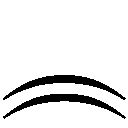猫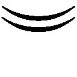の話をしたいな～なんて目論んでいたのですが、まさに絵に描いたなんとやらです）。
今回も、一冊の本になるまで、本当に色々な方にお世話になっております。指折り数えても追いつかないほどで、特に校閲様や製作部の方々、編集様、ありがとうございました。
もっつん様、今回も素敵なイラストをありがとうございます。文章だけでは成立しないライトノベルで、作品に力を与えてくれる魅力的なイラストでした。
その他にも、お世話になった方。この本をお手にとっていただいた読者の皆様方。ありがとうございます。これからもラノベ文庫と『銀糸の魔法式』をよろしくお願いします。
浅倉イネ
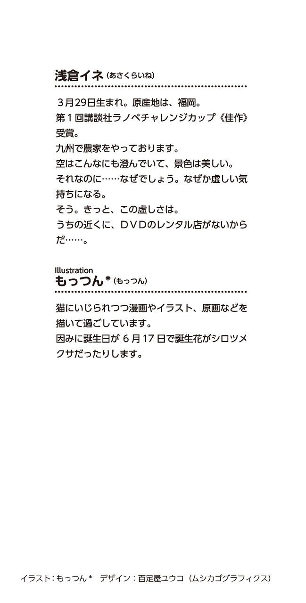
本作品は、二〇一三年五月、小社より講談社ラノベ文庫として刊行されたものを電子書籍化したものです。
銀糸の魔法式２
白き狼と黒猫
二〇一三年六月一日発行
浅倉イネ
©Ine Asakura 2013
発行者 清水保雅
発行所 株式会社講談社
東京都文京区音羽二‐一二‐二一
〒112-8001
◎本電子書籍は、購入者個人の閲覧の目的のためにのみ、ファイルの閲覧が許諾されています。私的利用の範囲をこえる行為は著作権法上、禁じられています。
01